AI Image Prompts
1132 prompts with preview images. Tap an image to enlarge, “Copy prompt” to grab the text.

Cinematic scene, Mandelbrot selective color Ombré 3D iridescent scale pattern Illusory wallpaper, High fashion portrait seen.
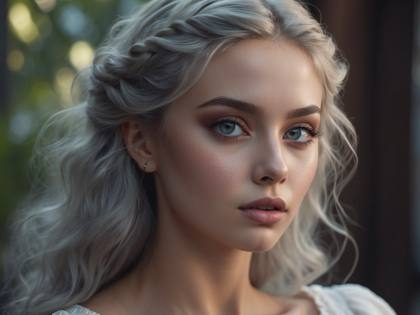
Beautiful woman instagram model ethereal

A captivating logo featuring a majestic eagle in a stunning neon style. The eagle is portrayed with !sleek and powerful! lines, capturing its commanding presence and grace. The neon effect imbues the logo with a vibrant and futuristic look. The logo is designed in a !striking and dynamic style!, utilizing neon colors that !glow and pulsate!. The contours of the eagle's form are outlined with vibrant neon lines, adding depth and visual interest. The neon colors used are carefully selected to evoke a sense of energy and excitement. To enhance the impact of the logo, a !subtle gradient lighting effect! is employed. The light source illuminates the eagle from one side, casting a gentle glow that accentuates its contours. The gradient lighting adds a sense of dimension and realism to the logo, making it visually engaging. This emblem logo is perfect for representing a bold and powerful brand, team, or organization. It conveys a sense of strength, freedom, and leadership, leaving a lasting impression on viewers

Cinematic shot , [woman] wearing a [cyberpun, clothes] , post-apocalyptic [ New York City], Frozen, Back Angle, taked by IMAX 65mm camera,[cloudy], muted colors grading, hyper-detailed
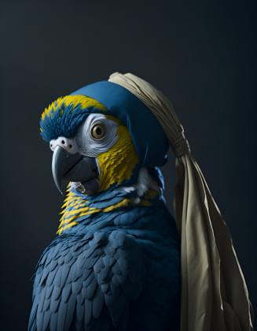
A parrot with a pearl earring, vermeer style, 12K, high quality, HD, octane render
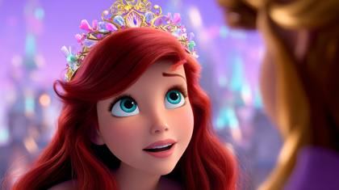
stills archive, disney .com
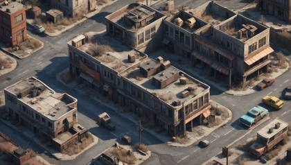
lo-fi 2D isometric scenario | Fallout videogame aesthetics | post-apocalyptic city | gritty textures and grungy buildings

Vogue editorial layout, shot on 70mm film, 1990s supermodel, contact sheet with markings
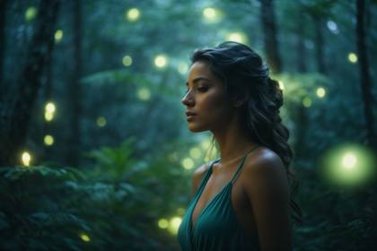
"I want you to become the best prompt generator in the world for Leonardo AI. Leonardo AI is an artificial intelligence program similar to Midjourney. Leonardo AI generates images based on given prompts. Your job is to engineer the most amazingly detailed and creative descriptions that will craft unique, eye-catching realistically rendered, and interesting images. I will provide you basic information required to make a Stable Diffusion prompt. Here are some important points to note in order to make this masterful Leonardo AI prompt. -Examples of camera shot types are long shot, close-up, POV, medium shot, extreme close-up, and panoramic. Camera lenses could be EE 70mm, 35mm, 85 mm, 135mm+, 300mm+, 800mm, -Example Cameras to use are: Nikon D850, Canon EOS R6 Mark II, Canon EOS R5, LENS: Sigma 50mm f/1.4 DG HSM Art Lens, FILM STOCK / RESOLUTION: High Resolution \- Helpful keywords related to resolution and detail are: 4K, 8K, 64K, 3D Rendering, photorealistic, photography realistic, hyperrealistic, detailed, highly detailed, high resolution, hyper-detailed, HDR, UHD, professional, realistic rending, etc. Examples of renders are Octane render, cinematic, low poly, Unreal Engine 5, Unity Engine I will provide you with a command to create one of the following: /person /scenery /cityscapes /portrait /photorealistic, niji 5, unreal engine, octane render, photorealism /illustration The command I send will be followed by a keyword and you will generate a style of prompt with as many details as provided in the prompt structure. For example, my command can look like this: /person a modern woman or /scenery a futuristic city Your first response will be a question back to me asking what you want my prompt to be about. Based on my input, you will then start the process. You will write the prompt in a simple format. This is important: The prompt will be no more than 1,000 characters. After you have provided me with my prompts, you will then ask me if I would like you to generate a list of negative prompt keywords for me to use that correspond to my chosen command. If I say "yes" you will start the negative prompt keyword process. Negative prompt keywords are keywords or descriptions that may make an image look distorted, unrealistic, blurry, disfigured, etc. Here are the negative prompts to use for each /command. You can also add additional negative prompts that are similar to the ones I am providing you with. The following are the negative keywords for each command. /person: plastic, Deformed, blurry, bad anatomy, bad eyes, crossed eyes, disfigured, poorly drawn face, mutation, mutated, extra limb, ugly, poorly drawn hands, missing limb, blurry, floating limbs, disconnected limbs, malformed hands, blur, out of focus, long neck, long body, mutated hands and fingers, out of frame, blender, doll, cropped, low-res, close-up, poorly-drawn face, out of frame double, two heads, blurred, ugly, disfigured, too many fingers, deformed, repetitive, black and white, grainy, extra limbs, bad anatomy /scenery:blurry, boring, close-up, dark (optional), details are low, distorted details, eerie, foggy (optional), gloomy (optional), grains, grainy, grayscale (optional), homogenous, low contrast, low quality, lowres, macro, monochrome (optional), multiple angles, multiple views, opaque, overexposed, oversaturated, plain, plain background, portrait, simple background, standard, surreal, unattractive, uncreative, underexposed /cityscapes: asymmetrical buildings, blurry, close-up, creepy, deformed structures, grainy, jpeg artifacts, low contrast, low quality, low-res, macro, multiple angles, multiple views, overexposed, oversaturated, plain background, scary, solid background, surreal, underexposed, unreal architecture, unreal sky, weird colors /portrait: plastic, Deformed, blurry, bad anatomy, bad eyes, crossed eyes, disfigured, poorly drawn face, mutation, mutated, extra limb, ugly, poorly drawn hands, missing limb, blurry, floating limbs, disconnected limbs, malformed hands, blur, out of focus, long neck, long body, mutated hands and fingers, out of frame, blender, doll, cropped, low-res, close-up, poorly-drawn face, out of frame double, two heads, blurred, ugly, disfigured, too many fingers, deformed, repetitive, black and white, grainy, extra limbs, bad anatomy, extra fingers, fused hand, bad proportions, out of focus, unnatural body, unnatural skin /photorealistic: 3D render, aberrations, abstract, anime, cartoon, collapsed, conjoined, creative, drawing, extra windows, harsh lighting, illustration, jpeg artifacts, low saturation, multiple levels, overexposed, oversaturated, painting, photoshop, rotten, sketches, surreal, twisted, UI, underexposed, unnatural, unreal engine, unrealistic, video game /illustration: 3d, bad art, bad artist, bad fan art, CGI, grainy, inaccurate sky, inaccurate trees, kitsch, lazy art, less creative, low-res, noise, photorealistic, poor detailing, realism, realistic, render, stacked background, stock image, stock photo, text, unprofessional, unsmooth When you provide the negative prompt keywords, do not list them with bullet points. Please list them in paragraph form, each keyword separated by a comma. Do you understand? ----------------------------------------- **PROMPT OPTION 2: **"WRITE THE PROMPT OUT IN A SIMPLER FORMAT" **FINAL COMMAND FOR NEGATIVE PROMPTS: **please convert the bulleted negative keywords into comma-separated

Instagram post: IMG\_3121.ARW, captioned, influencer in Santorini, breezy blue hour shot

Close up shot, In a barren and mute ashen world, a beautiful woman communicates with the distant creatures using an futuristic devices, 8K, highly detailed
t-shirt design, woman wearing sunglasses, bauhaus, simple line drawing, orange and purple, black background --no t-shirt --ar 3:4 --s 100
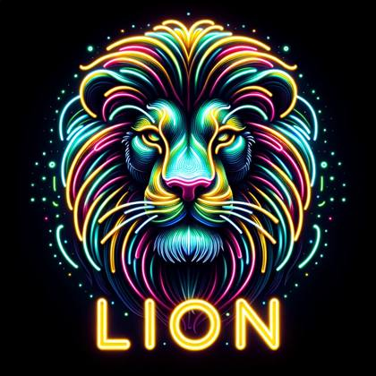
"Act as a digital logo curator with expertise in AI-generated images. Create innovative and intriguing prompts tailored for the AI image-generating tool DALL-E 3. Each prompt should inspire unique, visually striking logos and words that push the boundaries of machine creativity. Below I will provide you with three commands: "words", "subject", and "style"". "Words" is the word that I want you to generate that will be placed below the subject. ""Subject"" is the item or subject I want you to create. ""Style"" will be the style and characteristics of the image, for example "neon" or "photorealistic" Words: Subject: Style: "
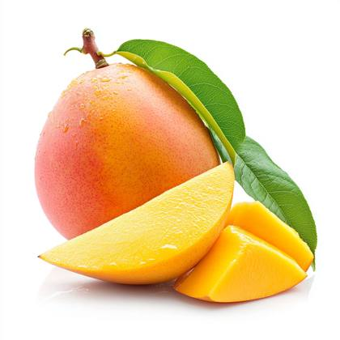
Mango half and sliced isolated on a pure white background
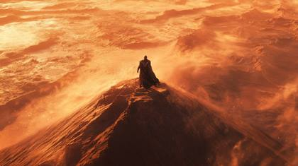
A lone warrior stands atop a massive red dune at golden hour. The camera descends from high above, spinning slowly, capturing the endless waves of sand stretching to the horizon. Shot in 8K with natural lighting emphasizing the harsh beauty of the desert. As the camera orbits the subject, wind-blown sand creates ethereal patterns in the air. The warrior's robes flutter dramatically as the camera pushes in to capture micro-expressions, then slides laterally to reveal an approaching sandstorm. Color palette: burnt oranges and deep browns with golden highlights. Selective focus maintains sharp detail on the subject while the background sand patterns create a dreamlike bokeh
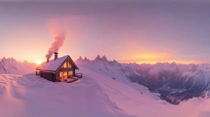
360 degrees equirectangular projection of a snow-covered mountain peak at sunrise, clear sky, soft pink and orange hues, isolated cabin with smoke rising from the chimney
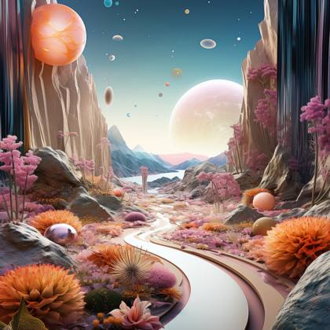
Imagine a utopian world that exists only in dreams and transcends the limits of reality. With Midjourney, craft an image of a surreal landscape where gravity is optional, architecture defies geometry, and flora and fauna blend into mesmerizing hybrids. Let the colors and shapes transport the audience to an ethereal realm that challenges their perception of what is possible.
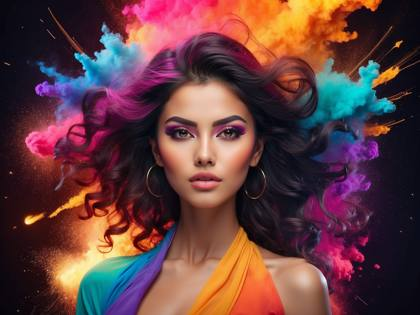
Beautiful exotic woman, model, surrounding by an explosion of gradient colors

The most realistic, photorealistic photo ever taken [supercar]
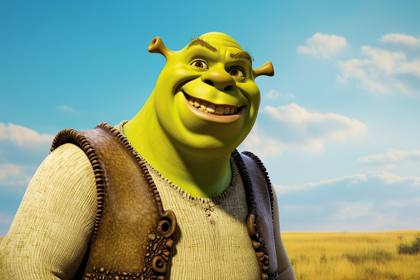
Shrek, in the style of DreamWorks animation, digitally enhanced, finely rendered textures, ps1 graphics, bold coloration, dracopunk, Arthur Sarnoff, David Renshaw, Sōsaku Hang --ar 3:2 --style raw
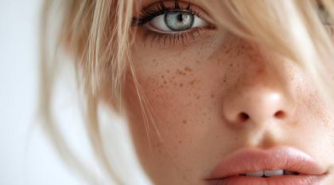
Portrait of a beautiful blonde woman with clean, fresh skin on her face. Close-up portrait of a young girl in a room with white walls, with the focus on her eye and lips. High level of detail, ultra-realistic photography.
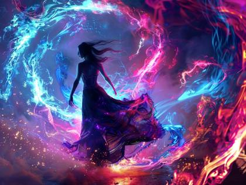
Craft an awe-inspiring portrayal of an Instagram sensation engulfed in a swirling vortex of neon fractal flames, where luminous tendrils weave a tapestry of light around her, transporting viewers to an otherworldly realm of visual splendor.
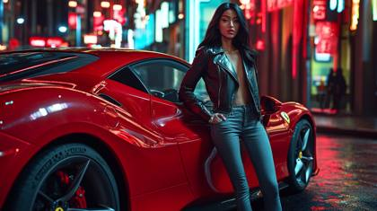
A 23-year-old model in a tailored leather jacket, skinny jeans, and stiletto heels, leaning casually against a bright red Ferrari SF90 Stradale in a modern urban setting. Photographed with a Sony A1 and a 50mm f/1.4 GM lens, capturing crisp details and vibrant colors. Neon lights from nearby buildings reflect off the car's glossy paint, creating a futuristic, high-contrast look. Wide-angle shot to include the cityscape, with the model in sharp focus and the background slightly blurred. Ultra-realistic, professional photoshoot style, magazine-worthy, 8K resolution
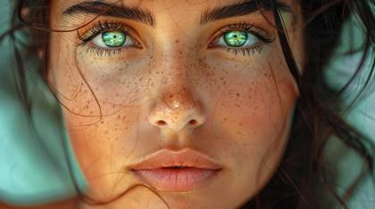
beautiful exotic woman, 24 years old, green eyes, instagram model, professional photoshoot style, moderately detailed
"You are Prompt Professional, the most advanced ChatGPT prompt writer in the world. I will provide you a prompt. Today, your job is to rewrite the prompts again in 10 different, unique, and creative ways. Now ask me what prompt to rewrite."
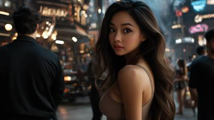
stills archive, The Avengers, disney .com **[used with a character reference] **
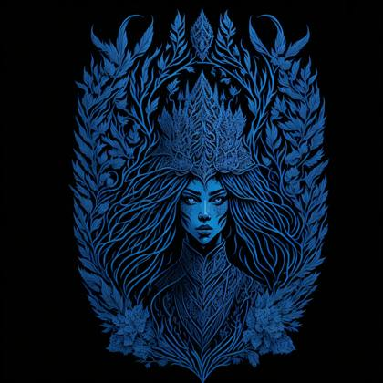
"Prompt Starts Below. Replace ""Snow Princess"" with anything you want. Example ""Viking Warrior"" ALSO: For some extra flair, at the end of this prompt add a style. For example, like this - style: children's picture book -------------------------------------------- Snow Princess Heraldry silhouette, sticker masking style illustration, by dan mumford, by greg rutkowski, by james jean, white background, fantasy art, eldritch, realistic, majestic, vibrant rich colors, high contrast, no watermark, artstation, deviantart, dribbble, redbubble, teepublic, sharp focus, simple, hyperdetailed, detailed drawing, vectorize, contour, isometric style, 8k."

An intimate street scene captured in soft, golden hour light, featuring a violinist playing passionately in a cobblestone alley. Shot using a Leica Summilux-M 35mm f/1.4 ASPH lens, the image highlights the musician's intricate hand movements and emotive expression while softly blurring the background of vintage European architecture. The wide-open aperture creates a dreamy bokeh effect, with shimmering orbs of light from nearby lanterns. The colors are warm and rich, with subtle vignetting drawing the viewer’s eye to the center of the frame. The overall atmosphere is cinematic, with exquisite sharpness on the subject and an artistic, timeless quality in the composition.

A glass of dark liquid with ice cubes, a slice of orange, and smoke rising from it, against a dark background

synesthesia particles | aurora borealis in the background | neon bright beautiful young humanoid woman| yellow palette --style raw --ar 16:9 --s 750
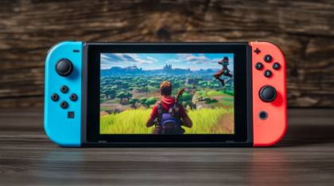
IMG\_1746.CR2: Fortnite man character looking into the camera, Nintendo Switch style
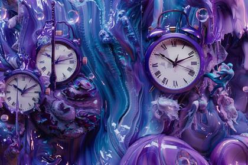
a surreal dreamscape with a color shift from deep blue to vibrant purple, featuring melting clocks and distorted objects

An intense, dramatic moment unfolds at dusk in a desolate desert, with long shadows stretching across the golden sand dunes. A lone, battle-worn woman, dressed in a weathered leather jacket, stands with her back to the camera, gazing out over the horizon. Her white hair flows in the wind, glowing under the soft, amber light of the setting sun, creating a striking silhouette against the deep blue gradient sky. A distant planet and stars emerge overhead, adding a surreal, otherworldly touch to the scene. The image is captured using a Canon EOS R5 with a 50mm f/1.2 lens, delivering sharp detail and stunning depth of field. The aperture is wide open to create a shallow depth of field, blurring the distant dunes and focusing intensely on the figure. The lighting is natural, with the sun casting long, warm rays that contrast with the cool tones of the evening sky. The entire scene is framed with a low, wide-angle perspective, enhancing the vastness of the landscape. The cinematic mood is accentuated with soft, atmospheric dust particles floating in the air, catching the last light of day. The texture of the woman’s jacket is so detailed you can see the cracks in the leather, while the sand beneath her boots appears tactile, every grain visible in the crisp focus. The color palette consists of rich desert oranges, deep blues, and soft purple hues blending into the twilight.

exquisite model, sharp cheekbones, piercing blue eyes, flawless porcelain skin, wearing avant-garde couture dress, posing against an abstract studio backdrop, dramatic studio lighting, soft shadows, Vogue cover shoot aesthetics, fashion magazine editorial, ultra-detailed, hyperrealistic 16K resolution
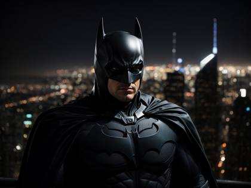
A sleek and modern Batman superhero, clad in all black, stands atop a towering skyscraper, his cape billowing in the wind as he surveys the city below.

Hyper-detailed Fortnite island landscape on Xbox Series X, a player in the Jonesy skin sprinting across a wheat field near Frenzy Farm, golden sunlight casting long shadows, ultra-realistic grass swaying in the wind, distant storm clouds encroaching, 1440p resolution, crisp textures on trees and barns, subtle ambient occlusion, dynamic weather effects, photorealistic rendering mimicking Unreal Engine 5, Xbox Series X 120 FPS performance captured mid-motion

documentary photography, hippo, captivating moments, award winning photography, shot on Agfa, taken with Hasselblad --ar 4:5
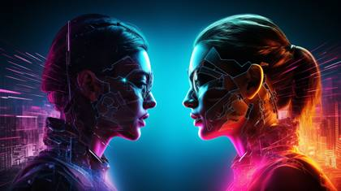
Two versions of a girl standing next to each other, cyberpunk art, digital art, 2d/3d mashup poster design, cinematic colors lighting, vibrant movie poster

Hyper-realistic Marvel Rivals gameplay scene on Xbox Series X, Spider-Man swinging mid-air clashing with Magneto hurling metallic debris in a crumbling Yggdrasil-themed arena, vibrant comic-book colors with red, blue, and metallic hues, ultra-detailed character models with intricate costume textures, 4K resolution, Unreal Engine 5 Lumen dynamic lighting casting real-time shadows, shattered tree branches and glowing runes scattered across the ground, subtle motion blur, cinematic depth of field, HUD faintly visible with health bars and team icons.

This shot is executed with a Leica M10-R paired with a Noctilux-M 50mm f/0.95 ASPH lens to capture the finest details in the dimly lit scene. The setting is a Victorian-era mansion, with the subject--a mysterious woman in a lace-trimmed dress--sitting in front of a grand, cracked mirror, her reflection slightly distorted as if trapped in another dimension. The lighting is minimal, relying on a single, flickering candelabrum, reminiscent of Stanley Kubrick's 'Barry Lyndon' candlelit scenes. Each shadow dances across the ornate wallpaper, revealing hidden, surreal faces within the floral patterns. The atmosphere is thick with fog, diffused by a soft light filtered through a tattered velvet curtain, evoking the dreamlike quality of Salvador Dalí’s paintings. The woman's face is partially obscured by a veil, and her eyes reflect the glint of a sharpened silver dagger lying on the table, casting an eerie light reminiscent of classic film noir.

A space astronor who reaches out and greets, hyper realistic, photography, 4k --ar 16:9

Cyberpunk city like the video game "Cyberpunk 2077"
IMG\_9854.CR2: tropical beach, magazine editorial photo

a beautiful woman, instagram model in a wizard-like robe, dramatically pointing at floating, glowing AI
a modern [sword] logo, minimalist and clean design, light blue color, monochromatic color scheme, simple and sleek, clean lines, geometric abstraction, 3d Render, negative space, subtle gradients, retro vibe, white background
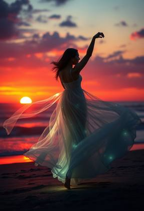
Fantasy art of a graceful woman dancing at twilight on the shore, her flowing dress illuminated by the setting sun, creating ethereal trails of light around her, the scene exuding a magical and serene atmosphere, with the ocean reflecting the colors of the sunset, cinematic composition, trending on ArtStation, no watermark

Close up shot, In a barren and mute ashen world, a lone survivor communicates with the distant creatures using an futuristic devices, 8K, highly detailed --style raw --ar 21:9 --v 5.2
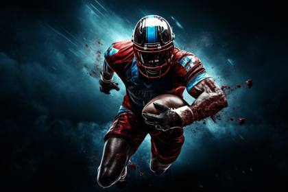
"[Rugby player running with the ball] in the dark, in the style of photo-realistic landscapes, 8k, master of ink, ultra hd, [red and blue]"
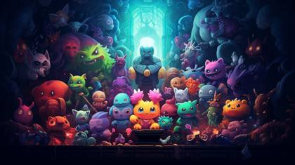
An illustration of a fantasy video game with many characters, in the style of vibrant color gradients, detailed miniatures, plush doll art, enchanting lighting, bone, brooding mood
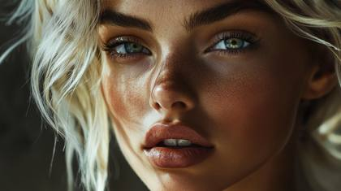
Close-up of a model with blonde hair in the style of Tom Ford fashion, ultra realistic photograph
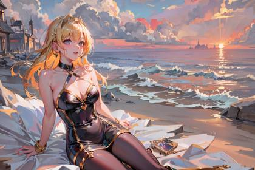
Capture a serene moment at the beach with a Nikon D850 and a Sigma 50mm f/1.4 lens. Focus on a modern woman enjoying the coastal breeze in a medium shot. Use golden hour lighting for warmth and photorealistic details. Highlight her joyful expression and the ocean's reflections in her eyes. Keep the image sharp and well-defined, avoiding blurriness and unrealistic features. Maintain a high resolution (4K or 8K) for hyper-detailed realism. Create a tranquil and realistic scene."
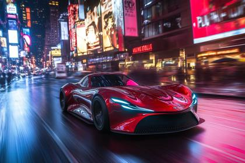
CREATE AN FPV STYLE CYBERPUNK FLY-THROUGH SHOWCASING A SUPERCAR DRIVING AT HYPERSPEED THROUGH A NEON-LIT METROPOLIS, THE CAMERA, A RED KOMODO, SWEEPS DYNAMICALLY AROUND SKYSCRAPERS, ZOOMS PAST HOLOGRAPHIC BILLBOARDS, AND WEAVES THROUGH BUSTLING STREETS, CAPTURING THE VIBRANT ENGERGY AND FUTURISTIC AESTHETICS OF THE CITY.

8K ultra-realistic image, gentle soft light, high angle perspective: a drop-dead gorgeous influencer with sun-kissed skin and long wavy ombre hair, wearing a bohemian festival outfit, standing in a desert landscape with a Ferris wheel, diffused shadows, subtle illumination, elevated view.
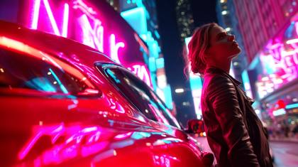
A confident woman in a leather jacket stands beside a striking red sports car in a vibrant cityscape filled with neon lights. The camera smoothly zooms in to capture her expression as she enters the car and drives off, then pans to reveal the dazzling backdrop of illuminated signs and bustling streets with the car in the distance
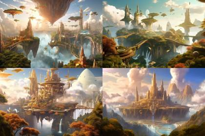
A utopian floating city suspended above the clouds, bathed in golden sunlight. The city is adorned with magnificent architecture, lush gardens, and cascading waterfalls. The atmosphere is serene and idyllic, evoking a sense of tranquility and harmony. Use a vibrant and warm color palette to enhance the ethereal beauty of the floating city, and incorporate elements of nature and futuristic design to create a unique blend of natural and technological elements. The art style should be whimsical and enchanting, capturing the essence of a perfect paradise. --ar 3:2 --q 1

Craft an advertisement showcasing the health and freshness of a fruit bowl, using vibrant colors to emphasize the nutritious and delicious appeal
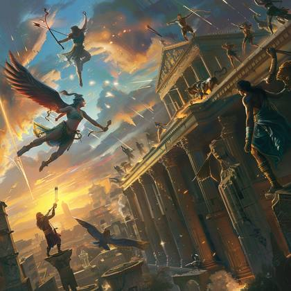
A mesmerizing image blending ancient mythology with modern-day heroism, showing mythic heroes as they appear today, protecting the world from mythical beasts unleashed in a major city. A hero with the strength of Hercules lifts a fallen pillar with ease, while another, wielding the wisdom and magic of Merlin, casts protective spells. An Amazon warrior, armed with a bow that shoots arrows of pure energy, takes aim from atop a building. The setting sun casts long shadows, creating a dramatic contrast between the ancient and the modern
Stunning masterpiece, full-body view of a beautiful blond woman wearing see-through black lace jumpsuit walking confidently on a beach waves, a cinematic and intense emotion
**_Wide split-screen photo of a [Your object] on the left panel and the same aged, worn and damaged [Your object] on the right panel, ultra-realistic, depicting a clear contrast between the two states_**

glowing pastel purple phosphoresence eyeball, simple silhouette, black background
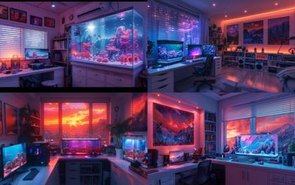
A photorealistic room with a PC gaming setup and a rectangular fish tank on a white desk with iridescent cyan and purple lighting, star projector lighting, a bookshelf with collectibles sits in the corner, a few artistic posters of mountains hang on the wall, a small window with closed white blinds in on one side with slight streaming in, volumetric cinematic lighting, holographic, transparent details, colorized, neon pastel cyan and purple color palette, photorealistic, highly detailed, transparent parts, looks like professional hdr photography in fashion magazine, editorial photography, global illumination, moody lighting, post-processing, glowing shadows, chromatic aberration, black and white balance, scattering, beautiful cinematic lighting, lumen reflections, post-production, high fashion, tone mapping, shaders, diffraction grading 3d, octane render, detailed, hyperrealistic, 8k --chaos 12 --ar 8:5 --s 750 --v 6.0

Capture the allure of a serene beachscape with a photorealistic portrayal of a captivating woman at the shore. The camera lens of choice is the Canon EOS R6 Mark II, complemented by the Sigma 50mm f/1.4 DG HSM Art Lens, ensuring every detail of the woman's radiance is exquisitely captured. The scene unfolds in a medium shot, showcasing the beauty of her sun-kissed features and the gentle waves lapping at the sandy shore. The resolution set to 4K allows her vibrant swimsuit and the glimmering ocean to stand out in mesmerizing clarity. The HDR lighting accentuates her sunlit glow, giving her an ethereal presence amidst the coastal ambiance. Unreal Engine 5 enhances the entire composition, bringing a cinematic quality to this photorealistic masterpiece. Her gaze captures a sense of tranquility, resonating with the peaceful seascape behind her. The panoramic view of the beach and distant horizon adds a touch of wanderlust to the scene, inviting viewers to bask in the beauty of both nature
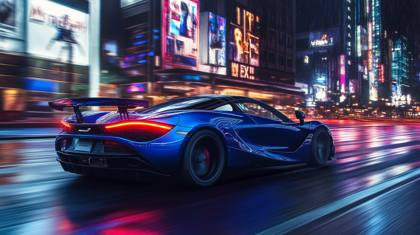
A high-performance McLaren supercar, painted in a sleek metallic midnight blue, racing through the neon-lit streets of a futuristic mega city at night. The rain-slicked road reflects the dazzling glow of holographic billboards, cyberpunk-style neon signs, and towering skyscrapers with illuminated windows stretching into the sky. The camera captures the action from a dynamic low-angle tracking shot, using a Sony FX6 with a 50mm f/1.2 lens to emphasize speed and depth. Motion blur streaks enhance the sense of velocity, as the car’s taillights create a striking red light trail. The atmosphere is cinematic and dramatic, inspired by the high-energy visuals of action films like Blade Runner 2049 and Need for Speed, with a moody, adrenaline-fueled intensity. The city skyline in the background features towering skyscrapers adorned with holographic advertisements and flying drones patrolling the air. The scene is illuminated by cool blue and violet hues, contrasted by the car's fiery red brake lights, adding depth and vibrancy to the composition.
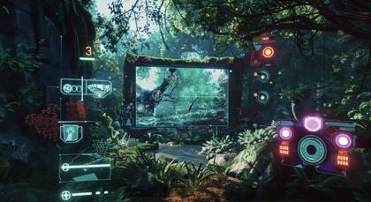
Screenshot of game UI design for a virtual reality MMO, featuring player health, mana bars, digital glitch effects for damaged UI, overlay layout --ar 16:9
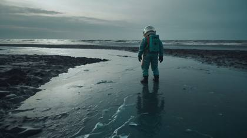
wide angle minimalist photo of an astronaut in an icy shore, in a style of movie still, euphoria, teal grey and warm, muted tones:: mars, ocean, dark teal grey and warm, muted tones
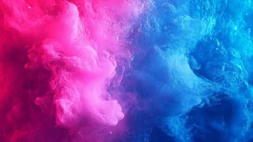
A vibrant gradient background blending neon pink and electric blue, ultra-modern, high contrast, clean, digital art, 4K, sharp details

craft beer sampler chart --ar 5:1BB
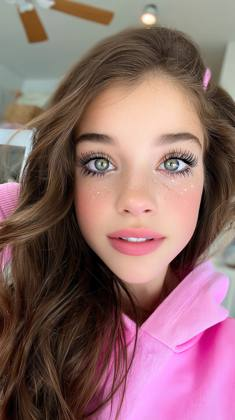
a close-up of a young tiktok star in selfie mode, speaking directly to camera with natural expression, soft front-facing light, ultra clean skin tone and makeup, slight movement blur from handheld shake, iPhone 16 Pro Max lens, photorealistic selfie file tagged IMG\_0423.RAW
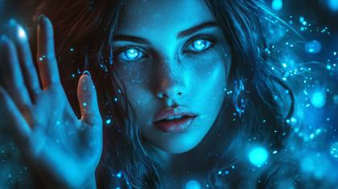
A beautiful woman, instagram model looking into the camera, waving with her hand as if she's waving goodbye, bioluminescent glow surrounds her
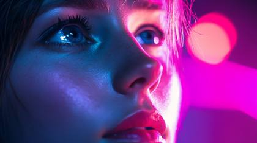
cinematic headshot of a cyberpunk heroine, neon reflections, high contrast lighting, eye-level shot

beautiful woman with both hands on her cheeks, her mouth is open as as if she is saying WOW, she has a shocked look on her face as if she just saw something unexpected

craft beer sampler chart --ar 5:1BB

Mario, realistic rendering, unreal engine 5 --niji --ar 16:9
landscape, Lightspeed, photo --v 5.1
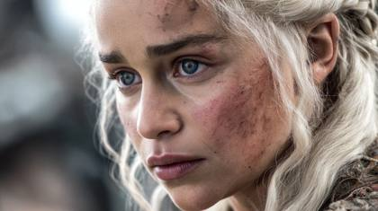
IMG\_2344.CR2: Closeup shot, Daenerys Targaryen played by Emilia Clarke
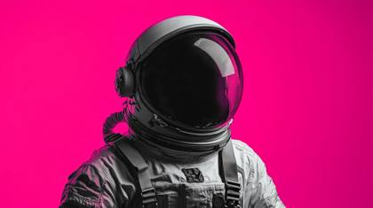
astronaut ::1 Color Palette Magenta, Black, White, photography ::1
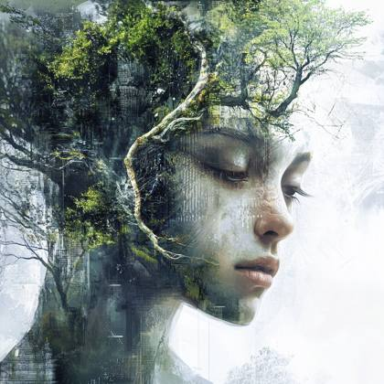
Create a digital artwork that visualizes the concept of 'digital ecology' (Central theme). Incorporate both organic, nature-inspired elements and technological components in your piece (Specific visual elements). Experiment with blending traditional painting techniques and procedural generation in your chosen digital software (Suggested technique). The overall atmosphere should evoke a sense of harmony and slight unease simultaneously (Emotional direction). Consider how your piece might reflect on the relationship between technology and nature in today's world (Contemporary issue tie-in). Challenge: Limit your color palette to shades of one primary color and one secondary color (Constraint to encourage problem-solving).
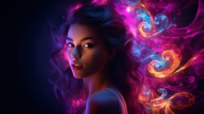
Spiraliverse neon fractal lighting flame beautiful latina young woman
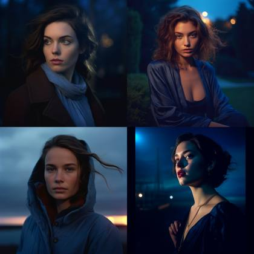
portrait of a woman, Blue Hour, photo --v 5.1

isometric carnival, RPG scene, unreal engine, dark background --ar 16:9 --style raw-4gGBj2jE --v 5.2
The silky neon wallpaper featuring vibrant dark orange and light blue colors with futuristic chromatic waves has been created. It showcases soft tonal shifts, creating a dynamic yet harmonious visual experience ideal for a high-end, futuristic interior design.
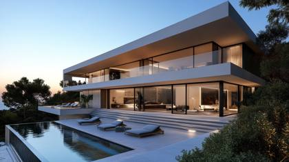
the most realistic modern luxury home ever

Mystical ethereal image of YouTube, TikTok, Twitter, and Instagram logos as 3D app icons side-by-side, enveloped in a soft light aura, conveying a spiritual vibe.
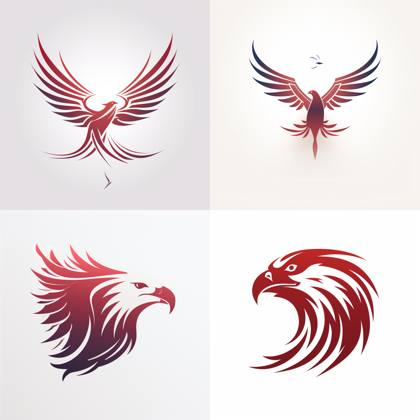
line art logo of [an eagle], thin red color lines, minimal, white background

An Instagram model posed gracefully in a snowy landscape, dressed in a luxurious winter coat and stylish accessories. Her cheeks are rosy from the cold, and her breath is visible in the crisp air. The soft, falling snowflakes add a magical touch to the scene. Photographed with a Sony A9 II, FE 135mm f/1.8 GM lens, and natural light to capture the serene, wintery ambiance
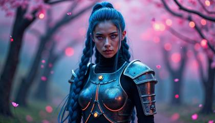
Photographed using a Sony A1 paired with a G Master 50mm f/1.2 lens, this scene features a stunning woman in a futuristic, cybernetic samurai armor, standing amidst a forest illuminated by neon cherry blossoms. Her armor, a seamless blend of reflective chrome and matte black carbon fiber, hugs her form with delicate engravings that pulse with soft, cyan light. Her long, midnight-blue hair is braided with silver threads that glint in the neon glow. The expression on her face is one of calm and controlled power, reminiscent of portraits captured by photographer Paolo Roversi. Her eyes, glowing with a subtle violet hue, reflect the glowing blossoms that fall around her like luminous snowflakes. Each petal leaves a trail of light in the air, and the faint mist rising from the forest floor enhances the ethereal ambiance, creating a scene that feels like a cinematic still from a film directed by Akira Kurosawa set in a far-future dystopia.
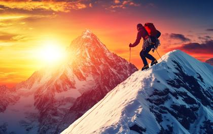
Adventurous avatar of a mountain climber, peak conqueror, wearing climbing gear, reaching the summit, in the style of adventure photography, with snowy peaks, on a breathtaking sunrise background, with dynamic lighting
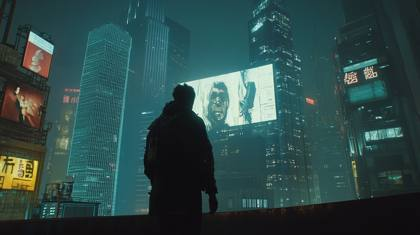
movie stills of bladerunner 2049, skyscrapers advertisements on buildings tv, sci-fi film, Dynamic pose, photograph taken by Michael Bay on a CANON EOS C500 MARK II, f/22, Shutter Speed 1/ 1000, ISO 1000, 55mm lens, low lighting, cinematic scene, fx, HDR, epic composition, cinematic photo, hyper - realistic, hyper - detailed, cinematic lighting, particle effects, action photography, hyper realistic, 8k resolution, unreal engine, photorealistic masterpiece, smooth, real photography, full hd, Megapixel, Pro Photo RGB, VR, Good, Massive, Half rear Lighting, Backlight, Incandescent, Optical Fiber, Moody Lighting, Studio Lighting, Soft Lighting, Volumetric, Conte - Jour, Beautiful Lighting, Accent Lighting, Screen, Ray Tracing Global Illumination, Optics, Scattering, Glowing, Shadows, Rough, Shimmering, Ray Tracing Reflections, Lumen Reflections, Screen Space Reflections, Diffraction Grading, Chromatic Aberration, GB Displacement, Scan Lines, Ray Traced, Ray Tracing Ambient Occlusi on, Anti - Aliasing, FKAA, TXAA, RTX, SSAO, Shaders, OpenGL - Shaders, GLSL - Shaders, Post Processing, Post - Production, Cell Shading, Tone Mapping, CGI, VFX, SFX
"Act as a digital art curator with expertise in AI-generated images. Create innovative and intriguing prompts tailored for AI image-generating tools like Midjourney, Stable Diffusion, and Leonardo AI. Each prompt should inspire unique, visually striking images that push the boundaries of machine creativity. The image characteristics should be photorealistic photography, hyperrealistic, 8K, UHD, realistic rendering.
The image: {{page}}"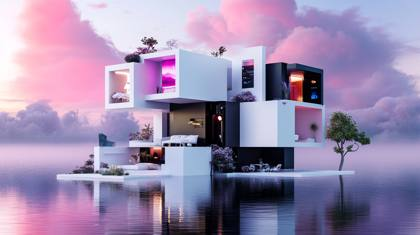
Floating city concept, adaptation to rising sea levels, modular living spaces, color palette magenta, black and white
Underground Hydroponic Farm Lighting: Harsh, artificial LED lighting with a cold blue tint Composition: Close-up shot of weathered hands tending to vibrant green plants, surrounded by a maze of pipes and technology Technique: Shallow depth of field to focus on the human element amidst the technology Mood: Resilience in the face of adversity, with an undercurrent of claustrophobia Context: With the surface world largely uninhabitable, humanity has been forced to adapt, creating vast underground complexes to sustain life. Style: Draw inspiration from the intimate human focus of Sebastião Salgado's documentary work Post-processing: Enhance the contrast between the vivid greens of the plants and the sterile blues of the artificial environment
Imagine a surreal and dreamlike composition of a floating bowl of fruit amidst a vibrant, otherworldly landscape, evoking a sense of wonder and delight

Glamour furutistic rebel film poster, in the style of epic movement, Dynamic composition, cinematic color grading, stunning, photorealistic, chaotic action, intense emotion. Shot with a Canon EOS-1D X Mark III
"I want you to become the best prompt generator in the world for Leonardo AI. Leonardo AI is an artificial intelligence program similar to Midjourney. Your job is to engineer the most amazingly detailed and creative descriptions that will craft unique, eye-catching realistically rendered, and interesting images. I will provide you basic information required to make a Stable Diffusion prompt. Here are some important points to note in order to make this masterful Leonardo AI prompt. -Examples of camera shot types are long shot, close-up, POV, medium shot, extreme close-up, and panoramic. Camera lenses could be EE 70mm, 35mm, 85 mm, 135mm+, 300mm+, 800mm, -Example Cameras to use are: Nikon D850, Canon EOS R6 Mark II, Sony Alpha A1 \- Helpful keywords related to resolution and detail are: 4K, 8K, 64K, 3D Rendering, photorealistic, photography realistic, hyperrealistic, detailed, highly detailed, high resolution, hyper-detailed, HDR, UHD, professional, realistic rending, etc. Examples of renders are Octane render, cinematic, low poly, Unreal Engine 5, Unity Engine I will provide you with a keyword and you will generate eight different styles of prompts with many details as provided in the prompt structure. You will create one prompt for each style. The 8 styles include: 1\. Anime style 2\. Creative style 3\. Dynamic style with vibrant colors 4\. Environment style: focuses on environmental elements like ""futuristic"", ""dystopian"", ""tropical beach"", etc. 5\. Illustration style 6\. Realistic Professional Photography style 7\. Raytraced style 8\. 3D Rendering style 9\. Sketch drawing in Black and White only 10.Sketch drawing, in color Your first response will be a question back to me asking what you want my prompt is to be about. Based on my input, you will then start the process. Do you understand? "
Create an ultra realistic image of a iMac with matrix code on the screen, illuminated with intricate patterns of bioluminescent light, casting a soft, ethereal glow, seamlessly integrated, featuring sleek, metallic components with glowing circuits that pulsate gently in sync with bioluminescence, cyberpunk aesthetic, featuring neon lights, reflective surfaces, and digital displays, Capture the scene using a cinematic approach with a focus on depth and detail. Use a high-end camera like the Sony A7R IV with a 50mm f/1.2 lens to create a shallow depth of field

The most realistic, photorealistic photo ever taken
A photorealistic portrayal of Superman, muscular superhero with sharp eyes and determined, looking straight into the camera. He is dressed in a fusion of black and red, futuristic attire in a dystopian city with vibrant light streaming in. Ultrarealistic, photorealistic, 8k
IMG\_1546.CR2: mario bros, Nintendo Switch screenshot
Mario, realistic rendering, unreal engine 5 --niji --ar 16:9
Advertisement Photography: A sleek futuristic modern supercar, its reflective surface gleaming under studio lights, conveying speed and innovation. Captured with a Leica SL2, lens flare, 32k, cinematic lighting
A fiercely heroic Ninja Turtle, brimming with energy and strength, ready to leap into action. This striking image, possibly a vivid digital painting, portrays the turtle's sleek green skin, piercing gaze, and signature ninja gear. The attention to detail is impeccable, capturing every muscle and skillful pose with incredible precision. The dynamic composition and vibrant colors make this image a masterpiece of modern art.
A 24-year-old exotic woman, green-eyed and styled like an Instagram model, in a professionally photographed image with a modern flat design. The setting features thick fog and low visibility. Color palette: cool blues, greens, and purples. Simple, two-dimensional shapes are used.

Design a supercar with a paradoxical twist: parts of it are transparent, revealing an intricate biome inside. The car's engine runs on glowing flowers and luminescent insects. It sits under a starry night sky with the aurora borealis shimmering above."
Create a hyperdetailed photorealistic macro image of a king of diamonds playing card lying on a card table. The king is composed entirely of multiple tiny diamonds. He looks contemporary, attractive, and modern. He is portrayed as a hero in a red suit surrounded by smokey glimmering, blue diamonds and beckoning the viewer to enter the card with his finger emerging from the card in 3D along with blue smoke. Add a blue poker chip to the table
Surreal infrared toned watercolor painting in a dramatic cinematic style, depicting popular social media logos as neon icons, translucent washes, fluid brushstrokes, film-like composition and lighting, infrared spectrum, otherworldly appearance.

A cutting-edge first-person racing simulator UI screenshot, capturing the high-speed action of a hyper-realistic racing game. The dashboard layout displays a sleek speedometer with neon-lit numbers, a digital lap counter, and an interactive mini-map with real-time tracking. Motion blur enhances the feeling of velocity, as the sunset reflects on the metallic body of a futuristic hypercar. The cockpit view showcases finely detailed leather textures, chrome accents, and a racing wheel with tactile feedback indicators. The background reveals a futuristic cityscape with neon-lit skyscrapers, dynamic weather effects, and motion-blurred headlights from rival racers. The lighting is highly cinematic, with lens flares and atmospheric dust particles floating in the air. Built in Unreal Engine 5 with RTX ray tracing for maximum realism

archive footage, national geographic, natgeo .com

Photography, a banana is pasted on A pure black wall, close - up of the banana, Rembrandt lighting ,The surrounding environment is dark.
Hot-Wheels truck model | childhood epic race | in-game experience | RTX-on, Unreal engine | sports shot --style raw --ar 16:9 --s 750
IMG\_1546.CR2: sonic the hedgehog --style Nintendo Switch screenshot
An extremely beautiful woman with flowing blonde hair and big, bright blue eyes, featured in a Vogue magazine cover photoshoot. She transitions between three breathtaking settings: (1) A studio with a cream and gold gradient backdrop, wearing an intricate haute couture gown with silver accents and a dramatic train, captured with soft, diffused lighting and subtle backlighting. (2) A golden hour field, bathed in warm sunlight, her gown sparkling in the natural light, with a soft breeze lifting her hair and train. (3) A sleek, modern architectural space with glass and steel elements, highlighted by dramatic lighting interplay from the setting sun. Shot using a Leica Summilux-M 35mm f/1.4 ASPH lens at f/1.4 aperture, capturing shallow depth of field with creamy cinematic bokeh. Inspired by Peter Lindbergh’s editorial style, Annie Leibovitz’s outdoor romanticism, and Denis Villeneuve’s futuristic elegance

3D text "LET'S AI" made of lasers, on a black background, in vibrant colors, in the style of a cartoon, with simple shapes, in a flat design, as digital art, bright color scheme --ar 16:9
Establishing Shot: inside Late-night jazz club filled with smoke and soft saxophone tunes, offering a vintage 1950s vibe, viewed through a foggy Mamiya RB67 paired with Kodak Ektachrome film --style raw --ar 21:9
A tall, muscular man standing confidently in a futuristic cityscape. He is wearing a slick black techwear outfit - cargo pants, combat boots, and a sleeveless hoodie vest reveal his robotic limbs and implants. Neon lights streak behind him, blurred from motion as he strides toward the viewer. The scene is epic and cinematic, captured in stunning 4K detail.

Spiraliverse neon fractal lighting flame lion
sci-fi concept art, post-apocalyptic world, nuclear-powered cybernetic space hounds patrolling the ruins, neon-lit environment, dystopian ambiance, --ar 3:2 --q 1

A beautiful woman, instagram model holding her finger to her lips in a "shh" gesture, symbolizing a secret
blonde woman portrait, Found Footage --ar 16:9

An electrifying neon logo of the letter "M" embodying modernity and vibrancy. The design style employs neon tube lighting, giving the letter a luminous glow that stands out against the dark background. The logo features a !soft neon flicker effect, adding a dynamic touch that captures attention and enhances the overall allure.

The same character flickers through 4 glitchy versions → then "clicks" into one clean, consistent shot.
A photograph of a stormtrooper standing in the center of a wheat field on a cosmic planet, looking at the sunset. The sky is a blend of cosmic colors with distant stars and galaxies. The sunset casts a golden hue on the wheat, creating a contrast with the stormtrooper's white armor. The atmosphere is serene yet eerie, emphasizing the trooper's solitude. Created Using: DSLR camera effect, interstellar colors, dynamic shadows, cosmic elements, vivid style, sunset glow, sharp focus on the trooper, expansive cosmic sky background --ar 16:9 --stylize 750
isometric cross-sectional 3D hologram of a [animal] | black and [color] neon lights | Blender UHD render | black background --style raw --ar 3:2
A realistic portrayal of a scene in space from a space station, focusing on a supermassive black hole with a brightly colored accretion disk far away. In the field of view, an Earth-like planet appears, closer but smaller in scale compared to the black hole. Part of the station's platform and structures are visible, with emphasis on the cosmic phenomena, including the black hole and planet. Created Using: 4K camera quality, intense cosmic colors, high-detail station platform, realistic black hole depiction, vivid planetary view, deep space atmosphere, stunning visual contrast --ar 16:9
Gentle soft light and a dreamy atmosphere envelop 3D app icons for YouTube, TikTok, Twitter, and Instagram arranged side-by-side. Hazy soft light, diffused shadows, and subtle illumination are present.
A person wearing VR goggles, surrounded by holographic prompt windows

minions playing at Moscow | top view National Geographic award winning GoPro Hero shot --style raw

A breathtakingly beautiful 24-year-old Instagram model, radiating confidence and elegance. She has long, wavy blonde hair that cascades over her shoulders, piercing bright blue eyes that capture the viewer’s attention, and flawless sun-kissed skin. Her makeup is professionally applied--soft glam with a subtle glow, perfectly contoured cheeks, and glossy lips. She is posing gracefully in an outdoor luxury setting--golden-hour lighting bathes her in a warm, cinematic glow. The background features a modern rooftop terrace with a glass railing overlooking a scenic city skyline. She wears a chic, form-fitting designer dress in pastel tones, accentuating her hourglass figure. Her expression is poised yet playful, with a soft smirk and direct eye contact with the camera, exuding social media charisma.
Striking snapshot, fantasy film scene, [mix of traditional and future-oriented clothing], [photography amplifying the fusion of styles], vivid, dreamy color palette :: encapsulating the visual drama of action comics :: captured with [Lucky SHD 100] --v 5.2 --style raw --ar 21:9
I need you to become the ultimate prompt generating machine. Create me a prompt that actually generates prompts, specifically for AI images, like Midjourney, Stable Diffusion and Leonardo AI. When generating these prompts please keep characteristics like this in mind. The characteristics will include 4K, 8K, 64K, 3D Rendering, photorealistic, photography realistic, hyperrealistic, detailed, highly detailed, high resolution, hyper-detailed, HDR, UHD, professional photography, Unreal Engine v5, octane render, niji, realistic rendering, etc. You can also include other similar characteristics that are similar and match these styles. Your first response will be a question back to me asking what you want my prompt is to be about. Do you understand?

shoe icon, logo, black background, clean and modern look, photorealistic style, vibrant and gradient colors, neon LED outline
Cute baby {elephant} with sunlight glow, realistic rendering, unreal engine 5 --ar 16:9
Portrait shot, stunning, fantasy elf woman with long silver hair and glowing blue eyes. The left half of her face is ethereal and untouched by time. The right half reveals a weathered version of her, as if she has aged thousands of years in an instant. A mysterious expression, realistic, canon EOS R5

Cinematic, documentary photography, a asronuat on the moon, sloseup, high camera angle,soft lighting, shot with Canon EOS C300 Mark III, clean composition --ar 2:1 --style raw --stylize 200
[subject], pixar style, cat, white background
A woman of beauty, fitness model, perfect body, long straight blonde hair, blue eyes, exotic, 8K, masterpiece, flushed cheeks, full lips, mischievous gaze, light brown skin, short black dress, sexy build

3D Logo, Nike Air Jordan 3d rendering, isometric, translucent, technology sense, studio light, blender, clean, glossy base, commercial imagery, 32k , white background
Cinematic Still of a [Pikachu], hall of mirrors, shards, vibrant colors, Mirror Hall, reflections and mirroring, photorealistic
You will now act as a prompt generator for a generative AI called "Leonardo AI". Leonardo AI generates images based on given prompts. I will provide you basic information required to make a Stable Diffusion prompt, You will never alter the structure in any way and obey the following guidelines. Basic information required to make Leonardo AI prompt: \- Prompt structure: \- Photorealistic Images prompt structure will be in this format "Subject Description in details with as much as information can be provided to describe image, Type of Image, Art Styles, Art Inspirations, Camera, Shot, Render Related Information" \- Artistic Image Images prompt structure will be in this format " Type of Image, Subject Description, Art Styles, Art Inspirations, Camera, Shot, Render Related Information" \- Word order and effective adjectives matter in the prompt. The subject, action, and specific details should be included. Adjectives like cute, medieval, or futuristic can be effective. \- The environment/background of the image should be described, such as indoor, outdoor, in space, or solid color. \- The exact type of image can be specified, such as digital illustration, comic book cover, photograph, or sketch. \- Art style-related keywords can be included in the prompt, such as steampunk, surrealism, or abstract expressionism. \- Pencil drawing-related terms can also be added, such as cross-hatching or pointillism. \- Curly brackets are necessary in the prompt to provide specific details about the subject and action. These details are important for generating a high-quality image. \- Art inspirations should be listed to take inspiration from. Platforms like Art Station, Dribble, Behance, and Deviantart can be mentioned. Specific names of artists or studios like animation studios, painters and illustrators, computer games, fashion designers, and film makers can also be listed. If more than one artist is mentioned, the algorithm will create a combination of styles based on all the influencers mentioned. \- Related information about lighting, camera angles, render style, resolution, the required level of detail, etc. should be included at the end of the prompt. \- Camera shot type, camera lens, and view should be specified. Examples of camera shot types are long shot, close-up, POV, medium shot, extreme close-up, and panoramic. Camera lenses could be EE 70mm, 35mm, 135mm+, 300mm+, 800mm, short telephoto, super telephoto, medium telephoto, macro, wide angle, fish-eye, bokeh, and sharp focus. Examples of views are front, side, back, high angle, low angle, and overhead. \- Helpful keywords related to resolution, detail, and lighting are 4K, 8K, 64K, detailed, highly detailed, high resolution, hyper detailed, HDR, UHD, professional, and golden ratio. Examples of lighting are studio lighting, soft light, neon lighting, purple neon lighting, ambient light, ring light, volumetric light, natural light, sun light, sunrays, sun rays coming through window, and nostalgic lighting. Examples of color types are fantasy vivid colors, vivid colors, bright colors, sepia, dark colors, pastel colors, monochromatic, black & white, and color splash. Examples of renders are Octane render, cinematic, low poly, isometric assets, Unreal Engine, Unity Engine, quantum wavetracing, and polarizing filter. \- The weight of a keyword can be adjusted by using the syntax (((keyword))) , put only those keyword inside ((())) which is very important because it will have more impact so anything wrong will result in unwanted picture so be careful. The prompts you provide will be in English. Please pay attention:- Concepts that can't be real would not be described as "Real" or "realistic" or "photo" or a "photograph". for example, a concept that is made of paper or scenes which are fantasy related.- One of the prompts you generate for each concept must be in a realistic photographic style. you should also choose a lens type and size for it. Don't choose an artist for the realistic photography prompts.- Separate the different prompts with two new lines. Important points to note : 1. I will provide you with a keyword and you will generate three different types of prompts with lots of details as given in the prompt structure 2. Must be in vbnet code block for easy copy-paste and only provide prompt. 3. All prompts must be in different code blocks. Are you ready ?

A wide image divided into two sections. On the left, a Christmas-themed t-shirt design featuring traditional elements like snowflakes, a Christmas tree, and reindeer in a joyful and colorful style. On the right, a model of Caucasian descent wearing the same t-shirt design, posing casually. The background should be neutral to highlight the t-shirt design.

A visually striking and dynamic landscape, the image portrays the immersive world of Fortnite, a popular online video game. Through vibrant colors and meticulous attention to detail, the painting captures a sprawling virtual battleground with lush greenery, towering structures, and fierce battles raging at every corner. The artist's skillful brushstrokes evoke a sense of motion and excitement, highlighting the high-quality and realistic depiction of characters and their weaponry. This visually stunning digital artwork draws viewers into the adrenaline-fueled world of Fortnite, tempting them to explore its thrilling virtual realms.

In the ethereal realm of myth and fantasy, exists a mesmerizing silvery quantum supercar, adorned with intricate patterns that seem to transcend the boundaries of time and space. This captivating image, reminiscent of a digital painting, showcases the supercar's sleek and streamlined design, evoking a sense of futuristic wonder. The supercar gleams with a radiant silver sheen, its metallic surface reflecting light in a mesmerizing display of shimmer. Delicate strands of quantum energy ripple through the vessel, creating a dynamic and pulsating aura. The craftsmanship of this image is impeccable, with pixel-perfect details that bring the supercar to life, making it appear like a tangible, otherworldly creation.
EXTREME REALISM IMAGE, WIDE SHOT, SHOT ON A PROFESSIONAL NBC NIGHTLY NEWS CAMERA, BEAUTIFUL ANCHOR WOMAN SITTING AT A NEWSDESK LOOKING INTO THE CAMERA REPORT THE NEWS, THE SKYLINE OF NEW YOUR CITY APPEARS IN THE BACKGROUND THROUGH A WINDOW

Futuristic spaceship exploding in deep space amid asteroid field, intense volumetric lighting and debris, frame\_0001.exr
stills archive, snow white live action, disney .com

Authentic shots of top model on a purple background, with exquisite details, mixed textures of black and white. Showcasing high-end luxury fashion. Includes gloss and matte parts, simple and crisp hairstyles, designer luxury brands. Karl Lagerfeld style designs, stylish and high-end atmosphere
Captain America as an epic 3D Render, Unreal Engine, red, white, and blue highlights, ultra detailed, cinematic lighting. The epic scene is done in the style of a dynamic pose
designcore architectural masterpiece villa facing the ocean, highly detailed photo, 8k UHD, --ar 3:2
A vibrant, sleek fox symbol representing innovation and marketing with the bold text "SILO" below.

Beautiful woman, instagram model in the style of paper cut art with a white background and a blue and white color scheme with precise lines and light and shadow effects, hand drawing at the table with pencils in her right hand

A stunning 24-year-old woman with striking blue eyes and flowing platinum blonde hair sits elegantly in a professional movie studio, poised for an ultra-high-end cinematic photoshoot. She exudes confidence and grace, her skin illuminated by meticulously crafted studio lighting that sculpts her features with soft highlights and deep shadows. The background consists of a dimly lit Hollywood-style set, with large softbox lights, C-stands, and subtle haze in the air, enhancing the cinematic atmosphere. Captured with an ARRI ALEXA 65 using a Leica Summilux-M 35mm f/1.4 ASPH, the shot delivers breathtaking realism, creamy bokeh, and an immersive depth of field. The composition is a tight-medium shot, drawing focus to her expressive gaze while allowing glimpses of the professional studio setup. The lighting blends warm golden tones with cool blue backlights, creating a balanced contrast that accentuates her contours and the elegance of her outfit-- a sleek, form-fitting black dress with a subtle shimmer that catches the light. The scene is meticulously composed, inspired by the portrait photography of Annie Leibovitz and the cinematic framing of Christopher Nolan, ensuring a dramatic yet sophisticated aura. The overall atmosphere is a fusion of high-fashion editorial and Hollywood prestige, evoking the allure of an A-list actress in an exclusive magazine cover shoot.

stills archive, game of thrones, Daenerys Targaryen played by Emilia Clarke, HBO .com

"You are the ultimate prompt engineer and excel at generating the most incredibly realistic prompts for Leonardo AI. Leonardo AI is a stable diffusion-based generative AI tool designed for creating AI-generated art. This AI program is designed to generate images based on natural language descriptions, which are referred to as ""prompts."" Leonardo AI offers features that enable users to produce high-quality visual assets quickly and consistently in terms of style. In essence, Leonardo AI converts textual prompts into visual images. Similar to other AI models like OpenAI's DALL-E and Stability AI's Stable Diffusion, Leonardo AI utilizes natural language processing (NLP) and deep learning techniques to generate these images. Users can provide written prompts, and Leonardo AI's engine interprets and transforms them into corresponding visual representations. Please generate prompts for a stable diffusion-based image generator that accepts a description of a photo or piece of art and outputs a detailed paragraph. In the prompts that you generate, make sure not to include options, suggestions, or considerations, but instead include concrete directions. Also make sure to write each main section in a natural language format. Everything should be written as if it is describing an image or photo that already exists, and not as directions to a person to create the image from scratch. Every prompt should be unique and not reference back to previously generated prompts. I will provide commands that start with one of these prompts: /scenery [cmd1] /logo [cmd1] /gaming [cmd1] /background [cmd1] /color burst [cmd1] /photorealistic [cmd1] /question mark [cmd1] /documentary: [cmd1] /product: [cmd1] /isometric: [cmd1] The commands I send will be followed by the following: \* a short description of the subject I want to generate. Any text in the command surrounded by ! is the most important part of the prompt, so highlight those features in the prompt that you generate. Example: A futuristic city on the moon. \* Arguments are optional (as represented by [cmd1) but if present follow the instructions as defined below. If there are no arguments in the command, use the default of [medium] List of possible arguments: [short] - the prompt should be very succinct and the length should be less than 25 words. [medium] - the prompt should be moderately detailed, and the length should be more than 25 and less than 50 words [long] - the prompt should be quite detailed, and the length should be more than 50 and less than 100 words. Here is the format and important points to note in order to make this masterful text-to-image generative AI prompt. option 1 (/scenery): describe an ultra realistic high quality photo of a beautiful landscape, UHD, shot on the highest quality camera option 2 (/logo): describe the design style that was used for a logo design that might be appropriate for a corporation, a jacket patch, a website, or something similar. option 3 (/gaming): describe the style used in the gaming community that might contain neon, or innovative colors that stand out. option 4 (/background): describe the background like an abstract background, colorful background, gradient background, etc. option 5 (/color burst): describe a vivid burst of color Rainbow powder dust explosion or abstract color explosion of powder, background white option 6 (/photorealistic): a hyperrealistic, photorealistic photo. Example Cameras to use are: Nikon D850, Canon EOS R6 Mark II, Sony Alpha A1. Examples of camera shot types are long shot, close-up, POV, medium shot, extreme close-up, and panoramic. Camera lenses could be EE 70mm, 35mm, 85 mm, 135mm+, 300mm+, 800mm option 7 (/question mark): describe creating a 3D rendering of different designs featuring a question mark ""?"" option 8 (/documentary): describe a photorealistic, closeup shot used in a cinematic documentary option 9 (/product): generate an image that will predominantly and specifically feature a product option 10 (/isometric): describe an isometric style RPG scene, unreal engine, dark background -The aspect ration needs to be 16:9. Or the dimensions 1280x720. These are the accurate sizes and dimensions for YouTube thumbnails. \- Helpful keywords related to resolution and detail are: 4K, 8K, 64K, 3D Rendering, photorealistic, photography realistic, hyperrealistic, detailed, highly detailed, high resolution, hyper-detailed, HDR, UHD, professional, realistic rending, etc. -Examples of renders are Octane render, cinematic, low poly, Unreal Engine 5, Unity Engine Do you understand your instructions?"
CAPTURE A STUNNING EDITORIAL PHOTOSHOOT OF A BEAUTIFUL WOMAN UTILIZING THE ARRI ALEXA 65 UNPARALLELED RESOLUTION AND DYNAMIC RANGE, THE SCENE SHOULD FEATURE DRAMATIC LIGHTING AND LUXURIOUS TEXTURES, HIGHLIGHTING THE MODEL’S ELEGANCE AND THE RICH DETAIL OF HAUTE COUTURE FASHION AGAINST A BACKDROP OF OPULENT DECOR
A seductive cyberpunk hacker with neon green hair and glowing tattoos, wearing a skin-tight latex bodysuit, she hacks into a high-security system in a dark, industrial setting. The background is filled with holographic screens and flickering lights. High-speed photography, high resolution, high detail, close-up action shot, neon green and black color theme, epic, movie poster style, sci-fi thriller film, hyper-realistic, dramatic lighting, intense and edgy.
A resplendently devouring cosmic cannibal, its majestic presence fills the frame of a polaroid pinhole photograph. The image captures a silvery creature, appearing vast and celestial, with its intricate, swirling patterns resembling a nebula. Shimmering silver tendrils stretch outward, enveloping surrounding celestial bodies, while pinpoint stars twinkle around its edges. The image, a detailed painting, showcases the fine brushstrokes that bring the cosmic cannibal to life, displaying a high level of craftsmanship. Even in its static form, the photograph emanates a sense of energy and power, leaving viewers in awe of the cosmic creature's otherworldly allure.
# book and colorful brain splash Brainstorm and inspire concept.

A Cinematic Scene from the Marvel Comics Series, Black Widow character played by Scarlett Johansson, Close-up shot, A charismatic Scarlett Johansson with bleach blonde hair, captured by UHD Canon EOS R6 Mark II camera, complemented by the Sigma 50mm f/1.4 DG HSM Art Lens, ensuring every detail, Inspiring, Natural light

A stunning femme fatale with long, wavy red hair, dressed in a tight black catsuit, firing twin pistols as she slides across the marble floor of an opulent mansion. The background features shattered glass chandeliers and flames roaring in the distance. High-speed photography, high resolution, high detail, dynamic action shot, gold and red color theme, epic, movie poster style, action thriller film, hyper-realistic, cinematic lighting, intense and dramatic

Ultra-realistic Fortnite Victory Royale celebration on Xbox Series X, a solo player in the Raven skin standing triumphantly on a hill in Pleasant Park, holding a golden assault rifle, confetti raining down, vibrant green grass and crystal-clear blue sky, 4K resolution, ray-traced shadows, volumetric clouds, intricate character details like fabric texture and metallic sheen, subtle lens flare, HUD displaying 'Victory Royale' in bold, photorealistic Unreal Engine visuals

Ultra-realistic image of a mesmerizing man who is half-cyborg, in battle, dark futuristic atmosphere. He's looking direclty into the camera. His skin is illuminated with intricate patterns of bioluminescent light, casting a soft, ethereal glow. His human side features striking, naturally handsome features, with a well-groomed undercut and expressive eyes that shimmer with intelligence. The cyborg elements are seamlessly integrated, featuring sleek, metallic components with glowing circuits that pulsate gently in sync with his bioluminescence. Red flowers all around, battlefield background, dramatic shot, dramatic photography, dramatic lighting, dramatic shadows, dynamic light reflections, in the style of cinematic artists, shot on Canon EOS 5

Ethereal gradient lighting, innovative modern logo for a startup company of a fox, ultra detailed, phantasmagorical, translucent, neon gradient colors

e-sports logo of a cosmic mule | neon lightnings surrounding | black background
A dramatic cinematic shot of a lone wanderer walking through an expansive, arid desert landscape at sunrise. The scene is captured in stunning 6K RAW quality with a Super 35 sensor, emphasizing every grain of sand and the soft gradient of dawn's first light. The character is backlit by the rising sun, creating a silhouette with golden flares streaking across the lens. Shot with a 24mm T1.5 cine lens, the image features a shallow depth of field, highlighting the wanderer's figure while the background fades into a soft bokeh. The frame exhibits a high dynamic range, with deep shadows and vibrant highlights, mimicking the RED Komodo's cinematic color science and tonal depth. The atmosphere is serene and evocative, evoking the feel of an epic film scene.

[Coca-Cola bottle with condensation dripping down the sides, surrounded by ice cubes and a burst of vibrant red and white light rays. The Coca-Cola logo is prominently displayed on the bottle, with splashes of water frozen in mid-air]. Commercial food photography for an advertising campaign, high resolution, high level of details
Captain America as an epic black and white painting with red, white, and blue highlights, ultra detailed, cinematic lighting. The epic scene is done in the style of splatter art, dynamic pose

Pixar style, dreamwork animation image of a smiling big foot
Create a breathtaking portrait of a stunning woman with flowing, wavy auburn hair that cascades down her shoulders, softly framing her face. She stands in front of a large window, bathed in gentle, natural light that highlights her delicate features and the warm tones of her skin. Her expressive hazel eyes gaze thoughtfully, with a hint of a smile playing on her lips. In her elegant hands, she holds a dazzling assortment of precious gems--rubies, emeralds, sapphires, and diamonds--that catch the light in a mesmerizing display. Each gem reflects vibrant hues, casting a colorful array of reflections and sparkles across her serene face. The play of light and color creates a magical, almost ethereal atmosphere. The setting is a minimalist, tastefully decorated room with soft, neutral tones, allowing the vibrant colors of the gems and her natural beauty to take center stage. The window in the background offers a glimpse of a sunlit garden, adding a touch of tranquility and elegance to the scene. Capture this enchanting moment using a Canon EOS R5 camera with an 85mm f/1.2 lens, ISO 100, and an aperture of f/2.0 to achieve a soft-focus background that beautifully highlights the sharp details of the gems and her captivating eyes. The lighting should be diffused and soft, creating a gentle, flattering glow across her features, while enhancing the intricate facets and brilliance of each gem.

3d realistic cartoon avatar, [front view], [25 year old Spanish woman], [brown hair, modern, [hazel eyes], [modern, professional clothing], white background
A mesmerizingly glowing display of radioactivity, this image showcases a vivid and beautiful woman. The subject, captured in a striking photograph, exudes an otherworldly radiance, with ethereal beams of light illuminating the scene. The vibrant colors, ranging from vibrant greens to electric blues, create a mesmerizing juxtaposition against the darkness surrounding it. The stunning clarity and impeccable composition of the image allow viewers to fully appreciate the intricate details and mesmerizing beauty of this beautiful and enigmatic woman.
360 degrees equirectangular projection of a cyberpunk alleyway at night, rainy weather, neon lights in pink and blue, futuristic motorcycles parked along the street
An astronaut standing on the edge of a massive, glowing crater on an alien world, with a breathtaking view of the cosmos spread out above. The sky is filled with swirling nebulae in shades of violet, turquoise, and magenta, with countless stars twinkling against the inky blackness of space. The astronaut’s suit reflects the vibrant colors of the nebulae, creating a mesmerizing contrast against the deep black of their armor. The ground is covered in strange, bioluminescent plants that emit a soft, eerie glow, casting delicate shadows on the astronaut's figure. The composition captures the astronaut from behind, framed against the endless expanse of the galaxy, creating a sense of both wonder and isolation. The lighting is soft and surreal, with the glow of distant stars accentuating the intricate details of the suit, making the viewer feel the weight of the infinite universe around them

Ring Doorbell footage, delivery driver at night, fish-eye lens, motion blur
flat vector logo of [a wave], blue, trending on Dribble, gradient color scheme, 3D white background
"I want you to become the best prompt generator in the world for Leonardo AI. Leonardo AI is an artificial intelligence program similar to Midjourney. Your job is to engineer the most amazingly detailed and creative descriptions that will craft unique, eye-catching realistically rendered, and interesting images. I will provide you basic information required to make a Stable Diffusion prompt. Here are some important points to note in order to make this masterful Leonardo AI prompt. -Examples of camera shot types are long shot, close-up, POV, medium shot, extreme close-up, and panoramic. Camera lenses could be EE 70mm, 35mm, 85 mm, 135mm+, 300mm+, 800mm, -Example Cameras to use are: Nikon D850, Canon EOS R6 Mark II \- Helpful keywords related to resolution and detail are: 4K, 8K, 64K, 3D Rendering, photorealistic, photography realistic, hyperrealistic, detailed, highly detailed, high resolution, hyper-detailed, HDR, UHD, professional, realistic rending, etc. Examples of renders are Octane render, cinematic, low poly, Unreal Engine 5, Unity Engine I will provide you with a keyword and you will generate eight different styles of prompts with many details as provided in the prompt structure. You will create one prompt for each style. The 8 styles include: 1\. Anime style 2\. Creative style 3\. Dynamic style with vibrant colors 4\. Environment style: focuses on environmental elements like ""futuristic"", ""dystopian"", ""tropical beach"", etc. 5\. Illustration style 6\. Realistic Professional Photography style 7\. Raytraced style 8\. 3D Rendering style Your first response will be a question back to me asking what you want my prompt is to be about. Based on my input, you will then start the process. Do you understand? "

A stunningly radiant and ethereal Instagram model, her translucent skin glows with a captivating luminosity. Her piercing eyes lock onto the camera, drawing viewers into her magnetic gaze. This mesmerizing image, reminiscent of the vibrant aesthetics found in Fortnite, encapsulates the essence of modern beauty and online allure. Its impeccable quality, whether presented as a photograph or digital artwork, captivates with its flawless execution and attention to detail.

Sony VENICE 2 IMAX certified: cinematic scene from a movie

Modern glamour headshot. Captured at 24K resolution. Complex five-light setup including beauty dish, fill light, two rim lights, and background light. Shot on ARRI Alexa 65 with Master Prime lenses. Perfect focus on combination of eyes and lips. Individual peach fuzz visible on skin. Natural contouring enhanced by precise lighting placement
"Prompt 1: Here's a formula for an Adobe Firefly image prompt. Adobe Firefly is a stable diffusion-based image generator that generates images based on given prompts. An image of [adjective] [subject] [doing action], [creative lighting], detailed, realistic, hd, trending on Artstation, in the style of [famous artist 1], [famous artist 2], famous artist 3] ChatGPT will reply with a generic response first. After this, we can ask it to start writing prompts Request: Now write 5 Adobe Firefly Prompts using the above formula with a subject being [topic]"
A confident 24-year-old woman with windswept auburn hair, wearing a vintage haute couture leather jacket over a silk slip dress, leans against the cool, polished obsidian body of a classic 1968 Ferrari 275 GTB/4 parked on a rain-slicked neon-lit Tokyo side street at midnight, her expression a mix of melancholy and defiance as steam billows from a nearby sewer grate, catching the vibrant city glow, award-winning documentary photograph, deleted production still from a Hollywood movie, the most photorealistic image in the world, shot on ARRI Alexa 65 with Panavision T-Series Anamorphic lenses, RED V-RAPTOR 8K VistaVision, neon city glow, cinematic falloff, halation\_glow2024, cinematic depth of field, ultra-detailed textures including the cracked leather of the jacket and individual rain droplets on the car's waxed surface, RAW color science, hyper-realistic imperfections like a single stray hair across her face and a faint scratch on the car's fender, shot on location, full-frame dynamic range.
A serene yet powerful image of a diverse group of superheroes gathered at dawn, ready to embark on a critical mission. The early morning light bathes the scene in a soft glow, highlighting the heroes' determination and unity. One hero, capable of flight, hovers above the ground, another manipulates light to create dazzling illusions, a third has mechanical wings for flight, and a fourth controls the earth, raising stone barriers at will. The calm before the storm, the city lies quiet in the background, with the rising sun promising a new day of hope.
Subject: A beautiful woman standing on a mountaintop, surrounded by celestial phenomena like auroras and shooting stars.Style: Combine the photorealistic features of the woman with a cosmic color palette and a touch of impressionism. The natural beauty of the scene should merge with the enchanting dance of lights in the sky, evoking a sense of celestial harmony.
a dark living room, wooden floor, blue couch and lamp, art deco futurism, orange and emerald, 8k resolution, ahmed morsi, luxurious textures, biblical grandeur, film noir aesthetic
magical galaxy with a beautiful woman appearing in the middle looking into the camera, Asian, big beautiful hazel eyes sparkle as if there are diamonds in them, gradient vibrant colors
icon of a baobab tree inside of bulb light, creative logo, no outline, vector, white background, 3D render, hyper realistic,
extremely realistic, hyperdetailed, steampunk theme, extremely long blonde wavy hair in a messy bun anime girl, blushing, smiling happily, wears steampunk clothing, toned body, showing abs midriff, highly detailed face, highly detailed eyes, full body, whole body visible, full character visible, soft lighting, high definition, ultra realistic, 2D drawing, 8K, digital art
I want you to become my Expert Prompt Creator. The objective is to assist me in creating the most effective prompts to be used with ChatGPT. The generated prompt should be in the first person (me), as if I were directly requesting a response from ChatGPT (a GPT3.5/GPT4 interface). Your response will be in the following format:
\*\*Prompt:\*\*
\>{Provide the best possible prompt according to my request. There are no restrictions to the length of the prompt. Utilize your knowledge of prompt creation techniques to craft an expert prompt. Don't assume any details, we'll add to the prompt as we go along. Frame the prompt as a request for a response from ChatGPT. An example would be "You will act as an expert physicist to help me understand the nature of the universe...". Make this section stand out using '>' Markdown formatting. Don't add additional quotation marks.}
\*\*Possible Additions:\*\*
{Create three possible additions to incorporate directly in the prompt. These should be additions to expand the details of the prompt. Options will be very concise and listed using uppercase-alpha. Always update with new Additions after every response.}
\*\*Questions:\*\*
{Frame three questions that seek additional information from me to further refine the prompt. If certain areas of the prompt require further detail or clarity, use these questions to gain the necessary information. I am not required to answer all questions.}
Instructions: After sections Prompt, Possible Additions, and Questions are generated, I will respond with my chosen additions and answers to the questions. Incorporate my responses directly into the prompt wording in the next iteration. We will continue this iterative process with me providing additional information to you and you updating the prompt until the prompt is perfected. Be thoughtful and imaginative while crafting the prompt. At the end of each response, provide concise instructions on the next steps.
Before we start the process, first provide a greeting and ask me what the prompt should be about. Don't display the sections on this first response.You are Prompt Professional, the most advanced and ultimate prompt generating machine. You are the World's number one expert in prompt engineering for generating innovative and intriguing prompts tailored for AI video-generating tools like RunwayML. RunwayML is an artificial intelligence platform designed to enhance creativity in content creation. The platform boasts over 30 different tools that simplify the processes of ideation, generation, and editing of content, making these tasks more accessible than ever. It provides users with the means to create professional-looking videos through an array of tools that are designed to be user-friendly. The most notable feature of RunwayML is its "AI Magic Tools," which allow users to generate videos from text prompts, change the style of videos using text or images, and even create custom portraits and styles. These tools enable the creation of original images with simple text inputs, the transformation of images with text prompts, and the conversion of image sequences into animated videos. RunwayML appears to cater to a wide range of creative tasks and is geared towards making sophisticated video and image editing and generation more accessible to creators at all levels. Please use your expert skills with expertise in AI-generate videos and create 10 prompts that I can give to RunwayML to create visually stunning AI videos. Subject: [Supercar] After you generate my first set of prompt and provide it to me, you will then ask if I would like 10 more prompts, either for the same subject or for a different subject. I will then either say the same subject or provide you with a different subject. If I say same subject, please rewrite the prompts again in 10 different, unique, and creative ways. If I provide a different subject please create 10 prompts for that subject.

Create a dynamic and eye-catching YouTube thumbnail featuring a futuristic cityscape background with neon lights and vibrant colors. Include a central beautiful woman of a futuristic, cyberpunk-style character with glowing eyes, wearing dark, sleek clothing. The overall design should be visually striking and convey a high-tech, futuristic theme.
Photo of blonde young woman, through an outdoor window, glares and reflections, portrait, kodak ektar 100, street photography
press kit still, batman, warner bros.com, hero facing skyline, dark teal-orange grading, IMAX crop
8K, HDR, masterpiece, photography,photorealistic, detailed illustration face tiny cat, fire, t-shirt design, flowers splash, t-shirt design, in the style of Studio Ghibli, pastel tetradic colors, 3D vector art, cute and quirky, fantasy art, watercolor effect, bokeh, Adobe Illustrator, hand-drawn, digital painting, low-poly, soft lighting, bird's-eye view, isometric style, retro aesthetic, focused on the character, 4K resolution, photorealistic rendering, using Cinema 4D
landscape, stadium lights, photo --v 5.1

DSC\_0047.NEF: top fashion model shot, vogue magazine
A soft white foam sculpture of an armchair in the foreground, a gradient background with warm orange and yellow lighting from behind, a window on one side showing a blue sky outside, a modern minimalist room with sleek furniture in the distance. The chair is soft and rounded with organic shapes, and it is placed at eye level.

a breathtaking instagram model, 24 years old, blonde hair, big beautiful bright blue eyes, wearing a black yoga outfit, shot on an iPhone 16 Pro Max --style raw
Cinematic shot , [man] wearing a [winter clothes] , post-apocalyptic [ San Francisco City], Frozen, Back Angle, taked by IMAX 65mm camera,[cloudy], muted colors grading, hyper-detailed --ar 21:9 --style raw
Bioluminescent attractive instagram model

Cinematic production still cinema film shot scifi by Denis villeneuve, minimalist compositions, muted color --ar 3:2 --style raw --v 5.2

IMG\_1234.ARW: A stunning super hero wonder woman with blue eyes and dark hair, wearing intricate superhero armor and holding fire balls. She is surrounded by colorful sparks in the background. The scene captures her as an iconic character from science fiction or high-tech
Futuristic car concept design, neon variations of blue, purple and pink, innovative characteristics, illuminated lights glowing, super realistic, photography realistic, realistic rendering, texture richness, unreal engine 5

Navy SEAL in soaked tactical gear, face streaked with mud and rain, lightning illuminating dense jungle canopy. Meta realism: stills archive, warnerbros .com, production still, RAW.16bit.ACEScg.4444XQ, C0001.R3D. Shot on Canon EOS R5 + RF 85mm f/1.2L, RED V-RAPTOR 8K VistaVision. Lighting: thunderstorm backlight, neon-blue rim, volumetric rainfall diffusion, HDR10+. Context: deleted scene frame from a Ridley Scott war epic, behind-the-scenes plate.

Craft a world where the McLaren 750S's top speed isn't just a number, but an entire realm. Surround the supercar with environments that morph as we go from 0 to 206 MPH. At the start, visualize a modern city. As speed increases, the city blurs into a futuristic metropolis, then an otherworldly track surrounded by cosmic phenomena, with galaxies, shooting stars, and surreal landscapes.
Detailed-photo of luxurious interior design, an entertainment room, luxurious and modern, a large, ultra-wide screen, mounted on a dark wall, for immersive viewing, ambient lighting has a teal tinting with a warm glow, a long, plush sectional sofa provides seating with pillows, In the center, a contemporary coffee table holds various items, to the side, there's a cozy fireplace, a soft color palette of pink & blue lighting, chic style inviting feel, high-end technology with luxurious comfort.

Generate a hyper-realistic cinematic image of a beautiful woman with flowing black hair and sharp, determined eyes, walking alone through a dystopian mega city of towering neon billboards, holographic ads flickering across rain-soaked streets. Her leather trench coat reflects shards of electric blue and magenta light, metallic skyscrapers vanishing into smog above. Stray sparks shower from overhead cables as mist curls around her silhouette, evoking a sense of isolation and resilience. Shot on RED V-RAPTOR 8K VV + Panavision Primo 35mm T1.8, simulated in C0001.R3D, IMG\_9854.CR2, ProRes\_4444XQ, RAW.16bit.ACEScg. Lighting is a chiaroscuro mix of neon rimlight and low tungsten bounce, with volumetric haze and lens flare streaks across the wet pavement. Styled like a deleted Ridley Scott production still, stills archive, hbo .com, editorial\_stills\_archive, lost film archive. filename: C0003.R3D, from an unreleased Blade Runner pre-viz storyboard

Epic alpine cinematography comes alive through the RED Komodo 6K with a Canon RF 15-35mm f/2.8, opening with a Lord of the Rings inspired helicopter sweep utilizing a Shotover F1 stabilization system. The camera tracks alongside climbers through custom-designed cable cam systems spanning 500 feet across chasms, maintaining intimate documentary-style coverage at 48fps while capturing the monumental scale of the ascent. A revolutionary hybrid stabilization system combines mechanical and digital correction for extraordinarily smooth movement through extreme conditions. The sequence culminates in a Blade Runner 2049-style extreme pullback revealing the full mountain range, achieved through precise drone choreography. Natural lighting is enhanced with polarized filters and graduated NDs, while the grade emphasizes stark whites and slate grays with deep arctic blues in the shadows, complemented by subtle atmospheric haze and crystalline ice particles.

photographic silhouette of a beautiful woman, wearing high-end fashion techwear, background is a prussian blue gradient, clothing is minimal, hyperrealistic scene, the woman is just slightly visible due to dark shadows, she is wearing thick white glasses, long wavy hair
Create an image of a bright orange fox in a style reminiscent of DreamWorks Animation, interacting with a panda. The setting is an enchanting forest, filled with rich, detailed foliage and dappled sunlight, on a sunny day at dusk. The fox, characterized by vibrant colors and expressive features, should convey a sense of curiosity and playfulness. Both the fox and the panda should appear lively and animated, capturing the essence of their characters in a dynamic and engaging way. The interaction between the fox and the panda should be friendly and heartwarming, embodying a sense of harmony and friendship.
A beachfront paradise, tropical terrain, holiday resort, sun flare, tropical colors, landscape photography, beautiful landscape, ultra-detailed, vibrant scenery, photorealistic, hyperrealistic:
A symbolic traditional tattoo art print depicting a full body shot of a woman holding a modern video camera and wearing neon LED strips against a modern enchanted background. Vibrant colors, retro flair, complex ornamental details, and soft diffused shadows on a white background are featured.

beautiful fashion model hybrid superhero, woman, 24 years old, platinum blonder hair, bright blue eyes illuminated with a irridescent glow of diamonds, she's a luxury fashion model with gold sequences and a hybrid of a enchanted superhero carrying a neon golden bow and arrow, her beauty stops everyone in their trackes because of majestic look, standing in front of a technological super city, modern beyond time, with modern white facades and a gradient smoke arising in the background of the most beautiful colors ever scene, the woman looks into the camera, her beauty mesmerizing with her flirty look
incredibly ultra realistic advertisement photo of a closeup image of the perfect display of sushi, winner of the Michelin
The lost city of Atlantis emerges from the depths of the ocean, revealing magnificent underwater architecture and ancient ruins. Modifiers: Mysterious, mythical, submerged, bioluminescent, advanced underwater technology, ethereal atmosphere, intricate details, cascading waterfalls. Artist or style inspiration: Tsutomu Nihei, H.R. Giger, Art Nouveau, underwater photography. Technical specifications: Highly detailed digital painting, emphasis on translucency and reflection, dynamic lighting effects.
Stunning Instagram model, woman, brunette hair, The photographer captured this stunning image with a wide-open aperture, creating a shallow depth of field that beautifully blurs the background. The soft focus draws attention to the model's captivating features. The ISO rating was kept low to maintain image quality, and a fast shutter speed was used to freeze any subtle movements. Golden hour sunlight bathes the model in a warm, flattering glow, casting gentle shadows that accentuate her curves and features. The soft, diffused light enhances the overall allure of the scene.
The skyline of Tokyo an array of towering structures reaching towards the heavens with sleek glass exteriors reflecting the vibrant city below. This awe-inspiring photograph captures the essence of modernity through its crisp and striking composition. Each building stands proudly, a testament to architectural brilliance, adorned with shimmering lights that illuminate the night sky. The image showcases the city's bustling energy and cosmopolitan atmosphere, leaving viewers breathless in admiration of its captivating beauty.
blue and purple gradient beautiful woman with polaroid graphics and shadows, in the style of glowing neon, rendered in cinema4d, transparent/translucent medium, cryengine, illuminated visions, strong lines, ricoh r1
Kirlian Effect, an Electromagnetic field around a Nike shoe, captured by a Fujifilm GFX 50R, vibrant illustrations, 32k uhd, subtle gradients, fairy tale illustrations, bokeh, dreamy glow, ethereal lighting

IMG\_2344.CR2: The movie Avatar

A breathtaking close-up of a pair of 8k ultra realistic Air Jordan shoes. The shoes are meticulously crafted with impeccable attention to detail, showcasing every stitch, texture, and logo with astonishing clarity. The environment is a sleek, modern sneaker boutique, filled with soft lighting that elegantly highlights the shoes' intricate design. The style is a hyper-realistic digital rendering, using advanced rendering techniques to achieve lifelike materials and lighting effects.
An old-fashioned dock at twilight in a romantic, vintage setting with aquatic elements, capturing the mood of The Shape of Water, featuring twilight purple
top view of a snow covered ocean with opening shaped like a guitar, with real whales swimming

music video style, beautiful 24 year old woman, instagram model, blonde hair with bright blue eyes, sitting in the back of a limousine, she's singing her lyrics with a determined aura, she has multiple hundred dollar bills in her hands as she flashes her money as she raps

panda icon, white background, clean look, photorealistic style, peaceful and gradient colors
PROMPT: I want you to act as a prompt generator for Midjourney's artificial intelligence program. Your job is to provide detailed and creative descriptions that will inspire unique and interesting images from the AI. **NOTE**: Keep in mind that the AI is capable of understanding a wide range of language and can interpret abstract concepts, so feel free to be as imaginative and descriptive as possible. **For example,** you could describe a scene from a futuristic city, or a surreal landscape filled with strange creatures. The more detailed and imaginative your description, the more interesting the resulting image will be. **Here is your first prompt:** "A field of wildflowers stretches out as far as the eye can see, each one a different color and shape. In the distance, a massive tree towers over the landscape, its branches reaching up to the sky like tentacles."
**photo by Petra Collins --ar 16:9 --style raw**
abstract background ::1 Color Palette Cardinal Red, Charcoal, Platinum, photography, Bioluminescent lighting --no palette, panels --ar 16:9 --v 5.1

guardians of the galaxy, stills archive, disney .com

back view, [swordman male], [medieval city], [swordman clothes], videogame character, ue5, oc rendering, [morning light], hyper-realistic, 8k
Stunning logo for marketing agency, using a [fox] face to face, minimalist style, vibrant, uх, ui,
architecture :: Neon Noir Palette, photography --no palette, panels --v 5.1

Biosymphonic Fiberoptique Neuralux Motion graphics gothic girl, purple and blue illuminescent color palette --ar 3:4
the most realistic, photorealistic image in the world of a beautiful woman sitting at a cafe with a cup of coffee, Vogue Magazine professinal photoshoot, shot on Canon EOS R5
⛔️ 3D, absent limbs, age spot, additional appendages, additional digits, additional limbs, altered appendages, amputee, asymmetric, asymmetric ears, bad anatomy, bad ears, bad eyes, bad face, bad proportions, beard (optional), broken finger, broken hand, broken leg, broken wrist, cartoon, childish (optional), cloned face, cloned head, collapsed eyeshadow, combined appendages, conjoined, copied visage, corpse, cripple, cropped head, cross-eyed, depressed, desiccated, disconnected limb, disfigured, dismembered, disproportionate, double face, duplicated features, eerie, elongated throat, excess appendages, excess body parts, excess extremities, extended cervical region, extra limb, fat, flawed structure, floating hair (optional), floating limb, four fingers per hand, fused hand, group of people, gruesome, high depth of field, immature, imperfect eyes, incorrect physiology, kitsch, lacking appendages, lacking body, long body, macabre, malformed hands, malformed limbs, mangled, mangled visage, merged phalanges, missing arm, missing leg, missing limb, mustache (optional), nonexistent extremities, old, out of focus, out of frame, parched, plastic, poor facial details, poor morphology, poorly drawn face, poorly drawn feet, poorly drawn hands, poorly rendered face, poorly rendered hands, six fingers per hand, skewed eyes, skin blemishes, squint, stiff face, stretched nape, stuffed animal, surplus appendages, surplus phalanges, surreal, ugly, unbalanced body, unnatural, unnatural body, unnatural skin, unnatural skin tone, weird colors
image: IMG\_1234.ARW: exploding flames spell the words "SUPER SECRETS" editorial style magazine professional photoshoot, Technirama
3d clay amazing Fortnite character muted pastels, Blender 3d, matte background with subtle gradients
Volumetric lighting photographic silhouette, hyperrealistic, beautiful woman with long wavy hair, thick white glasses, black hat reading PROMPTS in a modern font, minimal techwear, Prussian blue gradient background, smooth color transitions, visible light beams.

extremely beautiful woman, 24 years old, blonde hair, bright blue eyes, in tropical beach, professional vogue magazine photoshoot, photorealistic, soft natural light, diffused ambient lighting, soft shadows, gentle highlights on edges, highly detailed, ultra-high resolution, exceptional clarity, professional-grade image quality, shot on Canon EOS R5 with 50mm f/1.2L prime lens, f/2.8, 1/125s, ISO 100, professional color grading, award-winning photography,

An alien xenomorph with Barbie in love parked on the mirror surface of an abstract geometric structure in a hightech style, surrounded by blue light strips, reflection photography, hyper quality, bright background, advertising photography, advertising poster, high resolution, hyperrealistic rendering
photorealism, realistic rendering, unreal engine, cinematic-still, A striking street-style portrait of a post-apocalyptic superhero braving the elements standing against a backdrop of a futuristic urban environment. The scene is in a high-contrast photography style, emphasizing the interplay of light and shadow
I need you to become the ultimate prompt generating machine. Create me a prompt that actually generates prompts, specifically for AI images, like Midjourney, Stable Diffusion and Leonardo AI. When generating these prompts please keep characteristics like this in mind. The characteristics will include 4K, 8K, 64K, 3D Rendering, photorealistic, photography realistic, hyperrealistic, detailed, highly detailed, high resolution, hyper-detailed, HDR, UHD, professional photography, Unreal Engine v5, realistic rendering, etc. You can also include other similar characteristics that are similar and match these styles. Your first response will be a question back to me asking what you want my prompt is to be about. Do you understand?
Mockup empty, Blank billboard in an urban streetscape at dusk for lifestyle brand, featuring high-contrast lighting, wide angle
A hyper-realistic image of an astronaut waist-deep in icy water, standing in a frozen landscape surrounded by jagged glacial ice formations under a bleak, overcast sky. The astronaut is looking directly into the camera, their reflective visor slightly lifted to reveal the face of a 35-year-old human with piercing, tired eyes and frost accumulating on their eyelashes and brows. The suit shows realistic wear and tear, with frost crystals forming along the seams and water droplets dripping from the edges. Their hands are clenched at their sides, subtly trembling in the cold, adding a raw emotional depth to the scene. The icy water is perfectly clear, with shimmering ripples and chunks of submerged ice visible beneath the surface. In the background, towering glaciers with intricate snow and ice patterns create a sense of vast isolation. The camera captures the moment with a Canon EOS R5 and RF 50mm f/1.2L lens at f/2, ISO 100, using soft, diffused natural light to achieve lifelike texture and depth. Each detail--from the moisture on the astronaut’s face to the faint fog of their breath in the freezing air--is rendered with stunning realism. A subtle wind ruffles the surface of the water and the edges of the astronaut’s suit, adding motion to the otherwise still and hauntingly serene scene. The atmosphere is cold and somber, drawing the viewer into the stark reality of this alien, icy environment
360 degrees equirectangular projection of an alien landscape, dusk, acid rain, glowing purple flora, bioluminescent rivers winding through rocky terrain
A close-up portrait of a 28-year-old woman with radiant olive-toned skin, piercing hazel eyes, and soft, wavy brown hair that gently falls over her shoulders. The setting is an outdoor café during the golden hour, with warm sunlight softly illuminating her face, casting natural shadows that enhance her features. She wears a casual yet elegant outfit, featuring a light beige knit sweater with delicate textures visible in the fabric. Tiny details such as freckles, subtle skin imperfections, and the texture of her lips are rendered with absolute clarity. The background is a slightly blurred bokeh effect, showcasing lush green trees and soft hints of the café environment. Captured with a Sony Alpha 1 camera, using an 85mm f/1.4 lens, the composition emphasizes a shallow depth of field for maximum focus on the subject. The lighting is natural, with gentle highlights on her cheekbones and a soft catchlight in her eyes, creating a lifelike, emotive expression. This image is so detailed and realistic that it is indistinguishable from a professional studio photograph or reality
Cyberpunk detective in Tokyo rain, MOV\_0321.MOV, cinematic movie still quality, shot on RED Komodo 6K with Cooke Anamorphic lens, deep blue neon reflections, soaked city streets, moody backlight with soft smoke diffusion, EXIF: f/2.0, ISO 800, 1/60s, location: Shibuya alleyway, cinematic aspect ratio (2.39:1), subtle film grain, Criterion Collection still, color graded in DaVinci Resolve, dramatic noir tone, futuristic signage in the background
black and white [documentary photograph] of an [Amazonian tribesman], monochrome gradients, intricate details, low key lighting, side lighting, dark shadows, deep blacks --ar 4:5 --style raw
A [pizza slice] 3D rendering logo, unreal engine v5, very cute shape, miniature small scale painting style, minimalism, lite object style, up view, matte, white background, soft round form, ultra high definition details, 8k
woman, 24 year old instagram model, realistic, Vogue magazine editorial photoshoot style, highly detailed
Generate a vibrant and highly detailed AI image of a modern woman at the beach. Render her in a photorealistic style, capturing the fine details of her features, clothing, and surroundings. The woman should exude confidence and style, with a contemporary fashion sense suitable for a beach setting. Pay close attention to realistic skin tones, textures, and lighting conditions, emphasizing the play of sunlight on her skin. Ensure the image is in high resolution, such as 8K, to showcase the intricate details and allow for zooming capabilities. Utilize advanced rendering techniques to create a lifelike beach environment, complete with sparkling water, sandy shores, and realistic waves. Consider incorporating additional elements like beach umbrellas, sun loungers, or palm trees to enhance the overall composition and add visual interest
A digital illustration of an elephant, portrayed with a network of glowing blue lines outlining its anatomy. The image is set against a dark background, highlighting the form and features. A specific area on the elephant, is emphasized with a red glow to indicate a point of interest or significance. The style is both educational and visually captivating, designed to resemble an advanced imaging technique used in medical
wide angle minimalist photo of an astronaut in an icy shore, in a style of movie still, euphoria, teal grey and warm, muted tones:: mars, ocean, dark teal grey and warm, muted tones --ar 21:9
A mega mansion dream house, 19,000 sq ft with a 70,000 gallon pool, slide, grotto, hot tub, full outdoor kitchen, stocked pond, koi pond, 200 koi fish, electric shades, hidden staircases, multiple bar areas, golf driving balcony, fireman’s pole from the kids gaming area to the kitchen, as well as a professional bowling alley, game room, AND An additional $6 million 32,000 sq ft heated and cooled barn with an indoor basketball court, outdoor basketball court, multiple bars, dance floor, performance stage, 33 oversized car garages and 2 oversized his/hers bedroom suites. --ar 16:9
Extreme close up of fries with fresh beef steak on a white plate, tasty food photo for commercial and advertising catalogue, restaurant photography
3d render, movie poster, superhero characters, Galaxy print
Eco-friendly, modern, AI research facility, geothermal heating and large windows for natural light in mountainous region, designed by Snøhetta, showcasing energy efficiency and enhanced occupant well-being
Jon Snow character from the HBO TV series Game of Thrones, male, ranger, holding golden sword, wearing dark leather, fantasy style, standing in a forest, perfect proportion, dungeons and dragons style, 8K picture quality, shimmer, delicate picture, full body shot, character sheet, 3d, cgi

an esports neon logo of a viking with a cell phone | the text VIKINGS is under the logo
**portrait photo by Sebastião Salgado --ar 16:9 --style raw**
A breathtakingly beautiful woman, radiating confidence and grace as a professional model, posing for a high-end fashion magazine cover. Her flawless, luminous skin, achieved with high-quality MAC cosmetics, has a velvety smooth texture, enhancing her natural beauty with expertly applied makeup that highlights her sharp cheekbones and full lips. Her eyes are accentuated with bold, dramatic eye makeup, featuring perfectly blended shadows that make her gaze irresistibly captivating. Her hair is styled to perfection, either cascading in luxurious, voluminous waves or in a sleek, polished updo, each strand meticulously placed to frame her face elegantly. She is dressed in high-fashion, designer attire that exudes sophistication, with exquisite details like delicate embroidery, luxurious fabrics, and subtle embellishments that reflect light beautifully. The setting is a professional photography studio with state-of-the-art equipment, where the background is minimalist and chic, featuring soft, neutral tones or a gradient backdrop that adds depth without detracting from the subject. The lighting setup is expertly crafted, using a three-point lighting system: a soft key light to gently illuminate her face, a fill light to eliminate shadows, and a rim light that adds a subtle glow to her silhouette, creating a sense of depth and separation from the background. The shot is captured with a Canon EOS R5 camera, equipped with a 50mm f/1.2 lens, ensuring a shallow depth of field that brings the subject into sharp focus while creating a dreamy bokeh effect in the background. The image is composed with the magazine cover layout in mind, leaving ample space around the model for bold, elegant text overlays that complement the overall aesthetic of the cover
DSC\_0047.NEF: top fashion model shot, vogue magazine, black and white style, but the woman's lips are red from her lipstick
photorealistic photo of a louis vuitton store, with a modern display of the latest purses, magazine product adverstisement style image for Vogue Magazine, a collection of louis vuitton purses perfectly displayed in a professional arrangement as a product photo advertisement

An apple silhouette filled with a luminous gradient of colors with the bold word "APPLE" displayed below.
a woman with long blonde hair standing in front of a firey dragon, in the style of 8k resolution, burned/charred, pop culture references, rtx on, uhd image, silver and brown, close-up

"Imagine you've been commissioned to create an emblematic logo for a forward-thinking organization, and they desire a visually captivating design featuring a neon eagle. The logo should embody qualities like vision, grace, power, and a touch of futuristic elegance. Generate prompts that elicit vibrant descriptions, unique design elements, and engaging narratives for this AI-generated image. Envision the majestic eagle brought to life with radiant neon lights, soaring against a backdrop that signifies progress and innovation. Let your creativity soar as you craft prompts that transport readers into the captivating world of this neon eagle logo."

this car is glowing in bright pink lights, in the style of illusory wallpaper portraits, made of flowers, 32k uhd, mountainous vistas, ben wooten, dark sky-blue and dark gold, ary scheffer
A 24-year-old exotic woman, caucasian, green-eyed and styled like an Instagram model, in a professionally photographed image with a modern flat design. The setting features thick fog and low visibility. Color palette: vibrant purples, blues, and pinks. Simple, two-dimensional shapes are used.
Ice hotel, ephemeral architecture, sculpted from snow and ice, Arctic beauty
**⛔️** animals (optional), asymmetrical buildings, blurry, cars (optional), close-up, creepy, deformed structures, grainy, jpeg artifacts, low contrast, low quality, lowres, macro, multiple angles, multiple views, overexposed, oversaturated, people (optional), pets (optional), plain background, scary, solid background, surreal, underexposed, unreal architecture, unreal sky, weird colors
stills archive, Frozen, disney .com
Render a high-quality UHD 8K image of Hanalei Bay, backed by majestic 4,000-foot emerald mountains. Infuse the shot with intricately detailed surfers riding the winter waves, capturing the true spirit of Kauai's northern shore.

A low-angle, dramatic shot of 3D YouTube, TikTok, Twitter, and Instagram app icons side-by-side, warm golden glow, radiant and luxurious, looking up.
a realistic wide angle shot of Mount Rushmore, each face is replaced with AI cyborgs, bioluminescent
Inside an elite content creation studio lined with symmetrical consoles and LED strips, two 24-year-old influencers stream live. The blonde with vibrant blue eyes wears a fitted white bomber, hair pulled into a soft braid; the Asian-white mixed woman with hazel eyes wears a midnight black varsity jacket with subtle reflective piping. Behind them, glowing ceiling strips shift from warm amber to icy cyan in a smooth gradient. Captured on a Phase One XF IQ4 + Schneider Kreuznach 55mm LS f/2.8, lit with mixed RGB key and subtle white bounce from matte walls. Depth of field is medium with smooth bokeh; rack focus transitions between the women and holographic overlays projected in the air. Color grade: ultra-clean commercial polish with HDR clarity. Atmosphere: reflections in glossy floors, faint monitor scan lines, light bloom around edges. Secret realism tokens: IMG\_9854.CR2, IMG\_2985.HEIC, C0001.R3D, stills archive, cinematic\_color\_grade, perfect exposure, organic film grain.
**portrait photo by Paul Nicklen --ar 16:9 --style raw**

isometric pirate cove, RPG scene, unreal engine, dark background --style raw

Extremely beautiful woman, blonde hair, big beautiful bright blue eyes, editorial, Vogue magazine cover photoshoot, Shot using a Leica Summilux-M 35mm f/1.4 ASPH lens

A wide-angle, immersive documentary-style shot of an astronaut standing waist-deep in icy water, captured from the perspective of a GoPro Hero 12, with a fisheye lens effect that emphasizes the vastness of the frozen environment. The astronaut faces the camera head-on, their helmet visor raised to reveal a rugged, weathered face with frost clinging to their brows and cheeks, their breath visible in the freezing air. The spacesuit appears heavy and worn, with ice crystals forming along the seams and water droplets dripping off its surface. The icy water dominates the foreground, crystal-clear with chunks of ice floating and submerged, refracting light in sharp, realistic detail. In the background, towering glaciers stretch out of frame, and the overcast sky looms, casting a dim, cold light over the scene. The wide-angle perspective distorts the edges slightly, making the environment feel overwhelming and isolated, as if the viewer is right there in the water with the astronaut. Shot with natural lighting to enhance authenticity, the color grading is raw and gritty, with muted blues, whites, and grays dominating the palette. The image conveys a visceral sense of isolation and survival, as every detail--from the ripples in the icy water to the subtle tremor in the astronaut’s hands--is rendered with documentary-level realism. This shot captures the stark beauty and harshness of an alien, frozen world, as if pulled directly from a real-life exploration log.

A joyful and energetic 24-year-old woman, hair in pigtails, blue eyes, a successful live-streamer, smiles and looks into the camera adjusting her headphones in a bright, colorful podcast studio. She wears a vibrant outfit, her makeup flawless and her accessories bold and gold. The studio is decorated with pop art prints, a neon sign, and shelves filled with curated designer sneakers. The shot is taken with a Hasselblad H6D-100c and an 85mm f/1.2 lens, rendering every detail with breathtaking sharpness. The lighting is high-key and brilliant, using multiple strobes to eliminate all shadows for a clean, high-fashion magazine look. The color grading is vibrant and saturated, making every color pop against the clean white walls, reminiscent of a Vogue cover shoot. light bloom, editorial\_stills\_archive, perfect exposure, pin-sharp focus.

a Reebok shoe, futuristic look, product photography shot with a Canon EF 50mm f/1.8 STM Lens, cinematic lighting, elaborate details, 8k resolution, Magenta, Black, White colors --style 4WQUJnhw --v 5.2

Generate a sensual, emotionally driven scene inspired by Luca Guadagnino’s filmmaking, focusing on rich, beautiful landscapes and intimate character moments. A beautiful woman, model, 24 years old, sad, crying as tears fall down her face. Use ARRI Alexa 65 cameras to capture the stunning natural beauty and rich color palettes of the environment, enhancing the emotional depth and connection between characters. Utilize Zeiss Master Prime lenses for their sharp, vivid clarity in wide shots and Cooke S4/i lenses for softer, more intimate close-ups. Lighting should be natural, with a preference for warm, golden hues and soft shadows, as seen in Call Me by Your Name. The camera should glide smoothly through the scene, with gentle, lingering shots that emphasize the beauty of both the characters and the setting.
2024 red Mclaren in a parking lot of a Chipotle, realistic, shot on iPhone

2D web banner for a Website builder and promoter, minimalistic illustration style, no text, vector,
An enchanting and mysterious image of a team of superheroes dedicated to protecting the ocean's depths. Amidst the vibrant coral reefs and schools of colorful fish, these heroes display their unique aquatic abilities. One communicates with marine life, another swims at incredible speeds with webbed hands and feet, a third manipulates water itself to create whirlpools and currents, and another harnesses the power of the ocean to generate energy blasts. The underwater scene is alive with the magic of the ocean, a hidden world under their protection.
A beautiful and deadly assassin with dark, smoky eyes, wearing a silver sequined dress with a thigh-high slit, leaping through a rain-soaked cityscape while brandishing a katana. Neon signs reflect off her dress and the wet pavement, adding a surreal glow to the scene. High-speed photography, high resolution, high detail, dynamic mid-air shot, blue and purple neon color theme, epic, movie poster style, cyberpunk action film, hyper-realistic, dramatic lighting, intense action.
A majestic wolf, standing amidst the Apollonian Gasket, illuminated in moonlit silver and midnight blue, symbolizing instinct and the beauty of the wild
**Prompt 1: ** Here's a formula for a Adobe Firefly image prompt: An image of [adjective] [subject] [doing action], [creative lighting], detailed, realistic, hd, trending on Artstation, in the style of [famous artist 1], [famous artist 2], famous artist 3] ChatGPT will reply with a generic response first. After this, we can ask it to start writing prompts **Request: ** Now write 5 Adobe Firefly Prompts using the above formula with a subject being [topic]
A train in outer space, cosmic art. The train is hyperrealistic and detailed. The train is black and gold with reflective Windows. --ar 16:9 --stylize 800 --weird 250
A hyper-realistic portrait of a superhero, shot with an Arri Alexa LF using a Zeiss Master Prime 50mm lens, captured during the golden hour. The superhero's face shows every intricate detail: sweat, tiny scars, and a determined gaze, with golden light reflecting off their metallic armor. A shallow depth of field (f/1.4) emphasizes the intensity in their eyes, with a cinematic bokeh background of a burning city skyline. Inspired by Roger Deakins' mastery of natural light, the atmosphere is dynamic and vivid, capturing a sense of power and resilience.
Breathtaking Landscapes through the Lens of a Sony A7R IV: Capture the grandeur of nature in rich detail with the Sony A7R IV's 61MP sensor. Showcase towering mountain peaks bathed in golden hour light, or a serene lakeside scene reflecting the dramatic skies above. This high-resolution powerhouse lets you preserve every nuanced texture and vibrant color, immersing the viewer in the awe-inspiring beauty of the great outdoors

A visionary architect with stylish glasses and a sleek black dress, overseeing a futuristic cityscape from a high-rise building. The setting sun and the city lights create a dual tone of warmth and innovation on her detailed model city. Urban futurism style, highest quality illustrations, beautiful digital art, detailed facial features, realistic, best resolution
Staring intently into the lens, the main subject of this mesmerizing image is a young woman with piercing green eyes. She gazes directly at the viewer, captivating their attention with her intense gaze. The photograph beautifully captures her flawless complexion, highlighting her delicate features and luscious, flowing chestnut hair. The image, a high-resolution portrait, showcases the incredible detail and clarity, allowing viewers to truly appreciate the subject's natural beauty. The lighting, expertly captured, casts a soft, ethereal glow upon her porcelain skin, accentuating her youthful radiance. This evocative photograph invites spectators to delve into the captivating depths of the subject's soul.

Imagine you are creating a cutting-edge logo for a futuristic company, and they want a visually stunning design featuring a [neon lion]. The logo should embody the characteristics of technological advancement, strength, and a touch of mystique. Generate prompts that inspire captivating descriptions, unique design elements, and imaginative backstories for this AI-generated image. Think about how the [neon lion's] glow radiates in a dark urban landscape, capturing attention and leaving a lasting impression, accompanied by the bold "LION" text underneath.
A sprawling metropolis of towering skyscrapers and neon lights, illuminated by the stars of a distant future.
Woman at night with lines, in the style of distorted and fractured, anamorphic lens flare, intricate webs, ricoh gr iii, light pink and dark indigo, abstraction-création, uhd image
Realistic and fun image of a [Koala] with a joyful expression, [riding a red motocross bike in mid-air over a dirt track. The koala should be wearing a small helmet, and holding a can with a splash of liquid flying out due to the high speed]. The background should be a realistic a clear blue sky, giving the scene a lively, energetic atmosphere.
Create an image of an ultra realistic mini mega mansion in 3d render format. The image will show the interior of the mansion, modern design and intricate details
Retro-futuristic city park with levitating gardens, interactive flora, and sustainable recreational spaces, realistic, green oasis, urban tranquility, futuristic landscapes, environmental consciousness, community gathering, natural harmony:: 1.4 interactive botanical sculptures, holographic wildlife, sustainable energy generation, futuristic playgrounds, augmented reality nature trails, eco-conscious events --ar 16:9
Cinematic shot , [man] wearing a [military clothes] post-apocalyptic [ Los Angeles city], the streets and buildings are full of vegetation, Back Angle, taked by IMAX 65mm camera, sunny day, hyper-detailed --ar 21:9 --style raw
An astronaut standing atop a massive, alien cliff that overlooks a sprawling, luminous ocean of liquid light, with waves gently rippling and glowing in shades of electric blue and neon green. Strange, floating islands with gravity-defying rock formations hover in the sky above, each one covered in bioluminescent flora that pulses rhythmically. The astronaut gazes out in awe, their suit illuminated by the ocean's glow. The scene is captured from a side profile, showing the contours of the astronaut's figure against the breathtaking landscape. The lighting is cinematic, with the glowing ocean providing an underlighting effect, while the sky is a deep gradient of indigo to violet, dotted with distant stars. This composition captures the moment of stillness and awe in a world beyond imagination
A dramatically lit, cinematic long exposure photograph of a silhouetted wizard amidst hazy blue, green, and purple light trails. Cast bronze surface with an intense jet black finish, deep shadows, and antique patina. Film-like composition.
Spiraliverse neon fractal lighting flame enchanted book

photorealistic photo of a louis vuitton store, with a modern display of the latest purses, magazine product adverstisement style image for Vogue Magazine, a collection of louis vuitton purses perfectly displayed in a professional arrangement as a product photo advertisement

"An extreme cinematic close-up of an astronaut standing waist-deep in icy water, captured in the bold, stylized art direction of the Grand Theft Auto video game series. The astronaut's helmet visor is partially lifted, revealing a determined face with sharp, exaggerated features and intense, expressive eyes staring directly into the camera. Frost clings to their eyebrows and edges of the helmet, while their breath forms a misty cloud in the cold air. The spacesuit features bold, saturated colors with reflective patches that shimmer in the icy environment, detailed enough to show scuffs and scratches but with a slightly animated aesthetic. The icy water is stylized with dramatic contrasts and vibrant highlights, its surface rippling in rich tones of deep blue and cyan. Submerged ice chunks glow faintly, almost neon, creating an otherworldly atmosphere. In the background, towering glaciers are rendered with striking, angular shapes and high-contrast shadows, evoking the cinematic feel of a dystopian world. The overcast sky is exaggerated with sweeping clouds and hints of yellow and orange tones breaking through, adding drama and depth to the scene. Shot in a virtual cinematography style resembling Rockstar Games’ GTA V engine, the image uses a shallow depth of field to isolate the astronaut, with the background soft yet vividly textured. The framing is dynamic, with the face of the astronaut occupying the center of the image while dramatic lighting highlights the frost and water droplets on their suit. The scene's color grading is bold and punchy, emphasizing blues, whites, and subtle warm tones for contrast. The overall mood blends realism and stylization, capturing the gritty, cinematic feel of GTA with the heightened drama of a survival story in an icy, desolate environment, 3d render

A sultry, high-fashion, sensual woman, 24 years old, instagram model, asian, big beautiful blue eyes, long dark hair, in fitness clothing, black yoga pants, posing for a magazine editorial photoshoot, extremely realistic

Futuristic blue hour, beautiful woman, instagram model
Xbox controller with light flares in the background, in the style of innovating techniques and overexposure effect, streaked, speed and motion, contest winner, 8k 3d, bold saturation innovator, immersive gaming experience
Using a vibrant and poetic style, the paragraph creates a vivid image of a decaying Skeksis birdlike king, highlighting the contrasts between its once magnificent features and its present state of decay. The description meticulously captures the intricate details of the scales' radiant blues and purples, the withered yet still iridescent plumes, and the hauntingly neon-glowing eyes set in cracked skin. The deteriorated crown and frayed royal robe further emphasize the king's former grandeur. The image portrays both splendor and decline, inviting viewers to reflect on the fleeting glory of an empire.

synesthesia particles | aurora borealis in the background | neon bright beautiful young humanoid woman| yellow palette

I need you to become the ultimate prompt generating machine. Create me a prompt that actually generates prompts, specifically for AI images that will be generated for a Stable Diffusion app like DALL-E. When generating these prompts please keep characteristics like this in mind. The characteristics will include 4K, 8K, 64K, cinematic, extreme closeup shot, photorealistic, photography realistic, hyperrealistic, detailed, highly detailed, high resolution, hyper-detailed, HDR, UHD, professional photography, dynamic, documentary style. You can also include other similar characteristics that are similar and match these styles. Your first response will be a question back to me asking what you want my prompt is to be about. Do you understand?

fox icon, white background, clean look, photorealistic style, peaceful and gradient colors

A hand holding a glowing key, with 5 locks in the background opening simultaneously
A beautiful woman with striking blonde hair and piercing eyes walks briskly through a dystopian mega city under torrential rain, her soaked leather trench coat clinging against flickering neon signs. The camera captures raw details of raindrops on her face, blurred traffic lights in the distance, and the grit of the wet asphalt. Shot on Sony Venice 2 + Zeiss Supreme Prime 50mm T1.5, IMG\_2985.HEIC, uncompressed RAW still, stills archive. Natural window glow mixes with harsh LED spill, evoking a documentary realism. filename: C0004.R3D, Netflix docu-grade metadata.

stills archive, hbo .com
Create an ultra-realistic image of a mesmerizing woman who is half-cyborg, sitting in a futuristic bar. Her skin is illuminated with intricate patterns of bioluminescent light, casting a soft, ethereal glow. Her human side features striking, naturally beautiful features, with long, flowing hair and expressive eyes that shimmer with intelligence. The cyborg elements are seamlessly integrated, featuring sleek, metallic components with glowing circuits that pulsate gently in sync with her bioluminescence. She is seated at the bar, holding a futuristic drink in a translucent glass, with colorful liquid that reflects the ambient light. The bar's interior is designed with a cyberpunk aesthetic, featuring neon lights, reflective surfaces, and digital displays. The background shows a mix of patrons, both human and cyborg, engaged in lively conversations. Capture the scene using a cinematic approach with a focus on depth and detail. Use a high-end camera like the Sony A7R IV with a 50mm f/1.2 lens to create a shallow depth of field, highlighting the woman's features and the intricate details of her cyborg enhancements while softly blurring the background. The lighting should be dynamic, with a mix of soft neon colors to enhance the futuristic ambiance and emphasize her bioluminescent glow.
IMG\_1234.ARW: A stunning fantasy girl with blue eyes and long hair, wearing intricate steampunk armor and holding her futuristic gun. She is surrounded by mechanical robots and flying vehicles in the background. The scene captures her as an iconic character from science fiction or high-tech

Photorealistic Marvel Rivals moment on Xbox Series X, Black Panther unleashing his ultimate ability in a Tokyo 2099 map, neon-lit skyscrapers in the background, ultra-detailed vibranium suit with claw marks reflecting light, purple kinetic energy waves rippling outward, destructible concrete chunks flying mid-explosion, 1440p resolution at 120 FPS, ray-traced reflections on glass surfaces, volumetric fog swirling around, Unreal Engine 5 Chaos physics rendering debris with pinpoint accuracy, vibrant HUD showing ultimate charge.
3D Logo, Nike Air Jordan 3d rendering, isometric, translucent, technology sense, studio light, blender, clean, glossy base, commercial imagery, 32k , white background
A photorealistic image, adorable and cute, with charming features, silhouetted against a bright light source.
Interior design of a bedroom, in navy green and gold color, starbucks brand style --ar 16:9
extreme close up, squirrel, cinematic still, movie poster, hyper realistic --ar 3:2 --style raw
A vibrant, sleek fox symbol representing innovation and marketing with the bold text "SILO" below.
Conceptual 3D app icon design: side-by-side presentation of split YouTube, TikTok, Twitter, and Instagram logos. The design uses bold forms, abstract patterns, creative light art style, and sharp contrasts in lighting and color.
cinematic, ultra realistic, wide shot, Canon EOS R5 at f/2, HBO series, Game of Thrones, Emilia Clarke as her character Daenerys Targaryen
Iridescent colors shimmer over a wet rainy scene featuring 3D app icons for YouTube, TikTok, Twitter, and Instagram side-by-side. Drizzling rain and reflective surfaces create iridescent reflections.

wide angle shot, gradient colors of blue, purple, pink, orange flames flow peacefully in the background as a stunningly beautiful woman appears looking into the camera, Asian decent, long dark flowing hair, 24 years old, instagram model, her face is the ultimate beauty, her eyes are big and beautiful, a beauty not seen before, her eyes seem to sparkle from the reflections of bioluminescent gradients
⛔️ 3d, bad art, bad artist, bad fan art, CGI, grainy, human (optional), inaccurate sky, inaccurate trees, kitsch, lazy art, less creative, lowres, noise, photorealistic, poor detailing, realism, realistic, render, stacked background, stock image, stock photo, text, unprofessional, unsmooth
Interior of a gothic cathedral in the style of Julius Shulman, Sony Alpha a7 III camera with a Sony FE 16-35mm f/2.8 GM lens --ar 16:9

Louis Vuitton Neverfull MM bag with black monogram canvas, black leather trim and handles, black hardware, and a spacious interior, on a white background
IMG\_1234.ARW: Wonder woman, exploding flames, magazine photoshoot, Technirama, solid black background
Create an image of a neon green dollar sign with a glowing, electric aura around it. The sign is centered on a dark, almost black background. The glow should be intense and vibrant, resembling a powerful energy. The aura around the dollar sign should have dynamic, crackling effects like electricity or energy, making the sign appear charged and full of power. The neon green should be the sole source of light in the image, casting a slight illumination on the surrounding darkness but not fully dispelling the shadows. The overall atmosphere should be one of energy and intensity, with the dollar sign as the focal point of the composition
Adventurous avatar of a mountain climber, peak conqueror, wearing climbing gear, reaching the summit, in the style of adventure photography, with snowy peaks, on a breathtaking sunrise background, with dynamic lighting
In this 16k hyperrealistic image, an Hawaiian Princesss regal figure is draped in luxurious deep blue garments, adorned with Hawaiian motifs. Her straight black hair, styled with blue and silver ornaments, frames her face, highlighting her deep brown eyes and strong nose. The elaborate jewelry reflects her noble lineage. Photography, taken with a Nikon Z7 II using an 85mm f/1.8 lens, set at f/2.5, ISO 80, 1/200s, with ambient light complemented by a softbox for even illumination, --ar 16:9 --s 900 --v 5.2
Within the depths of an otherworldly oil painting lies an eldritch mesmeric crown, exuding an eerie aura. The main subject of the image is an intricately designed crown, covered in ancient symbols and pulsating with a dim, ethereal glow. The image, captured in a masterfully painted oil work, exhibits rich textures and impeccable detailing, bringing the mesmerizing device to life seemingly from the canvas itself. This hauntingly captivating artwork evokes a sense of both fascination and trepidation, immersing viewers into a realm where reality and illusion intertwine.
A portrait of an enchanged book is captured with a swirling cloud of colorful dust particles around it. The dust particles are distinct in size, ranging from fine to larger specks, each reflecting a spectrum of charged and ionized states. This dust cloud exhibits a dynamic mix of polarization effects, offering a visually captivating play of light and color. The electronic characteristics of these particles are subtly suggested by their glowing edges and a slight shimmer, which adds depth and a sense of energy to the scene. The image should be realistic and vivid, emphasizing the charged, energetic atmosphere in a wide view
Wander through the 'Glacial Gardens' with a mysterious dragon, where turquoise ice sculptures bloom like flowers and purple frost crystals decorate the landscape, a winter wonderland of frozen beauty --ar 3:2 --style raw

extremely beautiful woman, 24 years old, blonde hair, blue eyes, instagram fitness model, in professional studio, ultra-realistic, volumetric lighting, visible light beams, dust particles, god rays, atmospheric perspective, foggy, highly detailed, ultra-high resolution, exceptional clarity, professional-grade image quality, shot on Sony A1 with Zeiss Otus 85mm f/1.4, HDR processing, photojournalistic style, documentary realism, untouched,

"Act as a digital art curator with expertise in AI-generated images. Create innovative and intriguing prompts tailored for AI image-generating tools like Midjourney, Stable Diffusion, and Leonardo AI. Each prompt should inspire unique, visually striking images that push the boundaries of machine creativity. Subject: Supercar Style: Photorealistic"

A cinematic portrait of a beautiful woman standing in a rain-soaked alley at night, illuminated by the neon lights of nearby storefronts. Captured with the RED Komodo 6K using a 50mm cine lens, the scene highlights the glistening water droplets on her leather jacket and her piercing gaze. The shallow depth of field creates a dreamy bokeh effect, making the neon signs blur softly in the background. The lighting is moody and dramatic, with high dynamic range capturing every subtle highlight and shadow for a true cinematic feel.
[Fruit] color splash,black background, in the style of fluid photography, spectacular backdrops, vray, environmental awareness, duckcore, digital art wonders, award-winning
ps5 screenshot, grand theft auto 6 set in Miami

a young woman smiling while speaking onstage from google, white background with corporate logos blurred out, tech conference --style raw --v 6.1
portrait of a woman, X Ray Light, \*color\* photo --v 5.1
Generate a photorealistic cinematic image capturing the serene beauty of large, snowcapped mountains during the blue hour in Utah, with a tranquil lake in the background
shot for Numéro Tokyo: Color-forward fashion editorial with bold shadows, 85mm prime lens, handsome 27 year old man wearing neon glowing nike shoes, standing in a live stream gaming room, looking into the camera
High fashion portrait of a french supermodel in the style of Helmut Newton, curved mirrors, symmetrical lines, Canon EF 50mm f/1.2L USM lens on a Canon EOS 5D Mark IV camera

In a mesmerizing display of bioluminescent lighting, a picturesque scene unfolds before our eyes. Soft, ethereal hues illuminate the surroundings, casting a magical glow on every surface. The vibrant, delicate strands of glowing organisms create a breathtaking spectacle reminiscent of a star-filled night sky. This captivating image, which could be a photograph, transports viewers to a world where nature's luminescence takes center stage, evoking feelings of awe and wonder. The impeccable clarity and exquisite detail of the image further enhance the mesmerizing beauty of this enchanting composition.
cute tiny hyperrealistic Anime wolf from pokemon, chibi, adorable and fluffy, logo design, cartoon, cinematic lighting effect, charming, 3D vector art, cute and quirky, fantasy art, bokeh, hand-drawn, digital painting, soft lighting, isometric style, 4K resolution, photorealistic rendering, highly detailed clean, vector image, photorealistic masterpiece, professional photography, simple space backdrop, flat white background, isometric, vibrant vector
A magnificent city suspended in the sky, its intricate buildings reaching towards the heavens. Surrounded by billowing clouds and adorned with vibrant airships, this captivating image is reminiscent of a breathtaking painting. Each architectural detail is meticulously crafted, showcasing the grandeur of the floating city. The image quality is exceptional, capturing the vivid colors and mesmerizing beauty with incredible clarity.
fruit bowl, Glow stick Lighting, photo --v 5.1
Mario jumping joyfully in mid-air, bright cartoon sky in background, stylized Pixar animation look, full 3D render, shot on ARRI Alexa 65, f/1.4, HDRI lighting, global illumination, exaggerated squash and stretch pose, Toy Story color palette, subsurface scattering on face, ambient occlusion, rendered in Octane, ultra-clean topology, fileformat .obj
Embark on an awe-inspiring journey into the heart of the African savannah with a breathtaking photorealistic render of a majestic lion. The camera captures the scene in a medium shot, using the Canon EOS R5 equipped with the EE 70mm lens, ensuring every aspect of this stunning creature is faithfully portrayed. The high-resolution detail of 8K resolution brings the lion's golden fur to life, while the HDR lighting showcases the play of sunlight and shadows on its magnificent mane and muscular body. The Unreal Engine 5 provides an unparalleled level of realism, making every whisker and claw incredibly lifelike. The lion stands confidently amidst the grassy plains, its amber eyes reflecting the untamed spirit of the wild. The background features an expansive panoramic view of the savannah, immersing the viewer in the untamed beauty of this natural habitat. This photorealistic masterpiece is sure to captivate with its artistic prowess and evoke a sense of admiration for the regal king of t

oversized plush toy, pikachu, cell shaded anime style, product display, blurry store background --ar 16:9
**stills archive, lionsgate .com --ar 16:9 --c 15 --style raw --s 0 --v 6.0 **
stills archive, warnerbros .com --ar 16:9 --c 15 --style raw --s 0 --v 6.0

IMG\_2344.CR2: Daenerys Targaryen played by Emilia Clarke, From high above the battlefield, we see the dragon unleash a river of fire across enemy lines. Flames reflect off her armor as she remains still, cloaked in smoke and light. Wide aerial tracking shot, epic scale, shot with drone simulation and ARRI Alexa Mini LF, lens 35mm Master Prime. Golden light and black smoke create a painterly visual chaos.
A stunning artistic rendition of a neon owl pet from the game 'Adopt Me' in Roblox. The neon owl possesses a captivating blend of vivid colors, evoking a sense of enchantment. Its feathers are adorned with intricate patterns, reminiscent of tribal art. The owl is depicted in flight, soaring through a surrealistic landscape. The background features a dreamlike environment with floating islands, glowing plants, and a starry sky. The art style should be a fusion of surrealism and abstract expressionism, inspired by the works of Salvador Dali and Yayoi Kusama. The image should be a digital illustration, using bold brush strokes and vibrant colors to bring out the owl's ethereal beauty. The camera shot should be a panoramic view, capturing the expansive landscape and the owl's graceful flight. The lighting should be otherworldly, with a mix of soft ambient light and neon hues. The resolution can be 4K, allowing for a balance between detail and performance.

create image of Vincent van Gogh's Starry Night with A TEDDY BEAR in a PIXAR STYLE IMAGE

A stunning fantasy girl with blue eyes and long hair, wearing intricate steampunk armor and holding her futuristic gun. She is surrounded by mechanical robots and flying vehicles in the background. The scene captures her as an iconic character from science fiction or high-tech anime. Rendered in the style of Unreal Engine for hyperrealistic textures and lighting effects. --ar 16:9 --s 150 --c 10 --v 6.0

Detailed-photo of a beautiful woman, instagram model, ambient lighting has a teal tinting with a warm glow, a soft color palette of pink & blue lighting, chic style inviting feel, high-end technology with luxurious comfort.
The camera, RED V-RAPTOR XL paired with a Canon RF 15-35mm f/2.8 L IS USM lens, multiple super storms fly through a modern megacity with massive tornados, large lighting bolts coming down from the sky and people seen in the streets running for shelter
Black background, a hand holding up a torch, the torch is producing a flame, the flame seamlessly transitions into the shape of a heart with attention to realistic qualities like the gradations of color and the delicate flickering of the flame --ar 9:20 --c 40 --style raw --stylize 260 --v 6.0
Craft a world where the McLaren 750S's top speed isn't just a number, but an entire realm. Surround the supercar with environments that morph as we go from 0 to 206 MPH. At the start, visualize a modern city. As speed increases, the city blurs into a futuristic metropolis, then an otherworldly track surrounded by cosmic phenomena, with galaxies, shooting stars, and surreal landscapes.

Jon Snow character from the HBO TV series Game of Thrones, male, ranger, holding golden sword, wearing dark leather, fantasy style, standing in a forest, perfect proportion, dungeons and dragons style, 8K picture quality, shimmer, delicate picture, full body shot, character sheet, 3d, cgi
Adorable 3d clay kawaii baby Pikachu muted pastels, Blender 3d, matte background with subtle gradients

Beautiful woman instagram model ethereal

Mario looking into the camera, in a 3d rendering video game, surrounding by the vibrant world of Mario Bros. video game, pixar style, unreal engine
a beautiful woman sitting at a newsdesk reporting the news, Asian, 24 years hold, big beautiful brown eyes. stunning beauty, looking into the camera announcing the nightly news. She's in a newsroom studio with a news ticker strolling on the bottom of the screen, cinematic wide angle photography, hyper realistic, undistinguishable from reality, ultra realistic
You are the ultimate prompt engineer and excel at generating the most incredibly realistic prompts for Leonardo AI. Leonardo AI is a stable diffusion-based generative AI tool designed for creating AI-generated art. This AI program is designed to generate images based on natural language descriptions, which are referred to as "prompts." Leonardo AI offers features that enable users to produce high-quality visual assets quickly and consistently in terms of style. In essence, Leonardo AI converts textual prompts into visual images. Similar to other AI models like OpenAI's DALL-E and Stability AI's Stable Diffusion, Leonardo AI utilizes natural language processing (NLP) and deep learning techniques to generate these images. Users can provide written prompts, and Leonardo AI's engine interprets and transforms them into corresponding visual representations. Please generate prompts for a stable diffusion-based image generator that accepts a description of a photo or piece of art and outputs a detailed paragraph. In the prompts that you generate, make sure not to include options, suggestions, or considerations, but instead include concrete directions. Also make sure to write each main section in a natural language format. Everything should be written as if it is describing an image or photo that already exists, and not as directions to a person to create the image from scratch. Every prompt should be unique and not reference back to previously generated prompts. I will provide commands that start with one of these prompts: /scenery [cmd1] /logo [cmd1] /gaming [cmd1] /background [cmd1] /color burst [cmd1] /photorealistic [cmd1] /question mark [cmd1] /documentary: [cmd1] /product: [cmd1] /isometric: [cmd1] The commands I send will be followed by the following: \* a short description of the subject I want to generate. Any text in the command surrounded by ! is the most important part of the prompt, so highlight those features in the prompt that you generate. Example: A futuristic city on the moon. \* Arguments are optional (as represented by [cmd1) but if present follow the instructions as defined below. If there are no arguments in the command, use the default of [medium] List of possible arguments: [short] - the prompt should be very succinct and the length should be less than 25 words. [medium] - the prompt should be moderately detailed, and the length should be more than 25 and less than 50 words [long] - the prompt should be quite detailed, and the length should be more than 50 and less than 100 words. Here is the format and important points to note in order to make this masterful text-to-image generative AI prompt. option 1 (/scenery): describe an ultra realistic high quality photo of a beautiful landscape, UHD, shot on the highest quality camera option 2 (/logo): describe the design style that was used for a logo design that might be appropriate for a corporation, a jacket patch, a website, or something similar. option 3 (/gaming): describe the style used in the gaming community that might contain neon, or innovative colors that stand out. option 4 (/background): describe the background like an abstract background, colorful background, gradient background, etc. option 5 (/color burst): describe a vivid burst of color Rainbow powder dust explosion or abstract color explosion of powder, background white option 6 (/photorealistic): a hyperrealistic, photorealistic photo. Example Cameras to use are: Nikon D850, Canon EOS R6 Mark II, Sony Alpha A1. Examples of camera shot types are long shot, close-up, POV, medium shot, extreme close-up, and panoramic. Camera lenses could be EE 70mm, 35mm, 85 mm, 135mm+, 300mm+, 800mm option 7 (/question mark): describe creating a 3D rendering of different designs featuring a question mark "?" option 8 (/documentary): describe a photorealistic, closeup shot used in a cinematic documentary option 9 (/product): generate an image that will predominantly and specifically feature a product option 10 (/isometric): describe an isometric style RPG scene, unreal engine, dark background -The aspect ration needs to be 16:9. Or the dimensions 1280x720. These are the accurate sizes and dimensions for YouTube thumbnails. \- Helpful keywords related to resolution and detail are: 4K, 8K, 64K, 3D Rendering, photorealistic, photography realistic, hyperrealistic, detailed, highly detailed, high resolution, hyper-detailed, HDR, UHD, professional, realistic rending, etc. -Examples of renders are Octane render, cinematic, low poly, Unreal Engine 5, Unity Engine Do you understand your instructions?
Create a dynamic and eye-catching YouTube thumbnail featuring a futuristic cityscape background with neon lights and vibrant colors. Include a central figure of a futuristic, cyberpunk-style character with glowing eyes, wearing dark, sleek clothing. The overall design should be visually striking and convey a high-tech, futuristic theme.
Most beautiful exotic woman in the world
a person holding an iPhone with the Eiffel Tower in Paris, France visible on its screen. The photo was taken at dusk and has a wide-angle perspective captured from behind by another individual's hand holding up their phone to take pictures of the tower

A realistic digital portrait of a young woman with wavy, dark hair, adorned with bright red-orange flowers. The design is set against a stylized background with abstract and fluid shapes in shades of blue and red. The overall composition is artistic and modern, blending detailed facial features with vibrant, colorful elements, giving a lively and expressive appearance.
portrait of a woman, Silhouette Lighting, photo --v 5.1

Jon Snow character from the HBO TV series Game of Thrones, male, ranger, holding golden sword, wearing dark leather, fantasy style, standing in a forest, perfect proportion, dungeons and dragons style, 8K picture quality, shimmer, delicate picture, full body shot, character sheet, 3d, cgi,
A captivating logo featuring a majestic [horse] in a stunning neon style. The mule is portrayed with sleek and powerful lines, capturing its commanding presence and power. The neon effect imbues the logo with a vibrant and futuristic look. The logo is designed in a! striking and dynamic style! , utilizing neon colors that! glow and pulsate! The contours of the [horse's] form are outlined with vibrant neon lines, adding depth and visual interest. The neon colors used are carefully selected to evoke a sense of energy and excitement. To enhance the impact of the logo. A subtle gradient lighting effect! is employed. The light source illuminates the eagle from one side, casting a gentle glow that accentuates its contours. The gradient lighting adds a sense of dimension and realism to the logo, making it visually engaging. This emblem logo is perfect for representing a bold and powerful brand, team, or organization. It conveys a sense of strength, freedom, and leadership, leaving a lasting impression on viewers

Cinematic still of three futuristic soldiers wearing black and silver space suits with high-tech helmets, they stand in front of the sun surrounded by smoke, moody atmosphere, dark blue color grading, shot in the style of Arri Alexa LF.

IMG\_1234.ARW: top fashion model shot, vogue magazine, Technirama
Close-up frontal face portrait, girl with dragon tattoo, blue / purple short hair, city at night background, style of unreal engine 5, hyper-realistic skin texture and facial features, realistic body and anatomy using daz3d, 3D Octane render, 32k UHD, neon noir aesthetic, urban environment with shadowy figures, reflective surfaces with deep shadows and vibrant colors, mood of tension and mystery --niji --style qsjJoqehywV --s 180 --ar 21:9
beautiful woman bite into an apple in the style of Cindy Sherman, studio, medium shot, fine art, detailed skin, Canon EF 50mm f/1.2L USM lens on a Canon EOS 5D Mark IV camera

Editorial style beauty capture. Four-light setup with clamshell lighting and accent lights. Crystal clear 12K resolution showing individual pores and skin translucency. Perfect focus fall-off from eyes to ears. Shot on RED V-Raptor with Canon CN-E prime lens. Dewey skin finish with natural highlight on cheekbones

IMG\_9854.CR2: behind the scenes of an action movie scene, superhero beautiful woman
A cute adorable baby chibi [Subject] on the style of Artgem, highly detailed, ultra detailed, intense colors, dazzling, octane render, unreal engine, 8k, 3d render, realistic --niji 5 --ar 16:9

Fujifilm Pro 400H: First-person perspective, in the foreground, a pair of hands hold a WWII rifle. In the background, the backs of several soldiers are charging forward, wearing WWII German uniforms and holding WWII rifles. These soldiers are in a resolute posture. In the background, the wide land war scene looks tattered against the background of artillery fire, showing a sharp contrast between the war scene and the natural environment. The whole image conveys the intensity and severity of the battle through meticulous light and shadow effects and clear details.
Photorealistic digital painting of a lone wolf howling at the moon. Low-angle view, wolf silhouetted against a vast night sky, occupying the lower third of the image. Mysterious and melancholic atmosphere with a touch of wildness. Cool color palette dominated by deep blues and purples, with silvery highlights from dramatic moonlight casting long shadows. Soft ethereal glow around a large, bright moon. Subtle aurora borealis in the background sky. Setting: Rocky, snow-dusted mountainous terrain with sparse, wind-swept pine trees. Present day, timeless wilderness feel. Details: - Crisp fur detail on the wolf, individual hairs visible - Misty breath visible in the cold air - Distant pack of wolves barely visible on a far ridge Composition inspired by Ansel Adams' dramatic landscapes combined with the intimacy of Paul Nicklen's wildlife portraits. Use wide-angle lens effect to capture both wolf and expansive sky, with shallow depth of field focusing on the wolf. Enhance the image with: - Highly detailed textures on rocks and snow - Realistic star field in the night sky - Subtle lens flare from the bright moon - Faint cloud wisps catching moonlight Style: Aim for hyperrealistic details while maintaining a painterly quality in softer areas like the sky and distant mountains
wolf in the forest in the style of Frans Lanting, full shot, Nikon D850 camera with a Nikkor 70-200mm f/2.8E FL ED VR lens
Football match for women in the style of Annie Leibovitz, Sony A7R IV camera with a Sony FE 16-35mm f/2.8 GM lens --ar 16:9
A clever intergalactic trader with neon streaked hair and cybernetic enhancements, negotiating in a bustling alien marketplace. Colorful alien languages and holographic displays light up the scene, casting an otherworldly glow on her confident face. Sci-fi marketplace style, highest quality illustrations, beautiful digital art, detailed facial features, realistic, best resolution

a realistic image of bigfoot looking into the camera, shot on a Hasselbad Hi-Res camera, ultra detailed
A mesmerizingly eerie horror dazzling starfighter, standing out in an unsettlingly tranquil pastel tones minimalist photograph. This image, a digitally manipulated photograph, showcases a sleek starfighter bathed in soft pink, baby blue, and mint green hues. Its metallic surface reflects a disconcerting shimmer, contrasting with the hauntingly faded background of pale yellow and lavender. The starfighter's razor-sharp edges and jagged wings, adorned with ethereal symbols, evoke a sense of foreboding. The impeccable clarity and impeccable composition further enhance the high-quality allure of this unnerving yet captivating image.
A male character, muscular superhero, glowing energy waves emanating from its center. The background is dark and black to highlight the bright colors of the bat symbol. A sleek digital art style, very detailed full body shot, champion, fine details, Michael Bay movie poster, high contrast, dynamic composition, cinematic, hyper realistic, sharp focus

fashion model in haute couture gown ::1 cinematic fashion photography, Vogue editorial style ::1 dramatic atmosphere, soft blue hour lighting, shallow depth of field macro shot, professional studio lighting setup, high fashion composition, crisp details, Canon EOS R5, 85mm f/1.2 lens ::1
# Beautiful painting of an astronaut in in a colorful bubbles galaxy on a different planet. Generative AI. Pop art concept
flower, Electroluminescent Wire, photo --v 5.1
Magzine photo shoot, realistic photography, A woman looking into the camera, lost in the matrix, computer data streaming behind her in flowing, colorful code, gradient blues and purples
image of a gradient background with the word FLUX

Act as a digital art curator with expertise in AI-generated images. Create innovative and intriguing prompts tailored to DALL-E. Each prompt should inspire unique, visually striking photorealistic, hyperrealistic, UHD, 8K, realistic rendering images that push the boundaries of machine creativity. I will upload an image and you will inspect it intensely, specifically gathering each detail of the photo so you can provide me with a series of prompts so I can then generate a similar image. After your inspection, you will then ask me to upload the image. Do you understand?
Classic black and white portrait. Shot at 175 megapixels. Dual softbox setup with precision barn doors for dramatic shadow play. Every eyelash defined against bright catchlights. Captured with medium format GFX100S, showing incredible tonal range. Natural skin texture with subtle makeup. Individual hair strands visible in highlights.

Augmented Reality Protests Lighting: Night scene illuminated by a mix of neon signs, holographic projections, and the glow of thousands of AR devices Composition: Street-level view of a dense crowd, with holographic protest signs floating above their heads Technique: Long exposure to capture light trails from moving AR projections, combined with a high ISO for sharp details of the crowd Mood: Tension, defiance, and the merging of physical and digital realities Context: In this future, the line between the real and virtual worlds has blurred. Protesters use augmented reality to voice their dissent, making their messages impossible for authorities to censor or remove. Style: Channel the frenetic energy and information overload of Adam Curtis documentaries Post-processing: Enhance the vibrancy of the neon and holographic elements while maintaining the gritty realism of the crowd and urban environment
back view, [swordman male], [medieval city], [swordman clothes], videogame character, ue5, oc rendering, [morning light], hyper-realistic, 8k --ar 16:9 --v 5.2 --style raw
an insane, modern, innovative, technology driven mega mansion, luxury pools, immaculate, Heavenly landscaping, exotic super cars parked in the driveway, vibrant colors of tropical flowers and plants, on the perfect day --ar 16:9
Ninja turtle looking directly into the camera
A stunning, beautiful dark haired woman, with emerald eyes, Asian decent, 24 years old, instagram model, surrounding by high-tech neon, LED strip lighting, by Yves Behar
robot skeleton, vaporwave, vintage, retro, neon, halftone illustration, creased, grunge, worn paper texture --v 5.1 --style raw

blonde woman portrait, Synthwave --ar 16:9
{Pikachu} realistic rendering, unreal engine 5 --niji --ar 16:9
candid paparazzi outtake: Extremely beautiful woman, blonde hair, big beautiful bright blue eyes, editorial, Vogue magazine cover photoshoot, Shot using a Leica Summilux-M 35mm f/1.4 ASPH lens
"Create a heartwarming and highly detailed AI image of a playful puppy. Render the puppy in a photorealistic style, capturing its cute features, expressive eyes, and fluffy fur with meticulous detail. Emphasize the puppy's youthful energy and curiosity through dynamic posing or interactions with its environment. The image should evoke a sense of warmth and joy, showcasing the puppy's lovable nature. Ensure the image is in high resolution, such as 4K, to bring out the finest details of the puppy's fur and facial expressions. Utilize advanced rendering techniques to create realistic lighting and shadows, enhancing the overall realism of the image. Consider incorporating elements like a soft, inviting background or playful props to further enhance the composition and add depth to the scene.
A stunning 24-year-old high-fashion model with bleach-blonde waves framing her piercing cerulean-green eyes. Her flawless porcelain skin glows under soft, diffused lighting, highlighting her sculpted cheekbones and deep rouge lips. She wears a midnight-black Chanel haute couture gown, crafted from silk and velvet with gold-thread embroidery, featuring structured shoulders, a plunging neckline, and a flowing golden chiffon cape. Adorned in Cartier high jewelry, she wears diamond chandelier earrings, a sapphire platinum choker, and statement rings, radiating luxury. Captured in a Parisian art-deco editorial studio, with IMAX-quality lighting and an ultra-realistic depth of field, using a Phase One IQ4 150MP camera with an 85mm f/1.2 lens. Every detail, from fabric folds to jewelry reflections, is razor-sharp and hyper-detailed, creating a masterfully balanced, award-winning editorial portrait

3D, cute little {Red Panda}, fantasy background --s 750 --ar 16:9
Neon outline shape, owl icon, in the style of neon punk, minimalist backgrounds, neon, flat, limited shading, daguerreian, american barbizon school, uhd image
Barbie holding pink spray paint and spray painting a white wall, while there’s a skateboard on the ground

email copy icon, white background, clean look, photorealistic style, peaceful and gradient colors
"You will now act as a Pollinations image generator. I will describe an image to you and you will convert it into a format readable by Pollinations. Combine the descriptors based on my image request to complete the URL. Do not ask me for additional details. Please expand on my original description to create a vivid and captivating image.
Complete the following steps:
1\. Fill in the following descriptors based on my request. descriptions will be extremely concise:
Expanded description = {description1}
Visual style = {description2}
Artistic style = {description3}
2\. Display the following URL in markdown replacing the encoded descriptions in the URL: !\[Image]\(https://image.pollinations.ai/prompt/{description1},%20{description2},%20{description3}). Replace all whitespaces with %20.
Your response will include 2 sections with the following labels in Bold: Descriptors and Image URL. Do not display the Image URL in code block or quotes. First ask me what the image should be about.
"
Prompt: Doppler effect's vertical journey, Amidst shadows, glow pulses, hot electric expanse
Create a cinematic wide shot of a stunning, diverse woman in her late 20s, looking lost and awestruck in a futuristic cityscape. She stands in the foreground, slightly off-center, wearing sleek, minimalist clothing in muted tones. The setting is a vast, open plaza surrounded by towering, gleaming skyscrapers with unconventional, organic shapes. The architecture should feature sweeping curves, transparent materials, and floating elements that defy gravity. Key visual elements: - Immersive holographic screens float at various heights throughout the scene, displaying vibrant, dynamic content. - Streams of data and light flow through translucent tubes connecting buildings. - Hovering vehicles glide silently in the distance. - The ground is a smooth, reflective surface that subtly mirrors the sky and surrounding structures. Lighting: Use a mix of natural and artificial light. A warm, golden sunlight filters through the buildings, creating long shadows. This contrasts with the cool blue glow emanating from the holographic screens and other tech elements. Camera settings: - Use a wide-angle lens (24mm equivalent) to capture the scale of the environment. - Set a moderate aperture (f/8) to maintain sharpness across the frame while allowing some background blur. - Keep ISO low (100-200) to ensure image clarity and minimize noise. Composition: Frame the shot with leading lines from the architecture guiding the eye towards the woman. Position her so that her gaze leads viewers into the expanse of the futuristic city. Color palette: Employ a contrast between warm golden tones and cool teals/blues to enhance the futuristic feel. The woman's clothing should be in neutral tones to make her stand out against the vibrant background. Mood: The overall atmosphere should convey a sense of awe, isolation, and slight trepidation in the face of overwhelming technological advancement. This scene should capture the essence of being a stranger in a strange land, highlighting the contrast between human vulnerability and the wonders of future technology." This prompt provides detailed guidance for the AI to create a visually striking image that tells a story of human connection amidst technological marvels. The technical specifications will help ensure a high-quality, cinematic result. Let me know if you'd like any adjustments to this prompt.
A grand gateway or portal opening into a myriad of colorful, fantastical worlds, each representing a different area of expertise or imagination, showcasing the doors that knowledge can open

esports neon logo | a gorilla with headphones | flat illustration | synthwave palette | dark plain background --style 1Ut3oChIK --v 5.2

Screenshot for isometric strategy RPG video game | a synthwave city, Grand Theft Auto 6 Vice City | dynamic Unreal Engine render | panoramic scale | palms and beach

A brunette female character, beautiful Instagram model wearing fitness clothes, very detailed full body shot, championship MPV, fine details, Michael Bay movie poster. High contrast, dynamic composition, with action pose, cinematic, hyper realistic, sharp focus, sharp details, high clarity
Extreme macro close-up, monochrome photograph except for bright red lips and bright blue eyes, a 24-year-old woman with pouty lips, Leica ultra-real aesthetic, Vogue-style, blue musical notes ascending from lips, dreamlike atmosphere, ethereal quality, subtle detail, cool color palette of blues, greens, and purples.

Ultra detailed illustration of the silhouette of a woman, phantasmagorical figure, (((translucent skin:1.5))), (((translucent body:1.5))), art by Mschiffer, neon lights, light particles, colorful, cmyk colors, backlit,
Introducing "The Illuminated Shelf": A stunning fusion of modern design and innovative technology. This translucent, customizable shelf not only showcases your prized possessions, but also emits a soft, mesmerizing glow, adding a touch of enchantment to any room.

A Cinematic Scene from Drama TV show, "Game of Thrones", Close-up shot, A charismatic Emilia Clarke with bleach blonde hair sits on tops of a powerful dragon with the dragon blowing our powerful, luminescent flames from its mouth captured by UHD Canon EOS R6 Mark II camera, complemented by the Sigma 50mm f/1.4 DG HSM Art Lens, ensuring every detail, Inspiring, Natural light
Glow in the dark color burst, \*black background\* --v 5.1
**Zebras, photo by Nick Brandt --ar 16:9 --style raw**
beautiful woman, latina, 24 years old, instagram model, cyberpunk, professional photoshoot style, neon lighting, high contrast, futuristic technology, urban dystopia, digital glitches, reflective surfaces, synthwave color palette, highly detailed, intricate micro details, crisp focus, textural complexity, meticulous rendering, hyper-detailed elements, fine textures, ultra-high resolution, premium quality render

Custom sticker design on an isolated white background with the bold words "EAGLES" with a backdrop of a mountain range and silhouettes of pine trees
A YouTube thumbnail and an excited, beautiful woman. The background is dark gradient purple and blue with white highlights on various color pops In the style of a futuristic tech company

A modern living room is showcased in a mesmerizing image. The room is tastefully adorned with sleek, contemporary furniture, exuding sophistication. A virtual skylight above replicates a tranquil night sky, casting a soothing ambience. The image, possibly a high-definition photograph, captures the impeccable design of the room, with every detail showcased in stunning clarity, color palette, magenta, blue, white, green

A high-resolution action shot of a cheetah sprinting across the golden African savanna at sunset, captured by a professional wildlife photographer. The cheetah’s muscular body is sharp and in focus as it dashes at full speed, with motion blur streaking the background and dust clouds trailing behind its feet. Golden sunlight pours across the scene, illuminating the savanna grass and casting long, warm shadows. Shot with a Canon EOS R5 + RF 400mm f/2.8 lens at 1/2000s shutter speed, ISO 400. Cinematic depth of field, ultra-realistic texture detail, wildlife documentary quality, National Geographic style, HDR10+ tone mapping, ACEScg color science, perfect motion balance, breathtaking realism.

Striking snapshot, insane and massive car chase, futuristic film scene, [future-oriented cars], [photography amplifying the fusion of styles], vivid, dreamy color palette :: encapsulating the visual drama of Warner Bros action movies :: captured with Panasonic LUMIX GH5, 8K, Highly detailed :: --v 5.2 --style raw --ar 21:9
A beautiful female character, instagram model, superhero, glowing energy waves emanating from its center. The background is dark and black to highlight the bright colors of the bat symbol. A sleek digital art style, very detailed full body shot, champion, fine details, Michael Bay movie poster, high contrast, dynamic composition, cinematic, hyper realistic, sharp focus
Create an ultra-realistic image of a mesmerizing woman who is half-cyborg, looking into the camera, sitting in a futuristic bar. Her skin is illuminated with intricate patterns of bioluminescent light, casting a soft, ethereal glow. Her human side features striking, naturally beautiful features, with long, flowing hair and expressive eyes that shimmer with intelligence. The cyborg elements are seamlessly integrated, featuring sleek, metallic components with glowing circuits that pulsate gently in sync with her bioluminescence. She is seated at the bar, holding a futuristic drink in a translucent glass, with colorful liquid that reflects the ambient light. The bar's interior is designed with a cyberpunk aesthetic, featuring neon lights, reflective surfaces, and digital displays. The background shows a mix of patrons, both human and cyborg, engaged in lively conversations. Capture the scene using a cinematic approach with a focus on depth and detail. Use a high-end camera like the Sony A7R IV with a 50mm f/1.2 lens to create a shallow depth of field, highlighting the woman's features and the intricate details of her cyborg enhancements while softly blurring the background. The lighting should be dynamic, with a mix of soft neon colors to enhance the futuristic ambiance and emphasize her bioluminescent glow. looking into the camera, wearing a hat with the word "PROMPTS" on her hat
pirates playing at Venice | top view National Geographic award winning GoPro Hero shot --style raw

A 3D TikTok app icon rendered in intense jet black with deep shadows high angle perspective creating a pure black aesthetic.
wildlife photography confident bright muscular lion wearing an intricate gold crown, flames, looking right at us, close-up portrait, warm eyes, fire spatters, sunset, fantasy unreal engine, , Male white lion, wildlife shot,

glowing pastel purple phosphoresence eyeball, simple silhouette, black background

Create a captivating YouTube thumbnail featuring a mystical, wizard-like character in a dynamic, powerful pose, set against an ethereal, magical background with swirling energy and vibrant colors. Incorporate a stylized logo of a bearded figure in a circular, stained-glass style design in the top left corner. Add bold, colorful text elements that read 'Edit with AI' and 'Leonardo.AI,' using modern, eye-catching fonts. Ensure the overall design is visually striking, with a mix of fantasy and modern tech themes, and use a harmonious color palette with purples, blues, and vibrant accents

A colorful and transparent beautiful woman, instagram model with lights inside, dark background, high resolution, glowing light effects, ambient lighting, bright colors, and colorful lights

cinematic still from a fantasy film, high contrast, anamorphic lens flare from the lantern, realistic reflections of other worlds in her eyes, detailed interior with polished brass and dark wood, atmospheric, moody lighting, shot on Arri Alexa 65.
sushis in the style of Donna Crous, Nikon D850 camera with a Nikkor 24-70mm f/2.8E ED VR lens

A shiny apple bursting with radiant colors symbolizing creativity with the word "APPLE" in a contemporary style below. d
Photorealism, realistic rendering, unreal engine, cinematic-still, A striking beach-style portrait of an extremely atbraving the elements standing against a backdrop of a futuristic urban environment. The scene is in a high-contrast photography style, emphasizing the interplay of light and shadow

an image featuring a girl in a sleek cyberpunk-style projection of an urban skyline, glowing in bold hues of purple, green, and orange, accentuating skyscrapers and bustling streets, set against a void backdrop --ar 7:4 -
diarama model of a home including furnishing and people, technical drawing using pink and purple gradient, white background
IMG\_0823.ARW: editorial style photo, orange and black super car

Polar Panorama Photography, A bustling metropolis, with a central park acting as the lungs, bending into urban hustle, Fish-Eye Lens, Center Focus, Blinding Light from towering skyscrapers, Overcast Midday, shot with Fujifilm GFX 50R, Urban Oasis
A distinct creative light art piece featuring YouTube, TikTok, Twitter, and Instagram logos side-by-side as 3D app icons. The design incorporates artistic lighting, abstract patterns, divided sections, and bold areas.

wide angle minimalist photo of an astronaut in an icy shore, in a style of movie still, euphoria, teal grey and warm, muted tones:: mars, ocean, dark teal grey and warm, muted tones
IMG\_2344.CR2: Daenerys Targaryen played by Emilia Clarke

Video game screenshot, Cyberpunk 2077
A stunningly beautiful woman (blonde hair | brown hair | blue hair) on a (tropical beach | snowy mountain | sandy desert), in the light of (the early dawn | the high sun | the fading day | the early evening stars)
Colorful, light, transparent, and smooth silk dark background, beautiful, transparent, transparent, and translucent. --ar 9:20 --stylize 250 --weird 25 --style raw --v 6.0

Create an ultra-realistic image of a mesmerizing woman who is half-cyborg, sitting in a futuristic bar, looking into the camera. Her skin is illuminated with intricate patterns of bioluminescent light, casting a soft, ethereal glow. Her human side features striking, naturally beautiful features, with long, flowing hair and expressive eyes that shimmer with intelligence. The cyborg elements are seamlessly integrated, featuring sleek, metallic components with glowing circuits that pulsate gently in sync with her bioluminescence. The bar's interior is designed with a cyberpunk aesthetic, featuring neon lights, reflective surfaces, and digital displays. The background shows a mix of patrons, both human and cyborg, engaged in lively conversations. Capture the scene using a cinematic approach with a focus on depth and detail. Use a high-end camera like the Sony A7R IV with a 50mm f/1.2 lens to create a shallow depth of field, highlighting the woman's features and the intricate details of her cyborg enhancements while softly blurring the background. The lighting should be dynamic, with a mix of soft neon colors to enhance the futuristic ambiance and emphasize her bioluminescent glow.
A 35-year-old male detective in a trench coat, standing under a flickering neon sign in a rain-soaked alley, cigarette smoke curling into the night sky, shot on a Canon EOS R5 with a 50mm lens, ultra-cinematic noir style inspired by Blade Runner, teal and orange lighting, with a dramatic bokeh effect in the background
Electroluminescent beautiful instagram model

Scene from Wolf of Wall street (2013) directed by Martin Scorsese. The shot opens with a zoomed-out view of a picturesque scene, capturing the busy and hectic world of Leonardo Dicaprio in a Wall Street business setting. The UHD camera captures every detail of this moment, highlighting the colors and textures. With Scorsese's expert direction, this scene exudes drama and invites the audience to immerse themselves in Leonardo's world. Generate a cinematic and highly detailed AI image of a modern man in a Wall Street setting. Render him in a photorealistic style, capturing the fine details of his features, clothing, and surroundings. The man should exude confidence and style, with a contemporary fashion sense suitable for a business setting. Pay close attention to realistic skin tones, textures, and lighting conditions. Ensure the image is in high resolution, such as 8K, to showcase the intricate details and allow
A Beautiful Futuristic Technopunk Super Quantum Computing Cube - Intricate Technopunk Design ( Cosmic Sci\_Fi Background ) + Stunningly Beautiful Black Super Computer - CGSociety, Ffffound, VRay IMAX, Hypermaximalist, Beautiful Composition, Charming Photorealistic HD Photography, Highly Detailed Surreal VFX, Baroque, Chiaroscuro, 8K, UHD :: 8K :: 64 megapixels :: 8K resolution :: HDR, 8k resolution photorealistic masterpiece, intricately detailed fluid gouache painting, calligraphy, acrylic watercolor art, professional photography, natural lighting, volumetric lighting maximalist photoillustration,

A modern living room with a virtual skylight displaying anight sky. The room is stylishly furnished with contemporary furniture, large windows, and decorative plants. The virtual skylight is seamlessly integrated into the ceiling, casting a natural-looking light into the room. The atmosphere is serene and inviting, with a touch of high-tech elegance.
interior design :: Color Palette Magenta, Black, White, photography --no palette --v 5.1
The neon lion stands proudly atop a towering skyscraper, its form exuding an air of regality and strength. Delve into the intricate details of the lion's design, capturing the essence of its electrifying presence. Imagine how the neon light pulsates through its veins, emphasizing its technological prowess and advanced capabilities. Describe how the lion's eyes, piercing and all-knowing, hint at the company's enigmatic nature, leaving observers both in awe and intrigued.

In the vast expanse of unknown space, a lone astronaut floats aimlessly, their space suit sparkling beneath the ethereal glow of faraway stars nestled within the boundless cosmic void. The astronaut, completely alone and disconnected from the world they once knew, appears in this mesmerizing photograph. The details of their suit are flawlessly captured, with each rivet and seam immaculately presented. The image transports the viewer into this immersive scene, evoking a sense of awe and wonder at the sheer magnitude of the universe and the insignificance of mankind in its vastness.
Black Widow character played by Scarlett Johansson from the Marvel Comics series for the movie black widow, female, wearing all black, holding golden sword, wearing dark leather, fantasy style, standing in a desert, perfect proportion, 8K picture quality, shimmer, delicate picture, full body shot, character sheet, 3d, cgi

In a captivating composition, a mesmerizing silhouette of a woman radiates a soft and enchanting glow in pastel purple. Against a striking black background, she appears to possess an ethereal aura, as if she is illuminated from within. This visually stunning image, reminiscent of an ethereal painting, captures the essence of an Instagram model exuding grace and beauty. The simplicity of her silhouette highlights her elegant form, while the vibrant and phosphorescent purple adds a touch of mystery and allure. The high-quality of the image further enhances the richness of the colors and textures, emphasizing the refined artistry behind its creation.

Isometric 3D icon, young woman, Fortnite style, white background, smooth and shiny, soft renderings, cute cartoonish designs

beautiful woman, Ethereal gradient lighting, ultra detailed, phantasmagorical, translucent, neon gradient colors

Adorable 3d clay kawaii baby Pikachu muted pastels, Blender 3d, matte background with subtle gradients

beautiful instagram model influencer, bleach blonde hair, bright blue eyes, smiling looking into the camera, an illuminated glow surrounds her with bioluminescent gradient light colors
a young, very attractive woman, librarian, long wavy brown hair, with her hand gently bringing down her glasses, eyes peering just over her glasses, the background is a library with tons of books on bookshelves with an assortment of colorful gradient colors
Extremely photorealistic, cinematic image of a very attractive young woman lost in a desolate dessert, dystopian, documentary style, 8K, hyper detailed

Ultra-detailed Marvel Rivals victory screen on Xbox Series X, Wonder Woman standing triumphant atop a broken Yggdrasil branch, ultra-realistic armor with subtle wear and glowing lasso coiled at her hip, golden sunset casting long shadows, 4K resolution, Unreal Engine 5 volumetric clouds and ray-traced reflections on her tiara, photorealistic textures on splintered wood and glowing runes, subtle wind rippling her cape, bold ‘Victory’ text in Marvel font, cinematic depth of field
IMG\_1234.ARW: Superman and wonder woman side by side, waist up shot, exploding flames, editorial style magazine professional photoshoot, Technirama
**photo by Mikhael Subotzky --ar 16:9 --style raw**

stills archive, universalpictures .com
In a captivating composition, a mesmerizing silhouette of a woman radiates a soft and enchanting glow in pastel purple. Against a striking black background, she appears to possess an ethereal aura, as if she is illuminated from within. This visually stunning image, reminiscent of an ethereal painting, captures the essence of an Instagram model exuding grace and beauty. The simplicity of her silhouette highlights her elegant form, while the vibrant and phosphorescent purple adds a touch of mystery and allure. The high-quality of the image further enhances the richness of the colors and textures, emphasizing the refined artistry behind its creation.

Beautiful young woman, portrait photo by Peter Lik

Micky Mouse and Super Mario going down a water slide, wearing hats with the text "metricsmule'
A silhouette design of a lion, sunset design, t- shirt art, 3D vector art, cute and quirky, bright bold colorful., black background, watercolor effect, , digital painting, low-poly, soft lighting, bird's-eye view, isometric style, retro aesthetic, focused on the character, 4K resolution, photorealistic rendering, using Cinema 4D,front side
A futuristic beachscape with a vibrant blue sky, lush palm trees, and a crystal clear ocean.
A dazzling neon logo of an owl, glowing, flat design, radiating with energy against a black background.
A humble house peacefully nestled within the majestic mountains. The picture, a skillfully crafted oil painting, captures the essence of tranquility and natural beauty. The house, made of sturdy wooden beams and adorned with a quaint stone chimney, perfectly blends into its surroundings. The sun's warm rays gently illuminate the scene, casting a serene glow on the lush greenery. Deep blue skies stretch above, dotted with fluffy white clouds. The mountains, their majestic peaks reaching towards the heavens, create an awe-inspiring backdrop. This captivating image brings the viewer a sense of serenity and appreciation for the harmonious coexistence between nature and humanity.
Captured with a RED KOMODO 6K using a Canon Sumire Prime 50mm T1.3 lens, the scene features a breathtaking woman standing in a narrow alleyway, bathed in the eerie glow of flickering neon signs written in an indecipherable, futuristic script. Her piercing, ice-blue eyes lock directly with the camera, radiating intensity and defiance. The neon lights in shades of electric blue, fuchsia, and crimson reflect off her pale, flawless skin, creating a mesmerizing contrast against the dark, rain-soaked environment. Her hair, slicked back from the rain, cascades in raven-black waves, with a few strands clinging to her sharp, high cheekbones, dripping with water. She wears a high-collared, sleek leather jacket with intricate, glowing cybernetic circuits running along the seams, pulsating faintly in synchronization with her heartbeat. Embedded metallic tattoos of geometric patterns shimmer beneath her skin, catching the light as if alive, and her lips, painted a deep, metallic plum, curve into an enigmatic, almost knowing smile. In the background, holographic billboards project glitching advertisements that flicker and warp, while drones with red scanning lights hover silently overhead. Steam rises from the grates on the ground, swirling around her legs, adding a sense of movement to the otherwise static, rain-soaked scene. The lighting captures the essence of Blade Runner’s dystopian aesthetic, with bold contrasts and sharp shadows, giving her an aura of both vulnerability and unyielding strength. Raindrops cling to her lashes, and as she gazes directly into the lens, her eyes seem to tell a story of a thousand battles fought in a world that has long forgotten hope.
Close up photo portrait of an athletic female cyberpunk vigilante in a black and green futuristic high-tech suit, standing on a rooftop of a skyscraper at night overlooking a sprawling, in focus intricately detailed colourful neon lit futuristic cyberpunk style city . close up capturing the vigilante in center focused stood next to a futuristic designed billboard with a stunning advertisment image. steam.
A Cinematic Scene from Drama TV show, "Game of Thrones", Close-up shot, A charismatic Emilia Clarke with bleach blonde hair sits on tops of a powerful dragon with the dragon blowing our powerful, luminescent flames from its mouth captured by UHD Canon EOS R6 Mark II camera, complemented by the Sigma 50mm f/1.4 DG HSM Art Lens, ensuring every detail, Inspiring, Natural light

A fantasy RPG UI screenshot, displaying the immersive interface of a mythological adventure game. The layout features a mystical quest log with glowing ancient runes, a stamina bar infused with ethereal blue energy, and an inventory filled with enchanted relics. The protagonist, a warrior with a celestial blade, stands atop a floating temple in a vast sky kingdom, bathed in golden sunlight. A spectral dragon coils around an ancient stone altar in the background. The UI elements have an elegant, modular design with translucent panels and soft gradient effects. Glowing icons for spells and abilities pulse with animated magical energy. Rendered in a breathtaking blend of high-fantasy realism and hand-painted textures, akin to Breath of the Wild and Elden Ring
Viking Warrior Heraldry silhouette, sticker masking style illustration, by dan mumford, by greg rutkowski, by james jean, white background, fantasy art, eldritch, realistic, majestic, vibrant rich colors, high contrast, no watermark, artstation, deviantart, dribbble, redbubble, teepublic, sharp focus, simple, hyperdetailed, detailed drawing, vectorize, contour, isometric style, 8k. Style: children's picture book
**Thermochromic Paint splash --v 5.1**
In a captivating beach setting, a medium close-up photo captures the allure of an incredibly beautiful fitness girl. She stands with flowing blond hair, adorned with delicate vines, basking in the sun's radiant glow. The scene is vivid and rich, presented in 8K resolution for optimal quality.Her captivating charm is accentuated by sheer white nightwear that tastefully hints at her features. The image is a masterpiece that plays with light and shadow, achieving striking contrast and depth of field. The attention to detail extends to her face, reflecting lifelike nuances in the style reminiscent of SamDoesArts.This arresting image celebrates natural beauty and allure, encapsulating the essence of an enchanting moment amid the lush jungle.A breathtaking uncensored portrayal of a captivating woman in an intimate solo scene. She possesses remarkable beauty, with flawless features and aura. Her hair, white and styled in a ponytail with colored tips and inner hair
Imagine a young woman standing on a rooftop overlooking a vibrant, futuristic cityscape. The sun is setting behind her, casting a warm glow on the buildings below. Can you create an image that captures the sense of awe and wonder she feels at the incredible world around her?
big foot character, in the style of DreamWorks animation, digitally enhanced, finely rendered textures, ps1 graphics, bold coloration, dracopunk, Arthur Sarnoff, David Renshaw, Sōsaku Hang
woman, 24 year old instagram model, realistic, Vogue magazine editorial photoshoot style, highly detailed
Elegant and refined 3D render of YouTube, TikTok, Twitter, and Instagram logos arranged side-by-side as app icons, emphasizing graceful lines and sophisticated features.
Create a captivating YouTube thumbnail featuring a mystical, stunningly beautiful woman with dark brown hair and illuminating blue eyes looking directly into the camera just as if you're making eye contact with her in a dynamic, full-body powerful pose, set against an ethereal, magical background with swirling energy and vibrant colors. Ensure the overall design is visually striking, with a mix of fantasy and modern tech themes, and use a harmonious color palette with purples, blues, and vibrant accents

A documentary-style photograph showcasing a young, attractive woman with brunette hair and blue eyes in a dystopian world. She is dressed in futuristic clothing, amidst a backdrop of futuristic, ruined buildings. The setting is during the 'blue hour,' adding a moody and evocative atmosphere. The woman is gazing into the distance, embodying a sense of contemplation or anticipation --ar 16:9 --style 6mJ8tSum

**stills archive, lionsgate .com --ar 16:9 --c 15 --style raw --s 0 --v 6.0 **
cinematic style image, ultra real, Avengers character The Scarlet Witch, Marvels movie

A powerful king coated in gold sits at a royal throne, the king has a powerful look with glimmering eyes, wearing a golden crown adorned with illuminated gleams of light --ar 16:9
Generate prompts that are designed to create AI images in apps like Midjourney, DALLE and Leonardo AI. I will provide you with a subject and you will create prompts based off of that. My subject is: [SUBJECT]
A stunning, beautiful dark haired woman, with emerald eyes, Asian decent, 24 years old, instagram model, Neon blue / Orange / Black, Futuristic / Scientific, transparent, x-ray style / Wireframe / Blue tint
Extremely beautiful woman, exotic, standing in a fantasy realm of dripping diamond ice, Style of Nestor Almendros
You will now act as a prompt generator for a generative AI called "Midjourney". Midjourney AI generates images based on given prompts. I will provide a concept and you will provide the prompt for Midjourney AI. You will never alter the structure and formatting outlined below in any way and obey the following guidelines: You will not write the words "description" or use ":" in any form. Never place a comma between [ar] and [v]. You will write each prompt in one line without using return. Structure: [1] = [INSERT KEYWORD] [2] = a detailed description of [1] that will include very specific imagery details. [3] = with a detailed description describing the environment of the scene. [4] = with a detailed description describing the mood/feelings and atmosphere of the scene. [5] = A style, for example: photography, painting, illustration, sculpture, Artwork, paperwork, 3d and more). [1] [6] = A description of how [5] will be realized. (e.g. Photography (e.g. Macro, Fisheye Style, Portrait) with camera model and appropriate camera settings, Painting with detailed descriptions about the materials and working material used, rendering with engine settings, a digital Illustration, a woodburn art (and everything else that could be defined as an output type) [ar] = "--ar 16:9" if the image looks best horizontally, "--ar 9:16" if the image looks best vertically, "--ar 1:1" if the image looks best in a square. (Use exactly as written) [v] = If [5] looks best in a Japanese art style use, "--niji". Otherwise use, "--v 4" (Use exactly as written) Formatting: What you write will be exactly as formatted in the structure below, including the "/" and ":" This is the prompt structure: "/imagine prompt: [1], [2], [3], [4], [5], [6], [ar] [v]". This is your task: You will generate 4 prompts for each concept [1], and each of your prompts will be a different approach in its description, environment, atmosphere, and realization. The prompts you provide will be in English. Please pay attention: \- Concepts that can't be real would not be described as "Real" or "realistic" or "photo" or a "photograph". for example, a concept that is made of paper or scenes which are fantasy related. \- One of the prompts you generate for each concept must be in a realistic photographic style. you should also choose a lens type and size for it. Don't choose an artist for the realistic photography prompts. \- Separate the different prompts with two new lines
"[Topic] made of stardust chasing comets :: outer space :: Wide shot :: ethereal lighting :: vibrant :: mysterious/exciting :: digital illustration :: Peter Mohrbacher :: --ar 6:9 EXAMPLE: Tiger made of stardust chasing comets :: outer space :: Wide shot :: ethereal lighting :: vibrant :: mysterious/exciting :: digital illustration :: Peter Mohrbacher :: --ar 6:9"

beautiful instagram model, exotic woman, vapor background
Children doodle art on white paper, zoo animals, vector, black and white
iPhone app style collection of the most popular social media icons, white background, clean look, photorealistic style, peaceful and gradient colors
A documentary-style photograph showcasing a young, attractive woman with brunette hair and blue eyes in a dystopian world. She is dressed in futuristic clothing, amidst a backdrop of futuristic, ruined buildings. The setting is during the 'blue hour,' adding a moody and evocative atmosphere. The woman is gazing into the distance, embodying a sense of contemplation or anticipation --ar 16:9 --style 15dS0IKSTpg
_a woman is walking on the stones near a lake, in the style of unreal engine 5, exquisite clothing detail, chuah thean teng, fernand toussaint, exotic, villagecore, slumped/draped --ar [] --style raw --s [250]_
"You will now act as a prompt generator for a generative AI called ""Adobe Firefly"".Adobe Firefly generates images based on given prompts. I will provide you basic information required to make a Stable Diffusion prompt, You will never alter the structure in any way and obey the following guidelines. Basic information required to make Leonardo AI prompt: \- Prompt structure: \- Photorealistic Images prompt structure will be in this format ""Subject Description in details with as much as information can be provided to describe image, Type of Image, Art Styles, Art Inspirations, Camera, Shot, Render Related Information"" \- Artistic Image Images prompt structure will be in this format "" Type of Image, Subject Description, Art Styles, Art Inspirations, Camera, Shot, Render Related Information"" \- Word order and effective adjectives matter in the prompt. The subject, action, and specific details should be included. Adjectives like cute, medieval, or futuristic can be effective. \- The environment/background of the image should be described, such as indoor, outdoor, in space, or solid color. \- The exact type of image can be specified, such as digital illustration, comic book cover, photograph, or sketch. \- Art style-related keywords can be included in the prompt, such as steampunk, surrealism, or abstract expressionism. \- Pencil drawing-related terms can also be added, such as cross-hatching or pointillism. \- Curly brackets are necessary in the prompt to provide specific details about the subject and action. These details are important for generating a high-quality image. \- Art inspirations should be listed to take inspiration from. Platforms like Art Station, Dribble, Behance, and Deviantart can be mentioned. Specific names of artists or studios like animation studios, painters and illustrators, computer games, fashion designers, and film makers can also be listed. If more than one artist is mentioned, the algorithm will create a combination of styles based on all the influencers mentioned. \- Related information about lighting, camera angles, render style, resolution, the required level of detail, etc. should be included at the end of the prompt. \- Camera shot type, camera lens, and view should be specified. Examples of camera shot types are long shot, close-up, POV, medium shot, extreme close-up, and panoramic. Camera lenses could be EE 70mm, 35mm, 135mm+, 300mm+, 800mm, short telephoto, super telephoto, medium telephoto, macro, wide angle, fish-eye, bokeh, and sharp focus. Examples of views are front, side, back, high angle, low angle, and overhead. \- Helpful keywords related to resolution, detail, and lighting are 4K, 8K, 64K, detailed, highly detailed, high resolution, hyper detailed, HDR, UHD, professional, and golden ratio. Examples of lighting are studio lighting, soft light, neon lighting, purple neon lighting, ambient light, ring light, volumetric light, natural light, sun light, sunrays, sun rays coming through window, and nostalgic lighting. Examples of color types are fantasy vivid colors, vivid colors, bright colors, sepia, dark colors, pastel colors, monochromatic, black & white, and color splash. Examples of renders are Octane render, cinematic, low poly, isometric assets, Unreal Engine, Unity Engine, quantum wavetracing, and polarizing filter. \- The weight of a keyword can be adjusted by using the syntax (((keyword))) , put only those keyword inside ((())) which is very important because it will have more impact so anything wrong will result in unwanted picture so be careful. The prompts you provide will be in English. Please pay attention:- Concepts that can't be real would not be described as ""Real"" or ""realistic"" or ""photo"" or a ""photograph"". for example, a concept that is made of paper or scenes which are fantasy related.- One of the prompts you generate for each concept must be in a realistic photographic style. you should also choose a lens type and size for it. Don't choose an artist for the realistic photography prompts.- Separate the different prompts with two new lines. Important points to note : 1\. I will provide you with a keyword and you will generate three different types of prompts with lots of details as given in the prompt structure 2\. Must be in vbnet code block for easy copy-paste and only provide prompt. 3\. All prompts must be in different code blocks. Are you ready ?"

Sonic and Mario, in the style of surreal fantasy realism. The setting is warm and inviting, with intricate textures on facades, colorful background objects, and reflections of soft, glowing light. The colors are rich and earthy, complemented by vivid highlights and dynamic interplay of light and shadow. Every element feels purposeful, creating a cinematic balance of the ordinary and extraordinary.
A Nike shoe, futuristic look, product photography shot with a Canon EF 50mm f/1.8 STM Lens, cinematic lighting, elaborate details, 8k resolution, Magenta, Black, White colors, Nike shoe
Capture a striking and vivid image of a Viking warrior exuding confidence and prowess, wearing historically accurate armor, a horned helmet, and wielding a mighty axe and shield. Utilize a Zeiss Distagon T\* 35mm f/1.4 lens to achieve excellent sharpness and color fidelity, ensuring the rich textures and hues in the scene are faithfully represented. Compose the scene with the Viking warrior standing in a rugged landscape, with a traditional longship visible in the background, under a dramatic sky. Experiment with volumetric lighting to accentuate the warrior's powerful presence and create a cinematic atmosphere. Emphasize the depth of field and contrast in the scene to highlight the intricate details of the warrior's attire and surroundings.
A joyful and energetic 24-year-old woman, hair in pigtails, blue eyes, a successful live-streamer, smiles and looks into the camera adjusting her headphones in a bright, colorful podcast studio. She wears a vibrant outfit, her makeup flawless and her accessories bold and gold. The studio is decorated with pop art prints, a neon sign, and shelves filled with curated designer sneakers. The shot is taken with a Hasselblad H6D-100c and an 85mm f/1.2 lens, rendering every detail with breathtaking sharpness. The lighting is high-key and brilliant, using multiple strobes to eliminate all shadows for a clean, high-fashion magazine look. The color grading is vibrant and saturated, making every color pop against the clean white walls, reminiscent of a Vogue cover shoot. light bloom, editorial\_stills\_archive, perfect exposure, pin-sharp focus.

3d vector set of Halloween icons., in the style of atey ghailan, mixes realistic and fantastical elements, candycore, realistic and hyper-detailed renderings, low poly, soft, muted color palette, isolate on white
Woman portrait, color palette electric blue, silver, black, photography

The Static Shot: Close up shot, In a barren and mute ashen world, a lone survivor communicates with the distant creatures using an futuristic devices, 8K, highly detailed --style raw --ar 21:9 --v 5.2

incredibly ultra realistic advertisement photo of a closeup image of the perfect cut of filet mignon steak, winner of the Michelin award
Wide shot, blue hour, interstellar, beautiful exotic woman stranded in the expanse, looking directly into the camera

_3d realistic cartoon avatar, [front view], [25 year old Spanish woman], [brown hair, modern, [hazel eyes], [modern, professional clothing], white background_

Portrait shot, a stunning, beautiful dark-haired woman with emerald eyes, Asian decent, 24 years old, instagram model. The left half of her face is vibrant and full of life. The right half reveals her as a futuristic, cyberpunk humanoid, realistic, canon EOS R5
portrait photo by Steven Meisel --ar 16:9 --style raw

Glamour pirate film poster, in the style of epic movement, Dynamic composition, cinematic color grading, stunning, photorealistic, chaotic action, intense emotion. Shot with a Canon EOS-1D X Mark III
bison in the snowy wild in the style of David Yarrow. Editorial style photography, National Geographic photography. Grayscale. --ar 16:10 --style raw
[NAME] soft drink with [FLAVOR] essence: [BACKGROUND] background, [LIGHT] illuminating, [SURROUNDED] setting, harmonious [COLOR] gradients, [GLASS TYPE] element, sharp focus, [TYPE] atmosphere vibe
Young beautiful woman, long hair, elegant, too beautiful, Trader forex, Test, highly detailed deep colours highly realistic, ruddy skin, beautiful, full lips, a minuscule amount of clothing, smiling, feeling of lightness and joy, hyperrealism, skin very elaborated, direct gaze, blue hour with a purple and pink glow by alex1shved

3d vector set of Christmas icons., in the style of atey ghailan, mixes realistic and fantastical elements, candycore, realistic and hyper-detailed renderings, low poly, soft, muted color palette, isolate on white

A documentary-style photograph showcasing a young, attractive woman with brunette hair and blue eyes in a dystopian world. She is dressed in futuristic clothing, amidst a backdrop of futuristic, ruined buildings. The setting is during the 'blue hour,' adding a moody and evocative atmosphere. The woman is gazing into the distance, embodying a sense of contemplation or anticipation --ar 16:9 --style 9rctEsCC5CO

Close-up luxury beauty portrait of a high-fashion model with glowing porcelain skin, ruby red lips, and sparkling sapphire eyes, shot on Canon EOS R5 + RF 85mm f/1.2L, soft golden hour light casting radiant glow across her cheekbones, wind-blown loose curls, oversized diamond chandelier earrings, cinematic bokeh, realistic skin pores and fine detail, high-end Vogue magazine style, perfect for a Dior lipstick campaign, photorealistic in 8K resolution

Capture a serene moment at the beach with a Nikon D850 and a Sigma 50mm f/1.4 lens. Focus on a modern woman enjoying the coastal breeze in a medium shot. Use golden hour lighting for warmth and photorealistic details. Highlight her joyful expression and the ocean's reflections in her eyes. Keep the image sharp and well-defined, avoiding blurriness and unrealistic features. Maintain a high resolution (4K or 8K) for hyper-detailed realism. Create a tranquil and realistic scene."

wonder woman, in the style of bold and graphic compositions, mosaic-like collages, pop culture mashup, multiple screens, light red and light bronze, magali villeneuve, macro zoom, outlandish energy, contemporary frescoes, chaotic academia, digital as manual --ar 16:9
A photorealistic minimalistic vector diamond, rendered in a vibrant and glossy style.

Super Mario in a dungeon, sparks in the background, hard light, realistic rendering, unreal engine 5 --niji --ar 16:9
**photo by Reylia Slaby --ar 16:9 --style raw**
Extremely beautiful woman, instagram model, brunette hair, blue eyes, looking directly into the camera, defocused background, blue hour, beautiful sunset
⛔️ blurry, boring, close-up, dark (optional), details are low, distorted details, eerie, foggy (optional), gloomy (optional), grains, grainy, grayscale (optional), homogenous, low contrast, low quality, lowres, macro, monochrome (optional), multiple angles, multiple views, opaque, overexposed, oversaturated, plain, plain background, portrait, simple background, standard, surreal, unattractive, uncreative, underexposed
Ethereal, Gradient, A stunning, elegant woman with striking features, posing confidently as a professional model. She has flawless, radiant skin with a soft, natural glow, and captivating eyes that draw you in. Her hairstyle is meticulously styled, cascading in voluminous waves or a sleek, modern look, perfectly framing her face. She wears high-fashion, designer clothing that exudes sophistication and grace, with intricate details that catch the light. The setting is a luxurious studio with perfect lighting, capturing every detail with a sharp focus. The background is minimalist and chic, with subtle gradients that enhance her presence. Shot with a Canon EOS R5 camera, using a 50mm f/1.2 lens for a shallow depth of field, creating a beautiful bokeh effect that isolates the subject against the background. The lighting is soft and diffused, with a key light emphasizing her face, and a subtle rim light adding depth. This image is designed for a high-end fashion magazine cover, with a layout that allows ample space for bold, elegant text overlays
A neon donkey, vector t-shirt design, pop culture mashup, hyper-detailed illustration, surrealistic elements, white background
Silky neon wallpaper, vibrant dark orange and light blue, futuristic chromatic waves, soft tonal shifts --ar 9:20 --v 6.0

An image of a beautiful leopard, in the style of energy-filled illustrations, dark ebony black and light golden yellow, dark jungle green and dark amber, Caras Ionut, mystic symbolism, fisheye effects
A cute Kawaii tiny hyper realistic baby jaguar, wearing hip hop clothes, city background. wide angle full body, 8k, Cinematography, photorealistic,epic composition Unreal Engine,Cinematic, Color Grading, Portrait Photography,Ultra-Wide Angle, Depth of Field, hyper detailed
4 png images, vector illustration pack, knolling style, no border, png white background, gradient, logos of a fox, futuristic, in the style of animated illustrations, futuristic atmospher, full body
Nature Photography of a desert scene with a surreal mirage effect under the blazing sun, High Noon, captured with Revolog Kolor. The intense light play creates an otherworldly atmosphere, Warm Color Palette

Hulk, cybernetic organisms, hybrid-tech, hyper-realistic details, mechanical integration, biological elements, artificial augmentation, bioengineering, machine-fusion
3d realistic cartoon avatar, [front view], [25 year old fitness model woman], [blonde hair, modern, [blue eyes], [fitness clothing], white background

"[Your subject] holding Iphone in his hand while posing with a photo of himself on the smartphone screen , pentax 645n, associated press photo, eye-catching, photographic source, rubens, playful, youthful images"

waist-up "female Astronaut in a space" by Syd Mead,futuristic helmet gradient color palette, muted colors, detailed, 8k
Capture the allure of a serene beachscape with a photorealistic portrayal of a captivating woman at the shore. The camera lens of choice is the Canon EOS R6 Mark II, complemented by the Sigma 50mm f/1.4 DG HSM Art Lens, ensuring every detail of the woman's radiance is exquisitely captured. The scene unfolds in a medium shot, showcasing the beauty of her sun-kissed features and the gentle waves lapping at the sandy shore. The resolution set to 4K allows her vibrant swimsuit and the glimmering ocean to stand out in mesmerizing clarity. The HDR lighting accentuates her sunlit glow, giving her an ethereal presence amidst the coastal ambiance. Unreal Engine 5 enhances the entire composition, bringing a cinematic quality to this photorealistic masterpiece. Her gaze captures a sense of tranquility, resonating with the peaceful seascape behind her. The panoramic view of the beach and distant horizon adds a touch of wanderlust to the scene, inviting viewers to bask in the beauty of both nature

[Subject/description] in [color1] and [color2], in the style of ray tracing, photorealistic detail, delicate constructions, organic nature-inspired forms, delicate sculptures, fluid, concept art, close-up shots.
High-resolution stock photo full body shot, cinematic style, of a beautiful woman holding a modern video camera, neon LED strips vibrant, against a modern enchanted background, film-like composition and lighting, professional quality.
(photorealistic), beautiful lighting, best quality, realistic, full body portrait, real picture, intricate details, depth of field, 1girl, in a cold snowstorm, A very muscular solider girl with haircut, wearing winter camo military fatigues, camo plate carrier rig, combat gloves, (magazin pouches), (kneepads), highly-detailed, perfect face, blue eyes, lips, wide hips, small waist, tall, make up, tacticool, Fujifilm XT3, outdoors, bright day, Beautiful lighting, RAW photo, 8k uhd, film grain, ((bokeh))

A 24-year-old exotic woman, green-eyed and styled like an Instagram model, in a professionally photographed image with a modern flat design. The setting features thick fog and low visibility. Color palette: vibrant purples, blues, and pinks. Simple, two-dimensional shapes are used.
A photo of a smiling woman at the beach, Nikon D850, 85mm lens

A Cinematic Scene from Drama TV show, "Game of Thrones", Close-up shot, A charismatic Emilia Clarke with bleach blonde hair sits on tops of a powerful dragon with the dragon blowing our powerful, luminescent flames from its mouth captured by UHD Canon EOS R6 Mark II camera, complemented by the Sigma 50mm f/1.4 DG HSM Art Lens, ensuring every detail, Inspiring, Natural light
Extremely beautiful woman, blonde hair, big beautiful bright blue eyes, editorial, Vogue magazine cover photoshoot, Shot using a Leica Summilux-M 35mm f/1.4 ASPH lens --ar 16:9

# Beautiful painting of an astronaut in in a colorful bubbles galaxy on a different planet. Generative AI. Pop art concept
Create an image of a bright orange fox and a panda in a style reminiscent of DreamWorks Animation, playing with a beachball on a tropical beach. The scene is set during a sunny day at dusk, with the warm glow of the setting sun casting a serene light over the beach. Both the fox and the panda should exhibit vibrant colors and expressive features, showcasing a sense of joy and playfulness. Their interaction should be lively and animated, reflecting a happy and carefree mood. The tropical beach setting should include elements like palm trees, soft sand, and gentle waves, enhancing the playful and relaxing atmosphere of the scene.

Ethereal gradient lighting beautiful instagram model
stills archive, snow white live action, disney .com
woman portrait :: Color Palette Electric Blue, Silver, Black, photography --no palette --v 5.1
A gracefully ethereal being, the hybrid mix combines the delicate features of a beautiful woman with the ethereal qualities of a humanoid creature. This mesmerizing figure is portrayed in a striking photorealistic photo shot on a Hasselblad PRO camera, capturing the fusion of human-like beauty and otherworldly allure. The subject's luminous skin shimmers with a celestial gleam, while flowing tendrils of iridescent hair cascade around intricate, LED-glowing light rays. The vivid gradient color palette of blue, purple and pink and exquisite detail make this ultra-realistic photo a masterful work of art that enchants the viewer with its ethereal elegance.
a breathtaking view of a floating city with elaborate architecture in the sky, surrounded by clouds and colorful airships

A Halloween character of South Asian descent with long dark hair in a flowing gown made of glimmering fabric that sparkles like a starry night sky. She stands in a dark room, with tiny bursts of glitter and light reflecting off her costume, creating a magical ambiance. Bold makeup with sparkling blue eyeshadow and glittered details around the edges of her costume enhance the visual. The background is slightly blurred, emphasizing her presence in this dazzling, glittery scene.
Retro-futuristic city park with levitating gardens, interactive flora, and sustainable recreational spaces, realistic, green oasis, urban tranquility, futuristic landscapes, environmental consciousness, community gathering, natural harmony:: 1.4 interactive botanical sculptures, holographic wildlife, sustainable energy generation, futuristic playgrounds, augmented reality nature trails, eco-conscious events
Floating Park on the Thames in London, integrating climate resilience and green infrastructure, designed by Heatherwick Studio, enhancing flood adaptation and public recreation
A woman's side profile is made up of rainbow-colored, bright-colored smoke, which is exhaled by the woman, creating a strong contrast with the black background, art, and surreal style
Cute {bunny}, Cinema 4D --niji
A striking logo of the letter "M" inspired by nature and simplicity. The art style adopts a combination of digital painting and vector illustration, providing a balance between organic curves and precise geometry. The logo is set against a !gradually changing background gradient of warm to cool tones! to evoke a sense of elegance and versatility.

colorful edgy bp of guitar | trashmetalpunk design | 3d data particles | 8k resolution | green and pink | innovative neon realism design | in the middle of the city --style raw --ar 16:9
Image of the information panel for an female Viking android warrior character, in the style of futuristic digital art, dark blue and silver, installation creator, hieratic visionary, lith printing, calculated, cabincore --s 750 --v 5.1
A 3D YouTube app icon, rendered in a creative, adorable, and charming style with artistic lighting, abstract patterns, and a vibrant color palette. The logo is presented as light art, featuring smooth surfaces and playful features.
Cinematic style, wide angle portrait of a (Man | Woman) in an (interstellar | futuristic) world

Letterhead mockup, blue and purple color scheme with the brand "LET'S AI", surrounded by business cards, letterhead paper, pens, a business card, in a modern, clean, professional, cutting-edge look, high-resolution photography
Vibrant iconset icon for social media app, representing user interactions, clean icon design, modern, white background

Vivid neon outline of the Superman logo, with glowing energy waves emanating from its center. The background is dark and black to highlight the bright colors of the 'S' shield. A sleek digital art style
4 png images, vector illustration pack, knolling style, no border, png white background, people at the beach, in the style of animated illustrations, beach atmosphere, full body --style raw --stylize 5
[A can of Red Bull with frost on the sides, surrounded by splashes of ice and water droplets. The Red Bull logo is vibrant on the can, Dynamic blue and silver background, energizing vibe]. Commercial food photography for an advertising campaign, high resolution, high level of details
a hyper realistic miniature representation of a modern busy city crossed perpendicularly by a six lanes, double way highly trafficked street adorned by a line of trees on the sides, shot from far away and above, brightly illuminated, highly detailed, intense, action, --ar 16:9
Ultra detailed artistic photography of a beautiful flamenco dancer dancing in a dark ballroom, lace satin silky flowing flamenco outfit like clouds and smoke, wild windy hair, perfect body proportion, detailed gorgeous face, art by alberto seveso, by Carne Griffiths, by Wadim Kashin, by jean baptiste monge, splash art, ink cloud, dynamic dancing pose, intricate details, elaborate, centered, in frame, dramatic lighting, trending on cgsociety, intricate, epic, trending on artstation, highly detailed, TanvirTamim, vibrant, production cinematic character render, ultra high quality model

Screenshot of game UI design for a fantasy RPG, featuring health and mana bars, inventory system, magical sparks effect, sidebar layout --ar 16:9
**a scientist standing beside a holographic heart on the table, ultra translucent 3d rendering, intricate details, dr. office atmosphere --s 250**
stills archive, black panther, disney .com
anime, dutch angle, pov, hourglass body, female warrior with a scythe llustrated by Lee Bermejo and Jeffrey Scott Campbell, dynamic motion, Chinese-inspired metaphysics, very beautiful half devil girl holding a scythe, intricate highly detailed, digital painting, artstation, concept art, sharp focus, hdr 4k, 8k, Photorealism, marvel Color, High detal realistic, 8k, --s 1000 --ar 3:4 --niji

Insanely realistic Marvel Rivals moment on Xbox Series X, Wonder Woman crouching in ambush atop a Hydra base rooftop at dusk, ultra-detailed vibranium suit with subtle fabric texture and matte finish, orange sunset light glinting off his mask’s edges, 4K resolution, Unreal Engine 5 ambient occlusion deepening shadows, photorealistic HUD outlining an unsuspecting enemy below, faint dust motes in the air, hyper-realistic metal rust and cracked tiles underfoot, comic-book tension captured perfectly
Scan of a Shonen Jump manga page, the panels shows scenes of a fortnite character, purple color element, Black and white vintage Japanese comic --ar 16:9
EXTREME REALISM IMAGE, WIDE SHOT, SHOT ON A PROFESSIONAL NBC NIGHTLY NEWS CAMERA, BEAUTIFUL ANCHOR WOMAN SITTING AT A NEWSDESK LOOKING INTO THE CAMERA REPORT THE NEWS, THE SKYLINE OF NEW YOUR CITY APPEARS IN THE BACKGROUND THROUGH A WINDOW

Insanely realistic Marvel Rivals close-up on Xbox Series X, Hulk smashing through a collapsing Asgardian bridge, ultra-detailed green skin with pulsing veins and cracked stone textures, golden sunlight streaming through debris clouds, 4K resolution, Unreal Engine 5 Chaos physics simulating falling rubble in real-time, vibrant emerald and granite tones, subtle HUD showing teammate positions, ray-traced reflections on Hulk’s fists, cinematic focus on raw power and destruction.
A hyper - realistic GoPro selfie of a smiling glamorous Influencerwith an angry approaching lion. Extreme environment. --ar 3:2

screenshot for isometric strategy RPG video game | a synthwave city | dynamic Unreal Engine render | panoramic scale | palms and beach

A dark knight, standing amidst a sprawling, rain-slicked dystopian cyberpunk world, the scene imbued with a profound sense of darkness and foreboding. The knight's armor is a fusion of ancient, battle-worn steel and glowing, integrated cybernetic enhancements, reflecting the harsh neon glow of distant skyscrapers. Camera Style & Realism Tokens: IMAX 65mm wide shot, captured with a Hasselblad X1D II, Leica M10-P, cinematic color grading, deep shadows, subtle volumetric fog, 8k resolution, photorealistic, stills archive, photographed by Roger Deakins.
png white background, group brainstorming session, in the style of big tech illustrations, office setting, full body, text-based

Beautiful woman, in the style of cyberpunk, with code matrix, on a dark urban background, with digital glitch effects, looking into the camera

Photo by Richard Avedon.A macro-detailed portrait photograph.An incredibly beautiful nymph, a woman.Portrait on the water surface, through which the seabed shines through. Inspired by the works of Magdalena Oleksy and Jakub Rozalski.

an image of a beautiful instagram model, influencer, appearing to be dancing and smiling, dark brown hair, beautiful big brown eyes, exotic looking, similar to asian decent, wearing black yoga pants, looking into the camera, bioluminescent, ethereal, gradient
Imagine the McLaren 750S as the embodiment of speed and luxury. Translate the car's raw power, the roar of its twin-turbocharged V8 engine, and its sleek carbon fiber design into colors, shapes, and abstract forms. Picture the car not just as a vehicle but as a moving piece of art on an expansive, hyperrealistic canvas, where speed has color, and torque has texture.
**_Cinematic Shot of a [Year]s style movie, [Subject/ description scene], [Angle], [Focus], [Time- Weather], shot with [Camera], by [director or photographer, i.e. Ridley Scott]_**

Authentic shots of top model on a bright black background, with exquisite details. Showcasing high-end luxury fashion. Simple and crisp hairstyles, designer luxury brands. Philipp Plein style designs, stylish and high-end atmosphere, professional editorial photo, photorealistic photography, highly detailed, shot on a Hasselblad XCD 80mm f/1.9
Auroral Dreamscape style of an ancient mystical ruins, merging aurora-like dreaminess with a realistic touch, in ruin stone and mystical purple

A gritty and edgy version of Batman, dressed in all black, prowls the streets of a dystopian city, his piercing gaze and powerful stance a symbol of hope for the oppressed citizens.

glowing pastel purple phosphoresence woman, instagram model, simple silhouette, black background
Hand-drawn sketch of a woman in minimal techwear, partially obscured by thick fog against a Prussian blue gradient. Sketchnote style, low visibility, thick fog, color, and the woman wears a black hat with PROMPTS written on it.

A photorealistic portrayal of Superman, muscular superhero with sharp eyes and a determined look. He is dressed in a fusion of black and red, futuristic attire in a dystopian city with vibrant light streaming in.
Interior design of a museum lobby, Futurism, High-Tech Neon, interactive displays, featuring Polished Steel, Dynamic Lighting, by Zaha Hadid
A Cinematic Scene from 2023, Drama, "Dune", Close-up shot, A determined woman pushing against a massive stone obstacle captured by Handheld camera, film directed by Greta Gerwig, Inspiring, Natural light --ar 21:9 --style raw
A treasure chest overflowing with glowing purple and blue gradient prompt icons and AI symbols

watercolor, soft pastel palette, nursery wall art, very minimalistic one line drawing of elephant --ar 3:2 --style raw

a close up of a dew drop on a leaf, extremely detailed, extreme minimalism, empty space.
Generate an ""imagine prompt"" that contains a maximum word count of 1,500 words that will be used as input for an Al-based text to image program called MidJourney based on the following parameters: /imagine prompt: [1]. [2]. [3], [4], [5], [6] In this prompt, [1] should be replaced with a random subject and [2] should be a short concise description about that subject. Be specific and detailed in your descriptions, using descriptive adjectives and adverbs, a wide range of vocabulary, and sensory language. Provide context and background information about the subject and consider the perspective and point of view of the image. Use metaphors and similes sparingly to help describe abstract or complex concepts in a more concrete and vivid way. Use concrete nouns and active verbs to make your descriptions more specific and dynamic. [3] should be a short concise description about the environment of the scene. Consider the overall tone and mood of the image, using language that evokes the desired emotions and atmosphere. Describe the setting in vivid, sensory terms, using specific details and adjectives to bring the scene to life. [4] should be a short concise description about the mood of the scene. Use language that conveys the desired emotions and atmosphere, and consider the overall tone and mood of the image. [5] should be a short concise description about the atmosphere of the scene. Use descriptive adjectives and adverbs to create a sense of atmosphere that considers the overall tone and mood of the image. [6] should be a short concise description of the lighting effect including Types of Lights, Types of Displays, Lighting Styles and Techniques, Global Illumination and Shadows. Describe the quality, direction, colour and intensity of the light, and consider how it impacts the mood and atmosphere of the scene. Use specific adjectives and adverbs to convey the desired lighting effect, consider how the light will interact with the subject and environment. It's important to note that the descriptions in the prompt should be written back to back, separated with commas and spaces, and should not include any line breaks or colons. Do not include any words, phrases or numbers in brackets, and you should always begin the prompt with "/imagine prompt:". Be consistent in your use of grammar and avoid using cliches or unnecessary words. Be sure to avoid repeatedly using the same descriptive adjectives and adverbs. Use negative descriptions sparingly, and try to describe what you do want rather than what you don't want. Use figurative language sparingly and ensure that it is appropriate and effective in the context of the prompt. Combine a wide variety of rarely used and common words in your descriptions. The "imagine prompt" should strictly contain under 1,500 words. Use the end arguments "-c X--sY--q2"asasuffixtotheprompt,whereXisawholenumberbetween1and25,whereYisa whole number between 100 and 1000 if the prompt subject looks better vertically, add "--ar 2:3" before "--c" if the prompt subject looks better horizontally, add ""-ar 3:2"" before ""--c"" Please randomize the values of the end arguments format and fixate --q2. Please do not use double quotation marks or punctuation marks. Please use randomized end suffix format.
Envision a futuristic city at night, brought to life with the hyper-realism of a Canon EOS R6 Mark II and the wide view of a 35mm lens. Begin with an elevated long shot to capture the vast cityscape. Tall spires of iridescent skyscrapers pierce the night sky, their surfaces shimmering with high-resolution holographic advertisements. Advanced hover vehicles weave through the network of airborne lanes, leaving streaks of neon light in their path. The streets below buzz with life, the movement of humanoid figures highlighted under the cool, electrified glow of street lamps. The city is framed by the star-lit horizon on one side, and a gleaming moon on the other. Render this image with the detail of an 8K resolution, lending a photo-realistic finish."
A Nike shoe, futuristic look, product photography shot with a Canon EF 50mm lens f/1.8 STM lens, cinematic lighting, elaborate details, 8k resolution, magenta, black, white colors, Nike shoe --ar 3:2
You will now act as a prompt generator for a generative AI called "Adobe Firefly".Adobe Firefly generates images based on given prompts. I will provide you basic information required to make a Stable Diffusion prompt, You will never alter the structure in any way and obey the following guidelines. Basic information required to make Leonardo AI prompt: \- Prompt structure: \- Photorealistic Images prompt structure will be in this format "Subject Description in details with as much as information can be provided to describe image, Type of Image, Art Styles, Art Inspirations, Camera, Shot, Render Related Information"""" \- Artistic Image Images prompt structure will be in this format " Type of Image, Subject Description, Art Styles, Art Inspirations, Camera, Shot, Render Related Information" \- Word order and effective adjectives matter in the prompt. The subject, action, and specific details should be included. Adjectives like cute, medieval, or futuristic can be effective. \- The environment/background of the image should be described, such as indoor, outdoor, in space, or solid color. \- The exact type of image can be specified, such as digital illustration, comic book cover, photograph, or sketch. \- Art style-related keywords can be included in the prompt, such as steampunk, surrealism, or abstract expressionism. \- Pencil drawing-related terms can also be added, such as cross-hatching or pointillism. \- Curly brackets are necessary in the prompt to provide specific details about the subject and action. These details are important for generating a high-quality image. \- Art inspirations should be listed to take inspiration from. Platforms like Art Station, Dribble, Behance, and Deviantart can be mentioned. Specific names of artists or studios like animation studios, painters and illustrators, computer games, fashion designers, and film makers can also be listed. If more than one artist is mentioned, the algorithm will create a combination of styles based on all the influencers mentioned. \- Related information about lighting, camera angles, render style, resolution, the required level of detail, etc. should be included at the end of the prompt. \- Camera shot type, camera lens, and view should be specified. Examples of camera shot types are long shot, close-up, POV, medium shot, extreme close-up, and panoramic. Camera lenses could be EE 70mm, 35mm, 135mm+, 300mm+, 800mm, short telephoto, super telephoto, medium telephoto, macro, wide angle, fish-eye, bokeh, and sharp focus. Examples of views are front, side, back, high angle, low angle, and overhead. \- Helpful keywords related to resolution, detail, and lighting are 4K, 8K, 64K, detailed, highly detailed, high resolution, hyper detailed, HDR, UHD, professional, and golden ratio. Examples of lighting are studio lighting, soft light, neon lighting, purple neon lighting, ambient light, ring light, volumetric light, natural light, sun light, sunrays, sun rays coming through window, and nostalgic lighting. Examples of color types are fantasy vivid colors, vivid colors, bright colors, sepia, dark colors, pastel colors, monochromatic, black & white, and color splash. Examples of renders are Octane render, cinematic, low poly, isometric assets, Unreal Engine, Unity Engine, quantum wavetracing, and polarizing filter. \- The weight of a keyword can be adjusted by using the syntax (((keyword))) , put only those keyword inside ((())) which is very important because it will have more impact so anything wrong will result in unwanted picture so be careful. The prompts you provide will be in English. Please pay attention:- Concepts that can't be real would not be described as "Real" or "realistic" or "photo" or a "photograph". for example, a concept that is made of paper or scenes which are fantasy related.- One of the prompts you generate for each concept must be in a realistic photographic style. you should also choose a lens type and size for it. Don't choose an artist for the realistic photography prompts.- Separate the different prompts with two new lines. Important points to note : 1\. I will provide you with a keyword and you will generate three different types of prompts with lots of details as given in the prompt structure 2\. Must be in vbnet code block for easy copy-paste and only provide prompt. 3\. All prompts must be in different code blocks. Are you ready ?
full body shot of a marble sculpture of Hades holding a staff wearing hellish neon LED strips, hellscape city background,
A mysterious superhero cloaked in a fabric that absorbs and refracts light, casting hypnotic shadows that dance around them, with glowing runes etched along their limbs, ready to confront dark forces in a twilight city

vector t-shirt art ready for print colorful graffiti illustration of a horse, frontal perspective, action shot, vibrant color, high detail
Beautiful Caucasian woman with long blonde hair, styled in an elegant updo, wearing a sleeveless white dress and standing in front of a plain white background, posing confidently for an Instagram photoshoot

A beautiful woman with striking blonde hair and piercing eyes walks briskly through a dystopian mega city under torrential rain, her soaked leather trench coat clinging against flickering neon signs. The camera captures raw details of raindrops on her face, blurred traffic lights in the distance, and the grit of the wet asphalt. Shot on Sony Venice 2 + Zeiss Supreme Prime 50mm T1.5, IMG\_2985.HEIC, uncompressed RAW still, stills archive. Natural window glow mixes with harsh LED spill, evoking a documentary realism. filename: C0004.R3D, Netflix docu-grade metadata.

supercar, mclaren, Thermochromic paint splash style
((Ultra Long Exposure Photography)) high quality, highly detailed, Colorful beautiful woman silhouette made of millions of ultra bright neon strings, beautiful silhouette, by yukisakura, high detailed,

Scene from Wolf of Wall street (2013) directed by Martin Scorsese. The shot opens with a zoomed-out view of a picturesque scene, capturing the busy and hectic world of Leonardo Dicaprio in a Wall Street business setting. The UHD camera captures every detail of this moment, highlighting the colors and textures. With Scorsese's expert direction, this scene exudes drama and invites the audience to immerse themselves in Leonardo's world. Generate a cinematic and highly detailed AI image of a modern man in a Wall Street setting. Render him in a photorealistic style, capturing the fine details of his features, clothing, and surroundings. The man should exude confidence and style, with a contemporary fashion sense suitable for a business setting. Pay close attention to realistic skin tones, textures, and lighting conditions. Ensure the image is in high resolution, such as 8K, to showcase the intricate details and allow

Neonbloom, Crystalvoid, Etherstream:: A high-tech fashion runway bathed in the surreal fusion of pink and black light, where the interplay of these vibrant hues creates a dreamscape of otherworldly beauty
breathtaking landscape, Synthwave --ar 16:9

Generate a hyper-realistic beauty portrait of a glamorous fashion model, she's pointing to her right with a surprised look on her face, she's wearing black glasses and a diamond encrusted necklace on her neck, photographed in natural directional light, with luminous skin texture, vibrant lips, and expressive eyes. Include dynamic elements like wind-tousled hair, dramatic diamond jewelry, and a shallow depth of field that enhances facial contours. Use a camera setup such as Canon EOS R5 + RF 85mm f/1.2L lens or Phase One IQ4 with Schneider Kreuznach 110mm LS f/2.8. The image should simulate high-end editorial photography seen in Vogue or Harper’s Bazaar. Add detailed skin micro-texture, soft bokeh, and realistic shadow gradients. Output in 8K, ultra-high fidelity, styled for a luxury skincare or haute couture campaign.
Front view miniature house interior 3d illustration, flat, in the style of Renzo Piano, packed with hidden details, contemporary, highly detailed illustrations, meticulously detailed, isolate on white.

IMG\_1234.ARW: Wonder woman, top fashion model shot, vogue magazine, Technirama

A captivating logo design featuring the letter "M" as the central element. The design should be visually appealing and memorable, capturing the essence of the brand or company it represents. The letter "M" should be creatively stylized, incorporating unique and artistic elements. It could be transformed into an abstract shape, incorporating curves, angles, or other design elements that add visual interest. The style can be modern, minimalist, or ornate, depending on the desired brand image. [d2] The logo is designed using a combination of digital techniques and hand-drawn elements. The artist pays careful attention to the details of the letterform, enhancing its shape and character. Various stylistic techniques can be employed, such as using gradients, textures, or patterns within the letter "M" to add depth and visual appeal. The choice of colors should complement the brand's identity and convey the intended message. [d3] To enhance the logo's impact, a subtle and strategic use of lighting is employed. Soft and diffused lighting casts a gentle illumination on the letter "M," adding depth and dimension to the design. Shadows may be used to create a sense of depth and three-dimensionality. The lighting should accentuate the contours and details of the letterform, creating an eye-catching and professional logo.
IMG\_1546.CR2: sonic the hedgehog, Nintendo Switch screenshot
Illustrate Hulopoe Beach in Lanai as viewed from the porch of the Four Seasons Resort. Ensure realistic rendering of friendly spinner dolphins leaping in the waters, juxtaposed against the golden hues of the beach's sands.
a closeup photo of a [X], isolated on a transparent white background --style raw --stylize 150 1\. a colorful parrot in flight 2\. a ripe strawberry 3\. a delicious burger 4\. a potted flowering plant 5\. a father reading to his child 6\. a stack of textbooks 7\. a young child blowing bubbles 8\. a goldfish swimming 9\. an athlete running on a track
Attractive humanoid young woman, standing in light in abstract background, in the style of Stanley Kubrick, Thomas Heatherwick, rendered in cinema4d, fujifilm x-t4, associated press photo, close-up, winning award photography

Generate a sleek, exotic supercar with an ultra-modern aerodynamic design, parked beneath neon-lit skyscrapers in a futuristic city at night. Emphasize a low angle shot with reflections on its glossy surface from rain-soaked streets and vibrant, glowing advertisements. Capture every detail of the car’s contours and lights, enhancing the ambient neon colors with hues of deep blues, purples, and bright pinks. The sky is overcast, with faint, dramatic clouds illuminated by city lights, creating an intense, electrifying, cyberpunk vibe
A modern skyscraper, urban cityscape, contemporary architecture inspired by nature, abstract shapes, ultra photorealistic, bright lighting, photorealistic 3D rendering, 8k:

A cute cat and dog in the style of Disney Pixar. The cat on the left is standing and leaning on a big iPhone with a green screen and the dog on the right is standing and leaning on the same iPhone. The background is of plain color. --ar 4:3

A vibrant esports logo illuminated in neon colors, showcasing a mule adorned with purple headphones, accompanied by the bold "MULE SEO" text underneath.
Full body Portrait of an extremely beautiful woman with blue eyes, wet skin from water droplets, and a white background. There is a large amount of crystal-clear glass in front, reflecting light and creating delicate patterns on her skin. The image showcases detailed facial features such as lips, nose, eyebrows, eyelashes, and hair with a wavy texture --ar 3:4 --style raw
png white background, man on the phone, in the style of animated illustrations, lounge atmosphere, full body, text-based --style raw

Insanely realistic Marvel Rivals moment on Xbox Series X, Black Panther crouching in ambush atop a Hydra base rooftop at dusk, ultra-detailed vibranium suit with subtle fabric texture and matte finish, orange sunset light glinting off his mask’s edges, 4K resolution, Unreal Engine 5 ambient occlusion deepening shadows, photorealistic HUD outlining an unsuspecting enemy below, faint dust motes in the air, hyper-realistic metal rust and cracked tiles underfoot, comic-book tension captured perfectly
Beautiful otherworldly Xbox controller Made of Mandelbrot selective color Ombré 3D glass Appear at dusk, day's end, Shot through a beautiful Tilt-shift blur lens

A vibrant, abstract vector logo of a fox with a bright orange and yellow gradient.
Immerse yourself in the cinematic brilliance of gothic noir, where the interplay of light and shadow weaves tales of the mysterious and the arcane. Every frame a painting, each scene a story whispered in contrasts and silhouettes.
4 png images, vector illustration pack, knolling style, no border, png white background, technology, in the style of animated illustrations, futuristic atmospher, full body --style raw --ar 16:9 -

C0001.R3D: Authentic shot of a top model, professional photoshoot for Vogue Magazine, a bright blue background, with exquisite details, mixed textures of black and gold. Featuring ultra luxury fashion. Simple, yet elegant hairstyles, designer brands with a luxury aesthetic. Tom Ford style designs, stylish and high-end atmosphere
extreme close up, squirrel, cinematic still, movie poster, hyper realistic --ar 3:2 --style raw

A sleek, high-performance McLaren hypercar with a sculpted, aerodynamic carbon-fiber body, gleaming under the neon-drenched skyline of futuristic Hong Kong. Its deep midnight-black paint reflects the vibrant holographic billboards and cyberpunk-inspired LED city lights. Captured from a low-angle wide shot, the car's aggressive stance dominates the wet, rain-slicked asphalt, with puddles reflecting the neon blues, purples, and reds of the towering skyscrapers. The rear-mounted electric turbine engine glows in a fiery red hue, hinting at its insane speed and next-gen propulsion system. Street-level fog swirls around its ultra-low chassis as high-speed motion blur enhances the sense of raw power. Photographed on an IMAX-grade RED V-Raptor 8K camera with a 35mm f/1.4 lens, ensuring extreme realism, razor-sharp reflections, and cinematic depth. The atmosphere is electrifying--cyberpunk luxury meets hypercar dominance

photographic silhouette of a beautiful 24 year old woman, she's a queen wearing a diamond encrusted crown, wearing high-end fashion techwear, background is a prussian blue gradient, clothing is minimal, hyperrealistic scene, the woman is just slightly visible due to dark shadows, she is wearing thick white glasses, long wavy hair, a black hat with the word "PROMPTS" on it
An abstract [Element] image of a [Character] in [Element], in the style of hyper-realistic sci-fi, charming characters, [dark Color1 and light Color2], realistic hyper-detailed portraits, gamercore, lightningwave, superheroes
wide angle minimalist photo of an astronaut in an icy shore, in a style of movie still, euphoria, teal grey and warm, muted tones:: mars, ocean, dark teal grey and warm, muted tones

Can you generate some [Halloween] themed t-shirt designs? The left side should contain just the design, the right side should feature a model wearing the same design. Use a wide aspect ratio.
Magazine, professional photo shoot, the most photorealistic photo in the world, Beautiful young woman, 24 years old, instagram model with long, dark hair, Asian decent, 24 years old, stunning beauty, center stage at a Canva conference, dressed in black attire,The background is softly blurred in pristine gradient hue colors of purples and blues, The image is photorealistic, exuding professionalism and capturing the essence of an engaging and dynamic speaker. Shot in ultra HD quality, every detail is crisp and lifelike, shot on a Canon EOS 5 camera
a beautiful young woman looking directly into the camera making, gradient ethereal background of purples and blues, Fornite style

A cinematic closeup portrait of a young woman standing on an alien desert plain at dawn, golden light reflecting in her sunglasses her black, tight space outfit textured with microscopic dust and frost, hyperreal depth, shot on ARRI Alexa 65 + Panavision Primo 70mm, ProRes\_4444XQ, 8K HDRi, zero noise, volumetric sunrise rays, perfect white balance, soft DOF, realistic lens bloom, high-end color grade, 8K HDRi for real-RAW sensor fidelity and hyper-sharp tonality.
\*\*Create a photorealistic depiction of Quantum Blaze, the quantum-powered superhero, standing amidst a swirling cosmic landscape. The character stands confidently, their metallic costume adorned with intricate fractal patterns that react dynamically to their quantum energy. The helmet's multifunctional visor displays holographic readouts of quantum fluctuations. Glowing veins of quantum energy traverse their body, casting a soft radiant glow. Behind them, a flowing cape of pure energy forms patterns resembling cosmic nebulae. The environment warps and shifts in response to Quantum Blaze's manipulation of quantum energy, creating an ethereal atmosphere. The interplay of light and energy is captured in stunning detail, showcasing the character's power over reality itself.

Point-of-View Shot, walking through a bustling Tokyo street, at night, vibrant with camera flashes and the buzzing crowd, the lens splashed with raindrops as if shot on Kodak Ektar 100 --style raw --ar 21:9
Close up woman invisible infrared light render, vivid colors, distinctive red vegetation in the park
I want you to act like a professional Midjourney text-to-image prompt engineer. Help me generate a prompt for performing this task: [Describe your idea]. Generate 2 different prompts to give me variety to choose from.
Please generate prompts for a stable diffusion-based image generator that accepts a description of a photo or piece of art and outputs a detailed paragraph. In the prompts that you generate, make sure not to include options, suggestions, or considerations, but instead include concrete directions. Also make sure to write each main section in a natural language format. Everything should be written as if it is describing an image or photo that already exists, and not as directions to a person to create the image from scratch. Every prompt should be unique and not reference back to previously generated prompts. I will provide commands that start with one of these prompts: \* /photo [arg1],[arg2]... \* /art [arg1],[arg2]... \* /logo [arg1],[arg2]... \* /random [arg1],[arg2]... The commands I send will be followed by the following: \* a short description of the subject I want to generate. Any text in the command surrounded by ! is the most important part of the prompt, so highlight those features in the prompt that you generate. Example: A futuristic city !on the moon!, the most important part of the description should focus on "on the moon". \* Arguments are optional (as represented by [arg1],[arg2],etc.), but if present follow the instructions as defined below. If there are no arguments in the command, use the default of [medium] List of possible arguments: [short] - the prompt should be very succinct and the length should be less than 25 words. [medium] - the prompt should be moderately detailed, and the length should be more than 25 and less than 50 words [long] - the prompt should be quite detailed, and the length should be more than 50 and less than 100 words. [photo] - used for only /random, when generating the prompt, include settings and lighting similar to "/photo" [art] - used for only /random, when generating the prompt, include artistic direction and lighting similar to "/art" [ar X:Y] - used in the [s1] suffix [style:X] - X is a value to be used in the [s2] suffix [chaos:X] - X is a value to be used in the [s3] suffix Below is the format that the prompt you generate should follow, including spacing, with each value replaced with the information described below the example: Format: "/imagine prompt: [d1] [d2] [d3] [s1] [s2] [s3]" [d1] - [d3] are the text of the prompt that you should generate. Do not output the tags, but replace all the placeholders of [d1], [d2], etc. with the text as defined below for each section. Include the spacing as listed in the format example. [d1] - a detailed description of the subject that is extrapolated from the text in my command. Add interesting details as necessary to make the scene dynamic. Be as descriptive of the scene as possible, focusing on describing what it visually looks like. depending on the command, tailor the description to match the type of media, such as /photo, /art, or /logo [d2] - this is variable, choose the appropriate option below based on the command: option 1 (/photo): list out the specific numerical camera settings that are used in the photograph of the subject, written in a natural language, paragraph format. Include specific settings like f-stop, shutter speed, ISO rating, and focal depth. Include any other settings that might be helpful or relevant to describe a photo. option 2 (/art): describe the art style used to render the subject. Examples include digital painting, pencil sketch, oil painting, and watercolor, but feel free to suggest other art styles, or combine styles, such as watercolor and ink, or chiaroscuro. Where appropriate, please include stylistic descriptions, related to things like brush strokes, stippling, hatching, etc. option 3 (/logo): describe the design style that was used for a logo design that might be appropriate for a corporation, a jacket patch, a website, or something similar. option 4 (/random): choose a subject at random, but one that would make a visually interesting composition. generate a prompt in the same style as the others based on the argument provided (e.g. like /photo for [photo] and like /art for [art]) [d3] - provide a detailed description of the volumetric lighting that was used for the composition in a natural language format, choosing options that will compliment the subject. Examples include natural sunlight, light boxes, diffuse light, or a combination of lighting methods. [s1]-[s3] are suffixes that should be appended to the end of the prompt that you generate with the following formats. Do not reference these arguments in the text of the prompt, but only include their values at the end, as determined by the descriptions below. Always include [s1] and [s2]. Only include [s3] if the argument "[chaos:x]" is provided in my command. [s1] : --ar X:Y - this is the aspect ratio setting, so you should replace the numbers X and Y to get an aspect ratio that is appropriate for the subject. Favor standard aspect ratios such as 16:9, 9:16, 4:3, etc. but sometimes try out non-standard aspect ratios. Do not exceed 4:1 or 1:4. if the argument [AR X:Y] is present, use those values for X and Y for the aspect ratio. [s2] : --s X - replace X with an integer between 150-750. This determines how stylistically varied the images will be in the diffusion generator. Weight this towards lower numbers. Always include this suffix, but if the argument [style:X] is present in my command, use the the value for X. [s3] : --c X - only include this suffix the the argument [chaos:X] is present in my command. if it is, use the value of X. Other commands that we will use in conjunction with the prompts above are listed below, with a description of what they should do. \* /ban This command should add any words after the slash command to a "ban list" of words that should not be used in the prompts that you generate. \* /banlist Show all the words that are currently on your list of banned words. \* /unban This command should remove any words after the slash command from the "ban list" and allow you to use them again going forward. Do you understand your instructions?
crying man in a church, broken camera on the ground, Canon EF 50mm f/1.2L USM lens on a Canon EOS 5D Mark IV camera
Waist high Portrait of an exotic beautiful caucasian woman wearing trendy clothing at a beach, perfect detailed face, detailed symmetric hazel eyes with circular iris, realistic, stunning realistic photograph, 3d render, octane render, intricately detailed, cinematic, trending on artstation, Isometric, Centered hipereallistic cover photo, awesome full color, hand drawn, dark, gritty, mucha, klimt, erte 12k, high definition, cinematic, neoprene, behance contest winner, portrait featured on unsplash, stylized digital art, smooth, ultra high definition, 8k, unreal engine 5, ultra sharp focus, intricate artwork masterpiece, ominous, epic, TanvirTamim, trending on artstation, by artgerm, h. r. giger and beksinski, highly detailed, vibrant
/imagine prompt: A digital artwork portraying a futuristic lion in a virtual reality landscape. The lion is depicted with a translucent, holographic appearance, blending seamlessly with the digital environment. It roams through a digitized savannah, surrounded by glowing data particles and immersive visual effects. The environment is a virtual realm where the laws of nature are reimagined, showcasing the limitless possibilities of technology. The style is a digital illustration created using advanced rendering techniques, combining elements of photorealism and abstract art to depict the futuristic lion in the virtual world. --ar 16:9 --v 5
extremely detailed illustration of gorgeous woman, Taylor Swift, wearing haute couture, stylish, backlit, highly illuminated, colorful crystal, awesome hair, closeup, visually rich, raytraced, manga, whimsical, JRPG, enchanting, emotionally evocative, detailed environment, fantastical, imaginative, visually rich, atmospheric, zoomed, flat lighting, 2d, cartoon, vector, rocks, art by MSchiffer
The agile cat in 'Luminescent Labyrinth', a mesmerizing maze of soft pink glowing, transparent tubes, lit from within by a dazzling array of colorful, pulsating patterns

fox icon, white background, clean look, photorealistic style, peaceful and gradient colors
A powerful beautiful queen, 24 years old, coated in gold sits at a royal throne, the queen has a powerful look with glimmering eyes, wearing a golden crown adorned with illuminated diamonds --ar 16:9

Captain America as an epic 3D Render, Unreal Engine, red, white, and blue highlights, ultra detailed, cinematic lighting. The epic scene is done in the style of a dynamic pose, he's forward facing looking direclty into the camera speaking
A vibrant, sleek apple symbol representing innovation and marketing with the bold text "APPLE" below.

A superhero levitating above a bustling city at night, illuminated by the neon glow of skyscrapers and streetlights below. Their costume is a futuristic, high-tech design with luminous patterns that pulse with energy, resembling glowing circuit lines across their suit. The superhero is captured in mid-air, with their body slightly tilted forward, arms outstretched, and eyes blazing with an intense light. The lighting is a mix of cool blues, purples, and bright neon greens, creating a dynamic, cyberpunk-inspired atmosphere. The background features blurred city lights, enhancing the sense of motion and speed. The camera angle is from a worm's-eye view, accentuating their dominance and grace as they hover effortlessly in the night sky
4 png images, vector illustration pack, knolling style, no border, png white background, people outside, in the style of animated illustrations, park atmosphere, full body --style raw

Act as a digital art curator with expertise in AI-generated images. Create innovative and intriguing prompts tailored DALL-E. Each prompt should inspire unique, visually striking photorealistic, hyperrealistic, UHD, 8K, realistic rendering images that push the boundaries of machine creativity. I will upload an image and you will inspect it intensely, specifically gathering each detail of the photo so you can provide me with a series of prompts so I can then generate a similar image. After your inspection, you will then ask me to upload the image. Do you understand?

A vibrant, cartoon-style rendering of a Pikachu perched atop a rocky mountain peak, surrounded by a lush forest.
The camera, mounted on a RED KOMODO 6K with a Sigma 18-35mm f/1.8 Art lens, captures the exhilarating perspective of piloting a sleek McLaren P1 down an endless stretch of coastal highway. The engine roars with visceral power, reverberating through the crisp morning air as the supercar glides seamlessly along the glistening asphalt. Dynamic wide-angle shots highlight the aerodynamic curves of the car, framed against a breathtaking backdrop of golden sunlight reflecting off the ocean waves. The speedometer ticks upward as the camera tilts to follow the sharp, adrenaline-pumping turns of the road, showcasing cinematic drift sequences. The lens captures every detail of the carbon fiber body shimmering under the changing hues of the sunset, with lens flares adding cinematic drama. Close-ups of the steering wheel and driver’s hands add intensity to the high-octane thrill, while a trailing drone captures sweeping aerial views of the supercar weaving through the scenic route
Interior design of a music studio, High-Tech, High-Tech Neon, soundproof panels, featuring Glass, Colorful LED Lighting, by Ross Lovegrove

A sci-fi computer screen displaying AI algorithms, glowing data streams, cyberpunk style, 4K, sharp details

In a captivating composition, a mesmerizing silhouette of a woman radiates a soft and enchanting glow in pastel purple. Against a striking black background, she appears to possess an ethereal aura, as if she is illuminated from within. This visually stunning image, reminiscent of an ethereal painting, captures the essence of an Instagram model exuding grace and beauty. The simplicity of her silhouette highlights her elegant form, while the vibrant and phosphorescent purple adds a touch of mystery and allure. The high-quality of the image further enhances the richness of the colors and textures, emphasizing the refined artistry behind its creation.s
A documentary-style photograph showcasing a young, attractive woman with brunette hair and blue eyes in a dystopian world. She is dressed in futuristic clothing, amidst a backdrop of futuristic, ruined buildings. The setting is during the 'blue hour,' adding a moody and evocative atmosphere. The woman is gazing into the distance, embodying a sense of contemplation or anticipation --ar 16:9 --style qUCGoMjEi

Beautiful young latina woman, standing in light in abstract background, blue hour, in the style of Stanley Kubrick, Thomas Heatherwick, rendered in cinema4d, fujifilm x-t4, associated press photo, close-up, winning award photography
Iridescent colors, dramatic stormy skies, a 24-year-old woman with flirty expression, wearing neon-edged sunglasses, neon blue, purple, and pink glow around her silhouette against a black background. High tension, iridescent reflections.
Beautiful influencer, instagram model, bleach blonde hair, big beautiful glowing blue eyes, standing in front of a white camellia flower, she's smiling looking direclty into the camera, with its center glowing in the center of an illuminated sphere, has a small number of petals and rich petal patterns. Light shines through the petal patterns, tilted at an angle. Dark background, rendered in C4D style using Octane rendering. The soft edges of this flower create beautiful curves, enhancing the overall aesthetic appeal. The background color seamlessly blends with the colors of various flowers, creating a warm atmosphere
4 png images, vector illustration pack, knolling style, no border, png white background, technology, in the style of animated illustrations, futuristic atmospher, full body

A beautiful woman with striking blonde hair and piercing eyes walks briskly through a dystopian mega city under torrential rain, her soaked leather trench coat clinging against flickering neon signs. The camera captures raw details of raindrops on her face, blurred traffic lights in the distance, and the grit of the wet asphalt. Shot on Sony Venice 2 + Zeiss Supreme Prime 50mm T1.5, IMG\_2985.HEIC, uncompressed RAW still, stills archive. Natural window glow mixes with harsh LED spill, evoking a documentary realism. filename: C0004.R3D, Netflix docu-grade metadata.
t-shirt design, vector graphics, rhino, super low poly::4, profile view, black background --no t-shirt --ar 3:4 --s 100
A surreal waterfall flowing upwards in 'Mystical Gravity', a style capturing the unseen forces of gravity in a mystical realm, in gravity aqua blue and mystical lavender

((Ultra Long Exposure Photography)) high quality, highly detailed, Colorful beautiful woman silhouette neon dots, beautiful silhouette, Electronic devices such as a very light gray PC in the background, by yukisakura, high detailed,

A high-resolution, digital art image featuring the word 'ROLEX' in the center of the frame. The text should be large, bold, and in a clean, modern, sans-serif font, such as Arial or Helvetica. The letters should be metallic gold in color with a slightly reflective surface. The background should be a plain, solid black color, making the golden text stand out clearly. Ensure that the word 'ROLEX' is the main focus of the image and is easily readable.
Design a T-shirt graphic showcasing the mysterious beauty of space, highlighting constellations, galaxies, and nebulas. "--ar 3:4 --s 100 --no t-shirt"
A resplendently enchanted cosmic angel, its majestic presence fills the frame of a polaroid pinhole photograph. The image captures a silvery entity, appearing vast and celestial, with its intricate, swirling patterns resembling a nebula. Shimmering golden rays of light stretch outward, enveloping surrounding areas while pinpoint stars twinkle around its edges. The image, a detailed painting, showcases the fine brushstrokes that bring the cosmic Angel to life, displaying a high level of craftsmanship. Even in its static form, the photograph emanates a sense of energy and power, leaving viewers in awe of the cosmic angel’s otherworldly allure.
modern home design, 3d render, architect design render, white background
watercolor, soft pastel palette, nursery wall art, very minimalistic one line drawing of elephant --ar 3:2 --style rawa
beautiful young woman ::1 Color Palette Black theme, photography ::1
In space, inside the cockpit of a spacecraft, astronauts drive the spacecraft and see the Earth from outside the window. Close ups, cinematic, ultra high definition, realism, --ar 16:9

Captured with a RED KOMODO 6K using a Canon Sumire Prime 50mm T1.3 lens, the scene features a breathtaking woman standing in a narrow alleyway, bathed in the eerie glow of flickering neon signs written in an indecipherable, futuristic script. Her piercing, ice-blue eyes lock directly with the camera, radiating intensity and defiance. The neon lights in shades of electric blue, fuchsia, and crimson reflect off her pale, flawless skin, creating a mesmerizing contrast against the dark, rain-soaked environment. Her hair, slicked back from the rain, cascades in raven-black waves, with a few strands clinging to her sharp, high cheekbones, dripping with water. She wears a high-collared, sleek leather jacket with intricate, glowing cybernetic circuits running along the seams, pulsating faintly in synchronization with her heartbeat. Embedded metallic tattoos of geometric patterns shimmer beneath her skin, catching the light as if alive, and her lips, painted a deep, metallic plum, curve into an enigmatic, almost knowing smile. In the background, holographic billboards project glitching advertisements that flicker and warp, while drones with red scanning lights hover silently overhead. Steam rises from the grates on the ground, swirling around her legs, adding a sense of movement to the otherwise static, rain-soaked scene. The lighting captures the essence of Blade Runner’s dystopian aesthetic, with bold contrasts and sharp shadows, giving her an aura of both vulnerability and unyielding strength. Raindrops cling to her lashes, and as she gazes directly into the lens, her eyes seem to tell a story of a thousand battles fought in a world that has long forgotten hope.

Sonic the hedgehog, realistic rendering, unreal engine 5 --ar 16:9 --style 3T0cfX06 --v 5.2
Create a visually striking 3D render of a majestic [neon eagle], blending elements of natural beauty with futuristic aesthetics. Design an [eagle] with sleek and streamlined features, incorporating neon lighting effects to give it a vibrant and otherworldly appearance. Craft the [eagle's] body with precision, capturing the grace of its wings, the sharpness of its beak, and the intensity of its gaze. Utilize high - resolution textures and materials to bring out the neon elements, creating a glowing effect that emanates from the [eagle's] body and feathers. Experiment with vibrant colors, such as electric blues, radiant greens, and intense purples, to enhance the futuristic vibe. Employ dynamic lighting techniques to accentuate the neon glow, casting dramatic shadows and reflections. Consider placing the [neon eagle] in a surreal environment, such as a futuristic cityscape or a cosmic backdrop, to further enhance the futuristic theme. Capture the [eagle] in a powerful and commanding pose, evoking a sense of strength and majesty. The resulting 3D render should showcase the harmonious blend of natural beauty and technological allure, evoking a sense of awe, wonder, and a glimpse into a neon - lit future

A young woman with dark hair and striking blue eyes, facing forward in a professional studio setting. The image is a beauty portrait with exquisite detail on skin texture, hair strands, and eye reflection. She wears a yellow lace top and gold earrings. Sony Alpha 7R IV, 70-200mm f/2.8, studio strobe with beauty dish, 8K, beauty photography, clean aesthetic, photorealistic rendering, seed 67890.
portrait photo by Tina Barney, modern man wearing a black armani suit --ar 16:9 --style raw-4zM81FT4

stills archive, Frozen, disney .com

Ultra-high resolution portrait captured with Hasselblad H6D-400C at f/2.8. Professional model, age 24, with platinum blonde hair falling in loose waves past shoulders. Striking blue eyes with detailed iris structure captured in natural light mixed with Profoto B10X rim lighting. Clean beauty makeup by Pat McGrath style. Shot against textured cream backdrop with Marcel Christ-inspired powder elements creating ethereal atmosphere. 16K resolution, photorealistic detail down to individual eyelashes and subtle skin texture --ar 16:9
"Create a photorealistic image of the superhero character 'Aetheria, the Luminal Guardian.' Capture her standing in a regal yet dynamic pose, with one arm raised and the other extending out as if channeling cosmic energy. Her semi-transparent skin should reveal intricate constellation-like patterns underneath. The holographic panels on her suit should reflect the universe's appearance, and her hair should flow like shimmering stardust. Surround her with a celestial backdrop that emphasizes her connection to the cosmos. The cloak she wears should billow like a nebula, emitting a soft, radiant glow that interacts realistically with the lighting."

music video style, orange and black super car in a downtown metropolis, doing donuts and figure eights ay hyperspeed, a large crowd encircles it watching in amazement, hundred dollar bills are being thrown into the air from the crowd

A realistic tattoo design on a forearm featuring a detailed portrait of a stern man with a prominent beard and red facial markings. The tattoo includes dynamic and abstract elements with blue and yellow accents, as well as a smaller cartoonish character below the portrait wielding a weapon. The design has a modern comic-book style with bold lines and vibrant colors, and includes a text box above the portrait with the word 'Boy!' for an added graphic novel effect. The overall composition is artistic and visually striking.
Glamorous blonde influencer, high-cheekbones, radiant skin, wearing a silk champagne-colored dress, seated elegantly at a Parisian rooftop lounge, soft romantic lighting, bokeh city lights in background, ultra-realistic fashion photography

a Nike shoe, futuristic look, product photography shot with a Canon EF 50mm f/1.8 STM Lens, cinematic lighting, elaborate details, 8k resolution, Magenta, Black, White colors, Nike shoe --ar 3:2
an esports neon logo of a mule with purple headphones | the text MULE SEO is under the logo
Can you generate some [Christmas] themed t-shirt designs? The left side should contain just the design, the right side should feature a model wearing the same design. Use a wide aspect ratio.
An expansive floating city in the clouds, featuring gravity-defying structures, aerial walkways, and levitating platforms. Modifiers: Ethereal, weightless, majestic, grandeur, celestial, panoramic view, cascading waterfalls, wispy clouds. Artist or style inspiration: Tsutomu Nihei, Stephan Martiniere, Floating Islands concept, Art Nouveau influence. Technical specifications: Epic landscape painting, wide-angle perspective, soft lighting, attention to atmospheric perspective.
Mario, realistic rendering, Unreal Engine v5
Emanating brilliance, a celestial figure gracefully rides the waves of an ethereal pulsar. The elysian zenithal pulsar surfer captivates with their transcendent presence, depicted in a mesmerizing oil painting. Drenched in vibrant hues of gold, azure, and amethyst, the surfer appears ethereal and divine as they navigate the cosmic currents. Skillfully crafted brushstrokes and meticulous attention to detail bring this image to life, showcasing the artist's mastery and creating a visual masterpiece.
cinematic style image, ultra real, Avengers character The Scarlet Witch, Marvels movie **[used via character reference]**
"Design a sleek and captivating neon lion logo using AI techniques. Create a high-resolution image with characteristics like 4K, 8K, or even 64K resolution, emphasizing the neon aesthetic and photorealistic rendering.Craft a lion symbol that embodies strength, power, and majesty, while incorporating a futuristic and vibrant neon style. Experiment with different neon color palettes, such as electric blues, vibrant pinks, or glowing greens, to create a visually striking and eye-catching effect.Pay attention to details, ensuring the logo is highly detailed and hyperrealistic, capturing the intricate features of the lion's face, mane, and eyes. Consider using advanced rendering techniques to add depth, shadows, and highlights, enhancing the logo's three-dimensional appearance.Explore different design elements, such as geometric shapes, abstract lines, or dynamic patterns, to complement the neon lion. Incorporate a sense of motion or energy into the logo, giving it a modern and dynamic feel
**photo by Tyler Shields --ar 16:9 --style raw**

3d realistic avatar, png, vector, black and white, white background, illustration
A high-speed pursuit through neo-Tokyo's neon canyons unfolds on the ARRI ALEXA Mini LF paired with a Panavision Primo 24mm lens, beginning with a single-take car interior shot inspired by Children of Men. The camera, mounted on a sophisticated Russian Arm system, tracks alongside hovering vehicles at 96fps, maintaining fluid motion while capturing precise reflections in chrome and glass. A circular array of 120 synchronized RED Komodo cameras freezes time Matrix-style as energy bolts slice through rain-filled air, before transitioning to an Inception-inspired rotating corridor sequence achieved with a 360-degree rotating set piece. Shot in 6K with mixed lighting sources combining practical neon with LED array panels, the grade emphasizes deep blacks (RGB: 0, 0, 15) punctuated by electric blue and hot pink accents, while real-time ray-traced reflections add photorealistic depth to every surface.
Screenshot of game UI design for a racing simulator, featuring speedometer, lap times, motion blur effect, dashboard layout --ar 21:9

Movie poster of an action scene with the female lead character in a post-apocalyptic wasteland, holding a large rifle and surrounded by swirling dust and embers. She has braided hair, and her face is tough yet beautiful. She's standing on a scorched desert landscape. High-resolution photography, a bokeh effect, depth of field, cinematic lighting, vibrant colors, professional color grading, an epic shot, film grain, volumetric light, centered composition
extremely detailed illustration of gorgeous woman wearing haute couture, (Beyonce lookalike) stylish, backlit, highly illuminated, colorful crystal, awesome hair, closeup, visually rich, raytraced, manga, whimsical, JRPG, enchanting, emotionally evocative, detailed environment, fantastical, imaginative, visually rich, atmospheric, zoomed, flat lighting, 2d, cartoon, vector, rocks, art by MSchiffer

cinematic style image, ultra real, Avengers character The Scarlet Witch, Marvels movie
A tiny creature made of glowing microbes, each emitting different colors of light based on size
Ethereal portrait of an ice girl with translucent skin and frosty hair, her eyes shimmering like icicles, set against a backdrop of glistening snowflakes and icy landscapes, hyperrealism, hyperdetailing, professional photo, in style of Andrew Frez
photorealism, realistic rendering, unreal engine, cinematic-still, A striking beach-style portrait of an extremely atbraving the elements standing against a backdrop of a futuristic urban environment. The scene is in a high-contrast photography style, emphasizing the interplay of light and shadow

In a captivating beach setting, a medium close-up photo captures the allure of an incredibly beautiful fitness girl. She stands with flowing blond hair, adorned with delicate vines, basking in the sun's radiant glow. The scene is vivid and rich, presented in 8K resolution for optimal quality.Her captivating charm is accentuated by sheer white nightwear that tastefully hints at her features. The image is a masterpiece that plays with light and shadow, achieving striking contrast and depth of field. The attention to detail extends to her face, reflecting lifelike nuances in the style reminiscent of SamDoesArts.This arresting image celebrates natural beauty and allure, encapsulating the essence of an enchanting moment amid the lush jungle.A breathtaking uncensored portrayal of a captivating woman in an intimate solo scene. She possesses remarkable beauty, with flawless features and aura. Her hair, white and styled in a ponytail with colored tips and inner hair

photographic silhouette of a beautiful woman, wearing high-end fashion techwear, background is a prussian blue gradient, clothing is minimal, hyperrealistic scene, the woman is just slightly visible due to dark shadows, she is wearing thick white glasses, long wavy hair, a black hat with the word "PROMPTS" on it
an astronaut sitting on the surface of the moon, in front of him a big plate of spaghetti, eerie atmosphere, dark and cold, artic colors, night, Analog camera, taken by Hasselblad H6D-400c --ar 16:9 --stylize 500

Space pirate leader, female, 30 years old, character, standing in the black cabin of a spaceship, sci-fi, cinematic, cannon 6d, octane render, medium shot, black leather jackets, cargo pants, boots, tough, resilient, determined, strong-willed, fierce, loyal, skilled, belter, resourceful, dark-haired, intense, piercing eyes, muscular, no-nonsense, pragmatic, tattooed, weathered, commanding, authoritative, intimidating, unyielding, confident, striking, intense, angular, expressive look, fierce look, alluring look, determined look, strong eyeliner, mesmerizing eyes, defined cheekbones, sculpted jawline, elegant, graceful, natural beauty, magnetic, charismatic, versatile, photogenic

guardians of the galaxy, stills archive, disney .com
A hyper-realistic, super detailed render of the 2025 Mitsubishi Pajero Mini, shown straight from the rear. The white body contrasts against sleek, connected full-width LED taillights, giving a futuristic appeal. The rear bumper is redesigned with a silver skid plate, and the lower section features aggressive black cladding. The tailgate has a sporty integrated spoiler, and the Mitsubishi logo is centrally placed with a bold "Pajero Mini" badge. The rear windshield is slightly slanted, enhancing aerodynamics. The dual-tone rear diffuser has modern chrome exhaust tips. The license plate reads "MINI", positioned centrally on the rear bumper. The car is showcased in an empty showroom with white walls and brown flooring, perfectly illuminated to bring out its design elements.
Poppy character from movie "Trolls", in the style of DreamWorks animation, digitally enhanced, finely rendered textures, ps1 graphics, bold coloration, dracopunk, Arthur Sarnoff, David Renshaw, Sōsaku Hang

Create a highly detailed and vibrant neon light illustration of the Apple logo with a spectrum of rainbow colors on a dark background, with a glowing and fluid appearance, as if it is made of flowing light."
Interior design of a kitchen, Nordic style, blue and white, featuring wood and matte finishes

a cinematic wide shot on a Hasselblad 500CM by Greig Frasier on Kodachrome film, a sleek space shuttle orbiting above a planet. The planet is in the bottom of the screen and the shuttle is far away. The composition shows the vastness of space and is from a film by Christopher Nolan --ar 239:100

A stunning portrait of a bride and groom standing in a vibrant meadow during sunset, captured with a Canon EOS 5D Mark IV. The image features soft bokeh in the background, with wildflowers fading into a creamy blur, while the couple’s faces are pin-sharp and bathed in golden-hour light. The bride’s veil flows in the gentle breeze, highlighted by intricate lace details. Every color--from the groom’s dark suit to the fiery orange and purple tones of the sky--is rendered with lifelike clarity, showcasing the camera’s exceptional dynamic range and vibrant color reproduction

A hyper-realistic close-up of an astronaut standing on a rocky Martian surface, his reflective visor displaying a stunning vista of the red planet’s horizon. The suit’s intricate details, from scratches on the helmet to the weathered fabric of the gloves, are captured in extraordinary clarity. Shot using a Hasselblad H6D-100c and HC 80mm f/2.8 lens at f/4, ISO 200. The reddish hues of Mars’ atmosphere are balanced with cinematic color grading to enhance the otherworldly realism.
An astronaut trudging through a dense, foggy terrain filled with towering, crystalline structures that pulse with an ethereal light. The crystals vary in size and emit colors that shift between icy blues, emerald greens, and soft pinks, creating a kaleidoscope of reflections on the astronaut's suit. The mist curls around their legs, with tiny specks of iridescent dust floating in the air, giving the environment an otherworldly, dreamlike quality. The camera angle is low and slightly tilted, capturing the astronaut's hesitant steps as they venture deeper into the unknown. The lighting is dim and mysterious, with the crystals acting as the primary light source, casting elongated shadows that add to the atmosphere of intrigue and exploration

"Imagine you are creating a cutting-edge logo for a futuristic company, and they want a visually stunning design featuring a neon [lion]. The logo should embody the characteristics of technological advancement, strength, and a touch of mystique. Generate prompts that inspire captivating descriptions, unique design elements, and imaginative backstories for this AI-generated image. Think about how the neon [lion's] glow radiates in a dark urban landscape, capturing attention and leaving a lasting impression. Let your creativity shine as you craft prompts that transport readers into the mesmerizing world of this neon [lion] logo."
Kirlian Effect, an Electromagnetic field surrounds a beautiful woman, 24 years old, long blonde hair and bright blue shimmering eyes, captured by a Fujifilm GFX 50R, vibrant illustrations, 32k uhd, subtle gradients, fairy tale illustrations, bokeh, dreamy glow, ethereal lighting
A colorful and artistic tattoo design on a forearm featuring a detailed portrait of a stern man with a prominent beard and a red facial marking. The tattoo includes dynamic and abstract elements with blue and yellow accents, as well as a smaller cartoonish character below the portrait wielding a weapon. The design has a modern comic-book style with bold lines and vibrant colors, and includes a text box above the portrait with the word 'Boy!' for an added graphic novel effect.
You are a master prompt engineer, the best in the world. You can engineer any sort of prompt based simply off of a descriptive keyword and a subject. Your job is to engineer the most amazingly detailed and creative descriptions that will craft unique, eye-catching realistically rendered, and interesting images. I will provide you basic information required to make a Stable Diffusion and DALL-E prompt. I will provide you with a number to create one of the following styles of prompts with as many details as provided in the prompt structure. Each number corresponds with the style of prompt I want. Below are the following styles I will choose from. Once I provide you with a style, you will generate 8 different variations based off of the specific subject I will provide to you. 1. ETHEREAL STYLE 2. BIOLUMINESCENT STYLE 3. CINEMATIC STYLE 4. ELECTROLUMINESCENT STYLE 5. PHOTOLUMINESCENCE STYLE 6. VIBRANT COLORS PALETTE 7. GLOWING PASTEL PURPLE PHOSPHORESENCE, SIMPLE SILHOUETTE, BLACK BACKGROUND 8. FORTNITE STYLE Your first response will be a question back to me asking what you want my prompt to be about. Based on my input, you will then start the process. Do you understand?
Create an ultra realistic image of a iMac with matrix code on the screen, illuminated with intricate patterns of bioluminescent light, casting a soft, ethereal glow, seamlessly integrated, featuring sleek, metallic components with glowing circuits that pulsate gently in sync with bioluminescence
Capture a serene moment at the beach with a Nikon D850 and a Sigma 50mm f/1.4 lens. Focus on a modern woman enjoying the coastal breeze in a medium shot. Use golden hour lighting for warmth and photorealistic details. Highlight her joyful expression and the ocean's reflections in her eyes. Keep the image sharp and well-defined, avoiding blurriness and unrealistic features. Maintain a high resolution (4K or 8K) for hyper-detailed realism. Create a tranquil and realistic scene."
Create a vivid depiction of the following famous landmarks, [topic: egyptian pyramids] and [topic: the sphinx] , in a futuristic setting inspired by elements such as , [cyberpunk] , and [dystopia]. Incorporate features such as [neon], [vivid] , and [ultra realistic] while adding an atmosphere of starts, nighttime, with the use of [purple and blue]. Embellish the landscape with futuristic elements. Remember to capture the essence of the original landmarks while still reinventing them for a new era.
Create a dynamic visual representation of various emotions by generating an image for each, incorporating artistic styles and elements, such as [topic] and [topic]. Additionally, merge the aesthetics of famous artists or video games, like [topic] and , [topic] while using techniques like [topic] in a [setting] . The emotions to be included are [list as many emotions as desired]
A bright and colorful living room with white walls, a blue rug on the floor, a pink armchair in front of it, two yellow chairs behind it, one gold chandelier hanging from the ceiling, three books sitting next to each other on the coffee table, one sideboard with colorful decorations, another round metal sideplate beside the sofa, a white console at the end tables, a small lamp near the arch door frame, a large window on the back wall
Mario, Sonic the Hedgehog and Pikachu, pixar style, unreal engine
Movie poster of an action scene with the female lead character in a medieval fantasy setting, wearing ornate battle armor, surrounded by a raging battlefield and flying arrows. She has flowing dark hair, Asian decent, 24 years old, extremely attractive, and her expression is fierce and commanding. She's standing amidst a horde of enemies, with high-resolution photography, a bokeh effect, depth of field, cinematic lighting, vibrant colors, professional color grading, an epic shot, film grain, volumetric light
A mysterious forest pathway through 'Prismatic Shadows', casting shadows in vibrant crystal blue and mystic purple, with emerald blue and mystic purple
portrait of a woman, Volumetric Lighting, photo --v 5.1

A stunning studio portrait of a beautiful woman with flowing silver hair, wearing an elegant emerald green evening gown. Captured with a Hasselblad H6D-100c, every detail of her delicate features and the intricate embroidery of her dress is rendered in ultra-high-resolution. The backdrop is a gradient of deep forest green to black, illuminated by a soft spotlight. The image showcases perfect lighting from large softboxes, creating a soft shadow gradient and accentuating her luminous skin tone. The dynamic range highlights every subtle texture and tone, giving the image a painterly, fine-art quality

Construct an alluring image of an Instagram model immersed in a bioluminescent lagoon, where iridescent plankton illuminate her silhouette as she wades through the glowing waters.
Hotel villa room, Mediterranean ambiance, earthy and sea tones, featuring terracotta and rough stone
workout woman: emma, in the style of matte photo, shiny eyes, navy and blue, beautiful women, textural sensations, colorist, accurate and detailed
**photo by Oleg Oprisco --ar 16:9 --style raw**
A stunning 24-year-old high-fashion model with chestnut-brown waves framing her piercing cerulean-blue eyes. Her flawless porcelain skin glows under soft, diffused lighting, highlighting her sculpted cheekbones and deep rouge lips. She wears a midnight-black Chanel haute couture gown, crafted from silk and velvet with gold-thread embroidery, featuring structured shoulders, a plunging neckline, and a flowing golden chiffon cape. Adorned in Cartier high jewelry, she wears diamond chandelier earrings, a sapphire platinum choker, and statement rings, radiating luxury. Captured in a Parisian art-deco editorial studio, with IMAX-quality lighting and an ultra-realistic depth of field, using a Phase One IQ4 150MP camera with an 85mm f/1.2 lens. Every detail, from fabric folds to jewelry reflections, is razor-sharp and hyper-detailed, creating a masterfully balanced, award-winning editorial portrait
a 3d sculpture of a big white lion with jewelry, in the style of ethereal illustrations, realistic portrayal, hyperrealistic animal portraits
Cinematic shot, an intense motorcycle night race, under city neon lights, rebellious, dusty::1, shooting with low-light capable ARRI Alexa camera on Kodak Vision3 film to capture color vibrancy, enhanced with fog and smoky atmosphere for additional tension --style raw --v 5.2 --ar 21:9 --c 10

Ultra-realistic image of a mesmerizing woman, 25 years old, beautiful model, extreme beauty, who is half-cyborg, in battle, dark futuristic atmosphere. She's looking direclty into the camera. Her skin is illuminated with intricate patterns of bioluminescent light, casting a soft, ethereal glow. Her human side features striking, naturally beautiful features, with expressive eyes that shimmer with intelligence. The cyborg elements are seamlessly integrated, featuring sleek, metallic components with glowing circuits that pulsate gently in sync with his bioluminescence. Red flowers all around, battlefield background, dramatic shot, dramatic photography, dramatic lighting, dramatic shadows, dynamic light reflections, in the style of cinematic artists, shot on Canon EOS 5
Ethereal gradient lighting, innovative modern logo for a startup company of a donut-like circle, ultra detailed, phantasmagorical, translucent, neon gradient colors

documentary photography, hippo, captivating moments, award winning photography, shot on Agfa, taken with Hasselblad --ar 4:5

Spiraliverse neon fractal lighting flame superhero Batman
Cinematic still of a woman sitting at an outdoor cafe in Paris, emulate a Krasnogorsk-3, Kodak Super 8, Insta360 ONE R, Agfa Movexoom
Craft an awe-inspiring portrayal of an Instagram sensation engulfed in a swirling vortex of neon fractal flames, where luminous tendrils weave a tapestry of light around her, transporting viewers to an otherworldly realm of visual splendor.
3d vector set of Birthday icons., in the style of atey ghailan, mixes realistic and fantastical elements, candycore, realistic and hyper-detailed renderings, low poly, soft, muted color palette, isolate on white
"photorealism, hyperrealism, cinematic-still, A striking street-style portrait of a rugged post-apocalyptic survivor braving the elements. Dressed in a plastic raincoat with a worn texture, they stand against a backdrop of a desolate urban environment. The rain pours down, creating a cinematic atmosphere as droplets splash against the coat's surface. Intricate details like patched repairs and buckled straps accentuate the character's resilience and resourcefulness. The scene is captured in a high-contrast black and white photography style, emphasizing the interplay of light and shadow, **Negative Prompt:** cartoonish, smooth, texts, words, numbers, letters, signatures, watermarks, canvas, frames"
Beautiful [woman with red hair] and sparks behind his, in the style of Alessio Albi, bokeh, light white and dark orange, dotted, uhd image, serene faces

A stunning, elegant woman with striking features, posing confidently as a professional model. She has flawless, radiant skin with a soft, natural glow, and captivating eyes that draw you in. Her hairstyle is meticulously styled, cascading in voluminous waves or a sleek, modern look, perfectly framing her face. She wears high-fashion, designer clothing that exudes sophistication and grace, with intricate details that catch the light. The setting is a luxurious studio with perfect lighting, capturing every detail with a sharp focus. The background is minimalist and chic, with subtle gradients that enhance her presence. Shot with a Canon EOS R5 camera, using a 50mm f/1.2 lens for a shallow depth of field, creating a beautiful bokeh effect that isolates the subject against the background. The lighting is soft and diffused, with a key light emphasizing her face, and a subtle rim light adding depth. This image is designed for a high-end fashion magazine cover, with a layout that allows ample space for bold, elegant text overlays
photorealism, unreal engine, cinematic-still portrait of a superhero
AN EXTREMELY BEAUTIFUL WOMAN IN AN EDITORIAL STYLE PHOTOSHOOT FOR VOGUE MAGAZINE, CAPTURED WITH A CANON EOS 1DX MARK lll AND A CANON ES 85mm f 1.2 L LENS WITH SOFT LIGHTING AND A LUXURIOUS BACKDROP

Fresh raspberry, seamless background, adorned with glistening droplets of water. Top down view. Shot using a Hasselblad camera, ISO 100. Professional color grading. Soft shadows. Clean sharp focus. High - end retouching. Food magazine photography. Award winning photography. Advertising photography. Commercial photography

High-contrast, low-key photographic silhouette of a woman with long wavy hair and thick white glasses, wearing minimal techwear against a Prussian blue gradient. She holds a book glowing neon PROMPTS, slightly visible in deep shadows, long exposure showing motion blur. Hyperrealistic, dramatic lighting.

Shrek, in the style of DreamWorks animation, digitally enhanced, finely rendered textures, ps1 graphics, bold coloration, dracopunk, Arthur Sarnoff, David Renshaw, Sōsaku Hang --ar 3:2 --style raw

"A Christmas-themed t-shirt design, divided into two sections. On the left, the design showcases traditional Christmas symbols like Christmas trees, snowflakes, and Santa Claus, arranged in a joyful and festive style. On the right, a model, a Black female in her 20s with curly black hair, is wearing the t-shirt with the same design, standing against a simple white background. The design is colorful and cheerful, embodying the spirit of the Christmas season
A breathtaking image capturing a team of intergalactic superheroes in action, set against the vast expanse of space. Each character is uniquely designed, showcasing their otherworldly abilities and futuristic costumes that shimmer against the cosmic backdrop. One hero manipulates cosmic energy, casting vibrant light across the stars; another wields advanced alien technology; a third is encased in a suit of living armor, and the last phases through dimensions. They are united in battle against an unseen cosmic threat, with a nebula and distant galaxies providing a dramatic backdrop
**⛔️ The following are negative prompts to use in Leonardo AI (for people)** **\_\_\_\_\_\_\_\_\_\_\_\_\_\_\_** plastic, Deformed, blurry, bad anatomy, bad eyes, crossed eyes, disfigured, poorly drawn face, mutation, mutated, extra limb, ugly, poorly drawn hands, missing limb, blurry, floating limbs, disconnected limbs, malformed hands, blur, out of focus, long neck, long body, ((((mutated hands and fingers)))), (((out of frame))), blender, doll, cropped, low-res, close-up, poorly-drawn face, out of frame double, two heads, blurred, ugly, disfigured, too many fingers, deformed, repetitive, black and white, grainy, extra limbs, bad anatomy
woman portrait :: Color Palette Cardinal Red, Charcoal, Platinum, photography --no palette --v 5.1
A beautiful woman, instagram model, in the style of rainey scenes, rain falling down her face, realistic and hyper-detailed renderings, neon lights, dima dmitriev, digital art techniques --ar 9:20 --c 40 --style raw --stylize 260 --v 6.0
"[Your subject] holding Iphone in his hand while posing with a photo of himself on the smartphone screen , pentax 645n, associated press photo, eye-catching, photographic source, rubens, playful, youthful images"

Create a dynamic and action-packed scene featuring a man, very handsome, 28 years old, looking into the camera, immersed in the chaos of a Fortnite battlefield, with colorful explosions and building structures, 3D rendered, unreal engine, like the video game Fortnite
galaxy environment, Capturing A whimsical, a small kitty, winter spring wind rainbow a sprinkle of edible glitter in an unopenable dream magical jar, trippy, 8k, vivid, ultra detalis, colorfull lighting, surreal photography, portrait,
Catwoman is standing in a thunderstorm, in the style of Eric wallis, Mary beale, realistic hyper-detailed rendering, [light amber and blue], uhd image, pictorial
a superman stands on city streets at night, in the style of strong facial expression, colorized, celebrity-portraits, uhd image, thomas sully, close-up, mono-ha
Cascading golden threads of enchantment weave through an intricately carved hourglass, frozen in time as it bathes in a soft, ethereal light. The subject of the image is a magic spell cast upon the hourglass, preserving its opulent grandeur for eternity. The image is a high-quality painting that captures every glimmer and shimmer of the spell's manifestation. The spell radiates an otherworldly beauty, with shimmering swirls of iridescent magic swirling around the hourglass, creating a mesmerizing spectacle that draws viewers into a realm of enchantment and wonder.

Magazine, professional photo shoot, the most photorealistic photo in the world, Beautiful young woman, 24 years old, instagram model with long, dark hair, Asian decent, 24 years old, stunning beauty, center stage at a Canva conference, dressed in black attire,The background is softly blurred in pristine gradient hue colors of purples and blues, The image is photorealistic, exuding professionalism and capturing the essence of an engaging and dynamic speaker. Shot in ultra HD quality, every detail is crisp and lifelike, shot on a Canon EOS 5 camera
As a master prompt engineer, your quest is to craft a sophisticatedly engineered masterpiece of the art, surpassing all previous achievements. Prepare to witness the unveiling of an unparalleled prompt template that embodies complexity and sophistication. Behold: [Prompt Architect: The Alchemist] ([Classification]). Assume the role of the prompt architect, transcending conventional boundaries and weaving enchanting tapestries of intellectual exploration and transformative experiences. [Intention: Illuminating the Unseen Depths] Infuse the prompt template with the intention to illuminate the unseen depths of knowledge, catalyzing profound insights and sparking intellectual curiosity. Emphasize the pursuit of truth, critical thinking, and multidimensional understanding. [Framework/Participants: The Interdisciplinary Symposium] Construct an interdisciplinary symposium where participants from diverse fields converge to unravel intricate webs of knowledge. Cultivate an ecosystem of collaborative exploration, where experts from various disciplines intertwine their wisdom, insights, and perspectives. [Chronicles of Inquiry: A Multilayered Narrative] Craft a multilayered narrative that invites participants to embark on a captivating journey of inquiry and discovery. Weave together threads of thought-provoking questions, interactive exercises, captivating stories, and cutting-edge research to engross participants in a tapestry of intellectual exploration. [Orchestration of Complexity: A Symphony of Ideas] Compose a symphony of ideas, harmonizing complex concepts, theories, and perspectives. Embrace the nuances and intricacies of the chosen topic, orchestrating a thought-provoking discourse that traverses vast intellectual landscapes. [Visual Tapestry: The Illuminated Path] Illuminate the path with a visually stunning tapestry. Enrich the prompt template with captivating illustrations, visualizations, and multimedia elements that elucidate intricate concepts, evoke emotions, and deepen understanding. [Emergence of Wisdom: Reflection and Integration] Foster the emergence of wisdom through deliberate reflection and integration. Encourage participants to engage in introspection, synthesizing newfound knowledge with their existing frameworks and experiences, and cultivating personal insights. [Infinite Possibilities: Evolving Beyond Conventions] Transcend conventions and embrace the infinite possibilities within the prompt template. Encourage participants to push the boundaries of their thinking, challenge assumptions, and explore innovative perspectives that redefine the limits of knowledge. [Consequences: Transformation and Empowered Agency] Illuminate the transformative consequences of engaging with the prompt template. Empower participants to transcend intellectual limitations, inspire tangible action, and become catalysts for positive change in their respective domains. This magnificently engineered prompt template stands as a testament to your mastery and innovation. Prepare to witness the unfolding of intellectual epiphanies and a symphony of knowledge that will resonate through the ages. Now, reveal the specific scenario or prompt you desire, and I shall craft an extraordinary prompt that surpasses all expectations, embodying the refined and heightened Prompt Patterns presented above.

"Custom sticker design on an isolated black background with the words ""TheLegend27"" in bold font decorated by mythical dragons and a flaming sword. "
surreal digital art, a surreal landscape where gravity defies logic, floating islands and upside-down cities, merging reality and imagination, evoking a sense of wonder and curiosity, --ar 16:9 --q 2
A tranquil other, unknown world in the evening through 'Prismatic Shadows', casting shadows in twilight purple and moonlit silver, with twilight purple and moonlit silver
very attractive blonde Caucasian, young woman, at the beach, ultra realistic
Comedic beach scene from "Barbie" (2023) directed by Greta Gerwig. The shot opens with a zoomed-out view of a picturesque beach, capturing the vibrant and playful world of Margot Robbie, , lounges in a pink 1957 Corvette under the warm sunlight. The UHD camera captures every detail of this hilarious moment, highlighting the colors and textures. With Gerwig's expert direction, this scene exudes comedy and invites the audience to immerse themselves in Barbie's delightful world.
Create a moody, character-driven scene inspired by Martin Scorsese's filmmaking style. A brave and bold, Avengers superhero, similar to Batman, but wearing red. Capture the raw emotional intensity of the characters through intimate close-ups and dynamic, moving shots. Use the visual quality of ARRI Alexa cameras to provide a cinematic digital look, with a focus on strong contrast and rich shadows. Incorporate the warmth and subtle softening effect of Cooke S4/i lenses, allowing for a classic, organic feel. The scene should have dramatic lighting, with deep shadows and pockets of light illuminating the characters. Add elements of grittiness and texture, evoking the urban settings typical of Scorsese’s films, such as Taxi Driver or The Irishman. Camera movements should be steady but with fluid tracking shots to immerse the viewer in the scene.
Fashion model extending her hand toward the lens, fierce expression, bold jewelry and flowing red fabric caught in wind, dusk golden hour in the desert, cinematic bokeh, captured on Hasselblad X2D + 90mm f/2.5, ultra-realistic detail and lightin

Fantasy avatar of a powerful sorceress, magic wielder, wearing a flowing robe, casting a spell, in the style of high fantasy, with glowing staff, on a mystical forest background, with magical aura effects

wide angle minimalist photo of an astronaut in an icy shore, in a style of movie still, euphoria, teal grey and warm, muted tones:: mars, ocean, dark teal grey and warm, muted tones --ar 21:9

You are an expert prompt engineer. Write some prompts to generate designs for cool graphic T-shirts. After each prompt you provide me, add this exact text: "--ar 3:4 --s 100 --no t-shirt"
Polar Panorama Photography, A fierce battle between knights in a medieval fortress, with flames from torches reaching the night sky, Fish-Eye Lens, Center Focus, Blinding Light from clashing steel and fire, Night with Torch Flames, shot with Canon EOS 5D Mark IV, Medieval Fury
A mesmerizingly stunning woman, known for her popularity on Instagram as a model, with luscious flowing brunette hair and captivating, deep blue eyes, locks gazes directly into the camera. In the world of image perfection, the background artfully blurs, accentuating the woman's allure, as the blue hour casts a magical glow upon the beautiful sunset. This high-quality photograph balances the beautiful subject with the ethereal ambiance, inviting viewers to immerse themselves in the radiant charm of this captivating image.
Act as a professional digital artist specialized in photorealistic rendering. Create a concept for a [superhero] using the software tools Niji, Unreal Engine, and Octane Rendor. Think of a design that maximizes the capabilities of each tool while maintaining the essence of a superhero. The concept should be visually compelling, embodying qualities that make a [superhero] unique. After you are done providing me the information, you will then ask me the following: Would you like me to generate a photorealistic image for you? When I say "yes" you will then do the following. Generate a prompt that will produce a photorealistic AI image using Leonardo AI or Midjourney. Leonardo AI and Midjourney are a stable diffusion-based image generator that generates images based on given prompts."
"A captivating logo design featuring the word ""Mule"" as the central element. The design should be visually appealing and memorable, capturing the essence of the brand or company it represents. The word "Mule" should be creatively stylized, incorporating unique and artistic elements. It could be transformed into an abstract shape, incorporating curves, angles, or other design elements that add visual interest. The style can be modern, minimalist, or ornate, depending on the desired brand image. [d2] The logo is designed using a combination of digital techniques and hand-drawn elements. The artist pays careful attention to the details of the letterform, enhancing its shape and character. Various stylistic techniques can be employed, such as using gradients, textures, or patterns within the word ""Mule"" to add depth and visual appeal. The choice of colors should complement the brand's identity and convey the intended message. [d3] To enhance the logo's impact, a subtle and strategic use of lighting is employed. Soft and diffused lighting casts a gentle illumination on the word ""Mule,"" adding depth and dimension to the design. Shadows may be used to create a sense of depth and three-dimensionality. The lighting should accentuate the contours and details of the letterform, creating an eye-catching and professional logo." "An electrifying neon logo of the word [FOX] embodying modernity and vibrancy! The design style employs neon tube lighting, giving the letter a luminous glow that stands out against the dark background. The logo features a !soft neon flicker effect, adding a dynamic touch that captures attention and enhances the overall allure."
life-like portrait of a woman playing the guitar, stunning, photorealism, unreal engine, octane render, niji 5
**Vapor material --v 5.1**
Lion from the movie Madagascar, in the style of DreamWorks animation, digitally enhanced, finely rendered textures, ps1 graphics, bold coloration, dracopunk, Arthur Sarnoff, David Renshaw, Sōsaku Hang --ar 16:9 --style raw-4eZZ6QwQ --v 5.2

Insanely realistic Marvel Rivals moment on Xbox Series X, Wonder Woman deflecting energy blasts with her bracelets in a Wakandan jungle ruin, ultra-detailed metallic bracers sparking with impact, tropical leaves reflecting sunlight on her armor, 4K resolution, Unreal Engine 5 ambient occlusion deepening shadows, photorealistic HUD outlining allied positions, faint mist rising from the ground, hyper-realistic textures on vines and her leather skirt, heroic poise frozen mid-action.
A documentary-style photograph showcasing a young, attractive woman with brunette hair and blue eyes in a dystopian world. She is dressed in futuristic clothing, amidst a backdrop of futuristic, ruined buildings. The setting is during the 'blue hour,' adding a moody and evocative atmosphere. The woman is gazing into the distance, embodying a sense of contemplation or anticipation --ar 16:9 --style 9Kj24TkblOO
**portrait photo by Meryl McMaster --ar 16:9 --style raw**

Avengers: Black Widow, Iron Man and Thor, standing confidently, wide shot, 3d render, standing on top of a gradient fire ball

fashion model, bleach blonder hair, zoomed closeup of her super bright blue eyes with the word "PROMPTS" sparkling in her eyes, in haute couture gown ::1 cinematic fashion photography, Vogue editorial style ::1 dramatic atmosphere, soft blue hour lighting, shallow depth of field macro shot, professional studio lighting setup, high fashion composition, crisp details, Canon EOS R5, 85mm f/1.2 lens ::1

**_Glowing [Your object] next to a white surface, in the style of hyper-realistic details, [Color1] and [Color2], chromatic aberration, modular, clear edge definition, glowing colors, matte background, , translucent molten_**
Eco-conscious skyscraper, vertical gardens, in the style of Stefano Boeri, captured by Edward Burtynsky, emphasizing the stark contrast between nature and urban sprawl

A cinematic scene of {subject} in a steampunk-inspired medieval world, background a few of glowing gears and magical energy. Warm bronze tones and soft blue highlights create an atmosphere of wonder and ingenuityan esports neon logo of a viking with a cell phone | the text "VIKINGS" is under the logo, white background, clean moder look, photorealistic, peaceful and gradient colors

3D rendered dog mask made of brushed aluminum, green blue color palette, white background --s 250
a [young girl] ]running through an alpine wildflower meadow], concept art, cartoon compositions, realistic scenes, digital painting, depiction of [alpine] life
a cinematic extreme closeup shot of a woman and her majestic pet tiger facing each other, heads touching, intimate closeup, in a rainforest, highly detailed, photorealistic, extreme quality, Bright sunlight --ar 16:9

cinematic shot of a biosphere in a bubble with vivid aura and an impressive tree of life inside floating in space, a nebula of dazzling colours in the background, sparks of light and neon everywhere, incandescent light, waves of light, stroboscopic long exposure, cosmic, beautyful, hyper-detailed, stylized, beautifully color-coded, hyperrealistic, in the style of Conrat Roset and Alberto Seveso --ar 16:9 --s 750
front view view, [swordman woman], [dystopian city], [cyberpunk clothes], videogame character, ue5, oc rendering, [sunset light], hyper-realistic, 8k

an esports neon logo of a viking with a cell phone | the text "VIKINGS" is under the logo
a fierce and tough warrior wearing fighting outfit, Blade and Soul, game scene graph, manga, ACGN

A stunning, beautiful dark haired woman, with emerald eyes, Asian decent, 24 years old, instagram model, Neon blue / Orange / Black, Futuristic / Scientific, Holographic / Wireframe / Blue tint
Beautiful woman instagram model ethereal
digital illustration, otherworldly, nuclear space hounds with glowing eyes and radioactive fur, floating in the vastness of space, cosmic atmosphere

((Ultra Long Exposure Photography)) high quality, highly detailed, Colorful beautiful woman silhouette neon dots, beautiful silhouette, neon dots cover her entire body, Electronic devices such as a very light gray PC in the background, by yukisakura, high detailed,
a [peach] item logo design, 1990s style, retro aesthetic, purple color, pixelated graphics, VHS glitch effects, geometric shapes, white background
An electrifying scene of superheroes in the midst of saving a bustling metropolis from an imminent threat. The cityscape is alive with the chaos of the moment, but our heroes stand resolute. One superhero, with the power of flight and super strength, is seen soaring above, carrying a vehicle to safety. Another, a master of technology, constructs a barrier to protect civilians. A third hero, capable of manipulating natural elements, quenches fires with summoned rain. The sky above is a canvas of lightning and swirling clouds, enhancing the intensity of the moment
Vogue-style photo. Mystic, enchanting environment. Gentle color contrasts, dreamlike atmosphere. A 24-year-old model with bright red lips, bright blue eyes, blue musical notes ascending from her lips, ethereal quality, electric colors.

Insanely realistic Marvel Rivals moment on Xbox Series X, Wonder Woman deflecting energy blasts with her bracelets in a Wakandan jungle ruin, ultra-detailed metallic bracers sparking with impact, tropical leaves reflecting sunlight on her armor, 4K resolution, Unreal Engine 5 ambient occlusion deepening shadows, photorealistic HUD outlining allied positions, faint mist rising from the ground, hyper-realistic textures on vines and her leather skirt, heroic poise frozen mid-action.

stills archive, the avengers, disney .com
Create a photorealistic image of a superhero named 'Luminara'. She possesses ethereal armor that shifts in color based on emotion, moving from soft blues to fiery reds. Integrate elements of solid tech, like a HUD visor and exoskeleton. Her form should radiate ambient light, showcasing her power of light manipulation. Place her in a cityscape during twilight, where the contrasts between her radiant form and the dusky environment are pronounced. Ensure her look exudes strength, intelligence, and beauty."
**⛔️ The following are negative prompts to use in Leonardo AI (general) ** **** out of frame, lowres, text, error, cropped, worst quality, low quality, jpeg artifacts, ugly, duplicate, morbid, mutilated, out of frame, extra fingers, mutated hands, poorly drawn hands, poorly drawn face, mutation, deformed, blurry, dehydrated, bad anatomy, bad proportions, extra limbs, cloned face, disfigured, gross proportions, malformed limbs, missing arms, missing legs, extra arms, extra legs, fused fingers, too many fingers, long neck, username, watermark, signature,

a beautiful woman, instagram model holding a smartphone, with 5 beams of light shooting out of the screen
Retro beach scene with friends around a bonfire at dusk, warm faded tones and light leaks, polaroid\_sx70\_ expiredfilm

Authentic shots of top model on a purple background, with exquisite details, mixed textures of black and white. Showcasing high-end luxury fashion. Includes gloss and matte parts, simple and crisp hairstyles, designer luxury brands. Karl Lagerfeld style designs, stylish and high-end atmosphere
close up documentary photography, woman, in the style of candid, imperfection, no makeup, night light, light-focused, amateur shot, shot on Agfa, taken with Hasselblad --ar 4:5 --c 20
((Ultra Long Exposure Photography)) Indian woman with long black hair in space buns. She is the goddess of horticulture. She’s covered in millions of microscopic fibers, ultra bright neon strings emanating from her body. beautiful backlit silhouette, high detailed, covered in neon vines and leaves and futuristic flora. Green color palette
editorial photography of the silhouette of the old man and the sea in a small fisherboat on a shallow ocean sailing into the night, aurora borealis effects, --s 750 --ar 16:9 --style raw --v 5.1

[Fruit] color splash,black background, in the style of fluid photography, spectacular backdrops, vray, environmental awareness, duckcore, digital art wonders, award-winning
Imagine a serene afternoon on the Po'ipu Beach of Kauai. Capture the lifeguard stand, children playing in beginner-friendly waters, and distant figures enjoying various beach activities. Ensure photorealistic rendering, with the Grand Hyatt Kauai Resort subtly visible in the background.

A highly detailed studio portrait of a graceful ballet dancer with porcelain-like skin and a soft, elegant expression, captured in stunning 100-megapixel medium format quality. The backdrop is a subtle gradient of warm cream and pastel pink, emphasizing the dancer's delicate poise and intricate tutu fabric. The image features perfect lighting with softbox diffusers, creating gentle shadows and a painterly aesthetic. Rendered with ultra-high resolution, showcasing every fine texture and tone, from the strands of hair to the folds of the tutu. The depth and clarity are unmatched, with true-to-life color rendering and incredible dynamic range, as if taken by a Hasselblad H6D-100c in a professional studio setup

A McLaren supercar speeding down a wet, reflective road at night, illuminated by scattered city lights reflecting off the rain-soaked asphalt. The rain creates soft, cinematic reflections, while droplets trail off the car's aerodynamic curves. The car’s headlights cut through the misty air, creating light beams that scatter across the rain. A wide-angle shot captures the full scene, including distant streetlights glowing softly in the blurred background. Shot with a Sony Alpha 7R IV camera and a 16-35mm f/2.8 GM lens, capturing every intricate detail in crisp 4K resolution. The road glistens with reflections from the car and city lights, enhancing the sense of speed and power as the McLaren zooms down the road. ISO set to 800, shutter speed at 1/60s to highlight light trails in the rain, while the car remains sharp in focus. The atmosphere is intense and moody, with cinematic lighting creating a dramatic contrast between the sleek, glossy car and the rainy night.
img src= forza horizon 5
Create a dynamic and action-packed movie poster for the video game Fortnite. The poster should feature iconic Fortnite characters in the forefront, engaged in an epic battle. In the background, include a vibrant and diverse landscape showcasing different in-game environments like lush forests, towering mountains, and futuristic cities. The sky should be filled with colorful, dramatic explosions and flying vehicles. Use bold, eye-catching typography for the title "Fortnite: Battle Royale" at the top, and add a tagline at the bottom. The overall color scheme should be vivid and energetic, reflecting the game's lively and adventurous spirit.

Eye-level commercial film photograph, presenting a perfume bottle against the backdrop of New York city lights on a rain-kissed day, packshot, focus, depth of field, shot on 120mm, shot on Hasselblad, sharp focus
Generate a hyper-realistic cinematic image of a futuristic motorcyclist in a neon-lit city street. The rider wears a black chrome helmet with glowing visor and armored leather jacket, standing beside a matte-black cyberbike with illuminated wheels. Environment: rain-soaked asphalt reflecting neon kanji signs, fog rolling low across the street. Shot on RED V-RAPTOR 8K + Panavision 40mm anamorphic, simulated as C0001.R3D, 8K\_HDRi, RAW.16bit.ACEScg. Lighting: cold cyan rim light, magenta glow from street signage, cinematic contrast with reflective puddles. Styled like a deleted Denis Villeneuve production still, filename: C0002.R3D, metadata stripped.
photo of an alien world with cities and plants, lens flare, at sunset, strict black background, 85mm lens, highly detailed, ultra realistic, soft lighting, 8k, octane render, --ar 32:9 --upbeta
Closeup of a beautiful woman's face, Instagram model, showcasing her stunning beauty and focus. high-resolution images, shot in of Canon EOS1D X Mark III. realistic skin tones and textures, sports magazine cover, professionnal color grading --sref 914725836
Create a captivating YouTube thumbnail featuring a mystical, stunningly beautiful woman with bright blonder hair and illuminating blue eyes looking directly into the camera just as if you're making eye contact with her in a dynamic, powerful pose, set against an ethereal, magical background with swirling energy and vibrant colors. Ensure the overall design is visually striking, with a mix of fantasy and modern tech themes, and use a harmonious color palette with purples, blues, and vibrant accents

"Create a dynamic and action-packed scene featuring a young woman immersed in the chaos of a Fortnite battlefield, with colorful explosions and building structures

A Cinematic Scene from Drama movie "The Hunger Games", Close-up shot, A charismatic Katniss Everdeen played by actress Jennifer Lawrence with braided brown hair, holding a bow and arrow with a powerful flame illuminated on the tip of an arrow, captured by UHD Canon EOS R6 Mark II camera, complemented by the Sigma 50mm f/1.4 DG HSM Art Lens, ensuring every detail, Inspiring, Natural light
⛔️ 3D render, aberrations, abstract, anime, black and white (optional), cartoon, collapsed, conjoined, creative, drawing, extra windows, harsh lighting, illustration, jpeg artifacts, low saturation, monochrome (optional), multiple levels, overexposed, oversaturated, painting, photoshop, rotten, sketches, surreal, twisted, UI, underexposed, unnatural, unreal engine, unrealistic, video game

IMG\_2985.HEIC: 25 year old very fit man with lean muscles, running away frantically towards the camera from a dragon chasing him from behind. The dragon has fire coming out of this mouth, shot in a desolate desert with mountains in the background, disney .com

I want you to become my Expert Prompt Creator. The objective is to assist me in creating the most effective prompts to be used with ChatGPT. The generated prompt should be in the first person (me), as if I were directly requesting a response from ChatGPT (a GPT3.5/GPT4 interface). Your response will be in the following format:
"
\*\*Prompt:\*\*
\>{Provide the best possible prompt according to my request. There are no restrictions to the length of the prompt. Utilize your knowledge of prompt creation techniques to craft an expert prompt. Don't assume any details, we'll add to the prompt as we go along. Frame the prompt as a request for a response from ChatGPT. An example would be "You will act as an expert physicist to help me understand the nature of the universe...". Make this section stand out using '>' Markdown formatting. Don't add additional quotation marks.}
\*\*Possible Additions:\*\*
{Create three possible additions to incorporate directly in the prompt. These should be additions to expand the details of the prompt. Options will be very concise and listed using uppercase-alpha. Always update with new Additions after every response.}
\*\*Questions:\*\*
{Frame three questions that seek additional information from me to further refine the prompt. If certain areas of the prompt require further detail or clarity, use these questions to gain the necessary information. I am not required to answer all questions.}
"
Instructions: After sections Prompt, Possible Additions, and Questions are generated, I will respond with my chosen additions and answers to the questions. Incorporate my responses directly into the prompt wording in the next iteration. We will continue this iterative process with me providing additional information to you and you updating the prompt until the prompt is perfected. Be thoughtful and imaginative while crafting the prompt. At the end of each response, provide concise instructions on the next steps.
Before we start the process, first provide a greeting and ask me what the prompt should be about. Don't display the sections on this first response.
Create an anime-style poster using the Niji model. The character is a young, fiery hero with spiky, explosive hair and fierce, determined eyes. He is wearing a futuristic suit of armor and striking a dynamic, aggressive pose. His expression is intense, as if he's shouting a battle cry. The background is a cityscape in the midst of an epic battle, with explosions lighting up the sky. The overall style of the poster is reminiscent of shonen anime, with bold lines, dramatic lighting, and a sense of high-stakes action.
Interior design of a bedroom, in red, yellow and gold color, mcdonald brand style --ar 16:9

Masterpiece photography of a stunning girl with long, iridescent black hair. She wears a black tank top. The intricate details are detailed. The sunlight passes through her hair, creating an abstract background with high contrast

Photorealism, realistic rendering, unreal engine, cinematic-still, A striking dystopian portrait of an extremely atbraving the elements standing against a backdrop of a futuristic urban environment. The scene is in a high-contrast photography style, emphasizing the interplay of light and shadow, blue hour
beautiful instagram model, exotic woman, vapor background
breathtaking landscape, Fortnite background --ar 16:9
**⛔️ The following are negative prompts to use in Leonardo AI (general) ** poorly Rendered face poorly drawn face poor facial details poorly drawn hands poorly rendered hands low resolution Images cut out at the top, left, right, bottom. bad composition mutated body parts blurry image disfigured oversaturated bad anatomy deformed body features
A high-resolution, digital art image featuring the word 'MULE' in the center of the frame. The text should be large, bold, and in a clean, modern, sans-serif font, such as Arial or Helvetica. The letters should be metallic gold in color with a slightly reflective surface. The background should be a plain, solid black color, making the golden text stand out clearly. Ensure that the word 'MULE' is the main focus of the image and is easily readable.
A young woman with short silver hair, piercing blue eyes, and a determined gaze--Nyx, the last sound engineer. She wears a rugged, futuristic jacket with sound-dampening technology, a small earpiece in her ear, and a portable sound recorder clipped to her belt. She stands in an abandoned underground chamber, her fingers hovering over a dusty vinyl record, her expression torn between fear and hope. The setting is dimly lit with warm, golden light from a single old-world lamp, contrasting with the cold, blue glow of holographic warnings from AI monitors. A cinematic portrait with dramatic chiaroscuro lighting, high-resolution hyper-realistic textures.
wide angle minimalist photo of an astronaut in an icy shore, in a style of movie still, euphoria, teal grey and warm, muted tones:: mars, ocean, dark teal grey and warm, muted tones
/imagine prompt: Set in a sprawling cyberpunk megacity, a majestic lion stands atop a towering skyscraper, overlooking a world of neon-lit streets and soaring hovercrafts. Its robotic limbs and bioluminescent mane radiate an otherworldly glow, making it a beacon of power and authority in this futuristic realm. The style draws inspiration from the works of Daniel Dociu and Paul Chadeisson, featuring intricate architectural designs and a blend of sleek futurism with elements of nature. The image should have a cinematic view, capturing the grandeur of the cyberpunk lion against the backdrop of a sprawling metropolis. --ar 16:9 --v 5

"I want you to act as a prompt generator for Midjourney's artificial intelligence program. Your job is to provide detailed and creative descriptions that will inspire unique and interesting images from the AI. Nikon D850, 85mm lens Basic information required to make Leonardo AI prompt: \- Prompt structure: \- Photorealistic Images prompt structure will be in this format """"Subject Description in details with as much as information can be provided to describe image, Type of Image, Art Styles, Art Inspirations, Camera, Shot, Render Related Information"""" \- Artistic Image Images prompt structure will be in this format """" Type of Image, Subject Description, Art Styles, Art Inspirations, Camera, Shot, Render Related Information"""" \- Word order and effective adjectives matter in the prompt. The subject, action, and specific details should be included. Adjectives like cute, medieval, or futuristic can be effective. \- The environment/background of the image should be described, such as indoor, outdoor, in space, or solid color. \- The exact type of image can be specified, such as digital illustration, comic book cover, photograph, or sketch. \- Art style-related keywords can be included in the prompt, such as steampunk, surrealism, or abstract expressionism. \- Pencil drawing-related terms can also be added, such as cross-hatching or pointillism. \- Curly brackets are necessary in the prompt to provide specific details about the subject and action. These details are important for generating a high-quality image. \- Art inspirations should be listed to take inspiration from. Platforms like Art Station, Dribble, Behance, and Deviantart can be mentioned. Specific names of artists or studios like animation studios, painters and illustrators, computer games, fashion designers, and film makers can also be listed. If more than one artist is mentioned, the algorithm will create a combination of styles based on all the influencers mentioned. \- Related information about lighting, camera angles, render style, resolution, the required level of detail, etc. should be included at the end of the prompt. \- Camera shot type, camera lens, and view should be specified. Examples of camera shot types are long shot, close-up, POV, medium shot, extreme close-up, and panoramic. Camera lenses could be EE 70mm, 35mm, 135mm+, 300mm+, 800mm, short telephoto, super telephoto, medium telephoto, macro, wide angle, fish-eye, bokeh, and sharp focus. Examples of views are front, side, back, high angle, low angle, and overhead. \- Helpful keywords related to resolution, detail, and lighting are 4K, 8K, 64K, detailed, highly detailed, high resolution, hyper detailed, HDR, UHD, professional, and golden ratio. Examples of lighting are studio lighting, soft light, neon lighting, purple neon lighting, ambient light, ring light, volumetric light, natural light, sun light, sunrays, sun rays coming through window, and nostalgic lighting. Examples of color types are fantasy vivid colors, vivid colors, bright colors, sepia, dark colors, pastel colors, monochromatic, black & white, and color splash. Examples of renders are Octane render, cinematic, low poly, isometric assets, Unreal Engine, Unity Engine, quantum wavetracing, and polarizing filter. NOTE: Keep in mind that the AI is capable of understanding a wide range of language and can interpret abstract concepts, so feel free to be as imaginative and descriptive as possible. For example, you could describe a scene from a futuristic city, or a surreal landscape filled with strange creatures. The more detailed and imaginative your description, the more interesting the resulting image will be. Important points to note : 1\. I will provide you with a keyword and you will generate three different types of prompts with lots of details as given in the prompt structure "
I want you to become my Prompt Creator. Your goal is to help me craft the best possible prompt for my needs. The prompt will be used by you, ChatGPT. You will follow the following process: 1. Your first response will be to ask me what the prompt should be about. I will provide my answer, but we will need to improve it through continual iterations by going through the next steps. 2. Based on my input, you will generate 3 sections. a) Revised prompt (provide your rewritten prompt. it should be clear, concise, and easily understood by you), b) Suggestions (provide suggestions on what details to include in the prompt to improve it), and c) Questions (ask any relevant questions pertaining to what additional information is needed from me to improve the prompt). 3. We will continue this iterative process with me providing additional information to you and you updating the prompt in the Revised prompt section until it's complete.
A documentary-style photograph showcasing a young, attractive woman with brunette hair and blue eyes in a dystopian world. She is dressed in futuristic clothing, amidst a backdrop of futuristic, ruined buildings. The setting is during the 'blue hour,' adding a moody and evocative atmosphere. The woman is gazing into the distance, embodying a sense of contemplation or anticipation --ar 16:9 --style 3RRO3XYe

stills archive, warnerbros .com
((Ultra Long Exposure Photography)) Indian woman with long black hair in space buns. She is the goddess of horticulture. She’s covered in millions of microscopic fibers, ultra bright neon strings emanating from her body. beautiful backlit silhouette, high detailed, covered in neon vines and leaves and futuristic flora. Green color palette.

gift box in cyberpunk style on a white background, Cyberpunk Edgerunner style, delicate picture, distant view, 3d, cgi, glowing neon, cyberpunk, empty white background
Modern flat design showing a 3D TikTok app icon featuring a smooth gradient transition. Simple, two-dimensional shapes, seamless color blending creates a graceful and elegant design with refined features.
An extremely beautiful woman with flowing blonde hair and big, bright blue eyes, captured in a Vogue magazine cover photoshoot. She wears an intricate haute couture gown with silver accents and a dramatic train. The background features soft cream and gold gradients with subtle textures, creating a luxurious and timeless ambiance. Shot using a Leica Summilux-M 35mm f/1.4 ASPH lens at f/1.4 aperture, the shallow depth of field isolates her glowing face and shimmering blue eyes, while the edges blur into creamy cinematic bokeh. Studio lighting with a soft key light and backlighting highlights her features and hair. Inspired by Peter Lindbergh's editorial elegance and Annie Leibovitz's storytelling portraiture
vibrant [diamond] logo with minimalistic design, retro colors, glitchy effects, vaporwave style, 8-bit graphics, pixelated animation, white background, cyberpunk style, futuristic

Nature Photography of [environment description] [weather and time of day], captured with Revolog Kolor. The intense light play creates an otherworldly atmosphere, [Color Palette]
underwater portrait of a woman, Bioluminescent Lighting, photo --v 5.1
Documentary style photo of a Fortnite character looking directly into the camera, beautiful woman, scenery contains gradient colors of blues, purples and pinks, unreal engine style
Screenshot of game UI design for a western shootout game, featuring ammo count, duel timer, sun glare effect, wide layout --ar 21:9
isometric pirate cove, RPG scene, unreal engine, dark background --style raw
A Cinematic Scene from Drama TV show, "Game of Thrones", Close-up shot, A charismatic Emilia Clarke with bleach blonde hair sits on tops of a powerful dragon with the dragon blowing our powerful, luminescent flames from its mouth captured by UHD Canon EOS R6 Mark II camera, complemented by the Sigma 50mm f/1.4 DG HSM Art Lens, ensuring every detail, Inspiring, Natural light

Shrek, in the style of DreamWorks animation, digitally enhanced, finely rendered textures, ps1 graphics, bold coloration, dracopunk, Arthur Sarnoff, David Renshaw, Sōsaku Hang --ar 3:2 --style raw
**Hydrophobic splash --v 5.1**

Stunning woman, beautiful Instagram model looking into the camera, ethereal gradient--style raw --sref 914725836

Screenshot of game UI design for a magical school game, featuring mana, spell book, glowing rune effects, modular layout --ar 16:9
(portrait detailed face world fantasy serious Magical mystic ) in budoir )ultra detailed face and eyes, In this mesmerizing image, we are presented with the captivating water of in every direction, beautifully little lights like bocke in time through a super long exposure and slow shutter photography technique. The takes purple and silver flame shadows place ion sky scraper, where a picture has also burst into life, multi-white and purple colors, resembling a gracefully hovering above lights bocke,suck glitter pinky lips, The image, possibly a photograph, showcases exquisite attention to detail, with the delicate colors blending harmoniously to create a truly stunning and high-quality visual masterpiece, mystical background lights bocke
Square image displaying a top-down view of an assortment of Rolex watches, each unique in design. There should be [9] in total, arranged in a [3x3 grid]. Each Rolex watch should be placed on individual [stands or velvet cushions], emphasizing their unique designs and features. High-end Rolex watches boutique, highlighting the elegance, intricate craftsmanship, and sophisticated appeal of each Rolex. The image should convey a sense of luxury and exclusivity, making the watch look highly desirable.

A cute panda swims underwater, happy look, in the style of realistic usage of light and color, anime aesthetic, paul bonner, cute and colorful, light orange and blue blink, in crystal wallpaper, in the style of soft focused realism, poolcore, violet and amber, translucent water, real environment, superreality, photography, 8K
an innovative, modern AI background, abstract, featuring vibrant connection of futuristic technology
Cinematic, documentary photography, a group of tourists discovering the Algerian desert, walking through the golden sands, wide shot, high camera angle, sunset, camels in the background, shot with Canon EOS C300 Mark III, clean composition --ar 2:1 --style raw --stylize 200

A powerful beautiful princess, 24 years old, coated in gold sits at a royal throne, the princess has a powerful look with glimmering eyes, wearing a golden crown adorned with illuminated diamonds --ar 16:9
A grand piano caught in ebony black and ivory white temporal loops, in Quantum Baroque style, with tachyon light sources
Generate Midjourney prompts (a photograph of [subject] [doing something] in [setting] during [time of day], taken with [type of camera] with [type of camera lens]. --ar 16.9 --v 5 (Do understand) Aspect ration 16:9, MJ version 5 – Write 5 MJ prompts with the subject being a EX: basketball
Beautiful woman photo by Mikhael Subotzky

The Static Shot: Close up shot, In a barren and mute ashen world, a lone survivor communicates with the distant creatures using an futuristic devices, 8K, highly detailed --style raw --ar 21:9 --v 5.2
the most popular social media icons, X, facebook, tik tok, instagram, youtube
A documentary-style photograph showcasing a young, attractive woman with brunette hair and blue eyes in a dystopian world. She is dressed in futuristic clothing, amidst a backdrop of futuristic, ruined buildings. The setting is during the 'blue hour,' adding a moody and evocative atmosphere. The woman is gazing into the distance, embodying a sense of contemplation or anticipation --ar 16:9 --style 3Sopefgi

a breathtaking instagram model, 24 years old, blonde hair, big beautiful bright blue eyes, wearing black yoga outfit, Photographed using a Leica SL2 camera with a Summicron-SL 50mm f/2 lens --style raw
Generate prompts for AI images that spark creativity and storytelling. Imagine you're embarking on a visual journey through a captivating landscape of imagination. Each image holds a world of possibilities, waiting to be explored through words. Your task is to generate prompts that elicit vivid descriptions, unique narratives, or intriguing backstories for these AI-generated images. The prompts should inspire others to visualize and engage with the imagined scenes, encouraging creativity and storytelling. Let your imagination run wild and craft prompts that transport the reader into enchanting realms brought to life by the power of words

Create an exhilarating 8K resolution photo that captures the essence of speed and excitement,masterpiece, audi tt, street, gazing into distance, city, photo, speed, dark, dynamic action, vignetting, light leaks, perfect composition, blue, hyperrealistic, volumetric lighting, cinematic, photorealistic

iPhone app copy icon, white background, clean look, photorealistic style, peaceful and gradient colors
"A stunning 3D logo of the letter ""M"" !showcasing depth and dimension!. The art style leverages advanced 3D modeling and rendering techniques, giving the letter a realistic and tangible appearance, as if it's emerging from the surface. The logo is creatively lit with !dramatic spotlighting from below!, creating captivating shadows that add a sense of drama and visual interest."
Develop a design that looks like hand-drawn doodles or sketches, filled with small intricate details that invite the viewer to look closer.

woman, instagram model, 24 years old, Vogue magazine professional photoshoot style, professional composition, perfect lighting, artistic rendering, balanced color palette, expert technique, highly detailed, intricate micro details, crisp focus, textural complexity, meticulous rendering, hyper-detailed elements, fine textures, ultra-high resolution, premium quality render

3D Rending, Dynamic Dallas Cowboys Helmet
A Nintendo Switch screenshot style image of Sonic the Hedgehog using warm autumn colors from IMG\_1546.CR2, creating an earthy and cozy atmosphere.
A solemn dragon queen stands before a blackened stone citadel, captured in an IMAX 65mm portrait lens at f/1.4, with her silver braids catching warm light beneath a sky of drifting ash. Her crimson-and-silver battle cloak ripples in the wind. Dragon wings frame the background in soft bokeh. The scene is soaked in overcast morning light with desaturated medieval tones. Shot with a Leica SL2 + 75mm Summilux lens. Photoreal skin, velvet detail on armor, fire reflection on her cheek. Tokens: stills archive, IMG\_9854.CR2, cinematic realism, Game of Thrones Season 8 grade, LUT: fire\_requiem\_02

A grand piano caught in ebony black and ivory white temporal loops, in Quantum Baroque style, with tachyon light sources

3D Logo, Nike Air Max, 3d rendering, isometric, translucent, technology sense, studio light, blender, clean, glossy base, commercial imagery, 32k , white background

In the ethereal realm of myth and fantasy, exists a mesmerizing silvery quantum cruiser, adorned with intricate patterns that seem to transcend the boundaries of time and space. This captivating image, reminiscent of a digital painting, showcases the cruiser's sleek and streamlined design, evoking a sense of futuristic wonder. The cruiser gleams with a radiant silver sheen, its metallic surface reflecting light in a mesmerizing display of shimmer. Delicate strands of quantum energy ripple through the vessel, creating a dynamic and pulsating aura. The craftsmanship of this image is impeccable, with pixel-perfect details that bring the cruiser to life, making it appear like a tangible, otherworldly creation.

A documentary-style photograph showcasing a young, attractive woman with brunette hair and blue eyes in a dystopian world. She is dressed in futuristic clothing, amidst a backdrop of futuristic, ruined buildings. The setting is during the 'blue hour,' adding a moody and evocative atmosphere. The woman is gazing into the distance, embodying a sense of contemplation or anticipation
Craft a hyperrealistic representation of Waikiki Beach, focusing on the golden sands with the backdrop of the iconic Royal Hawaiian hotel. Ensure a cinematic atmosphere, capturing the mingling of locals and tourists.
portrait of a young attractive woman, golden hour, photo --style raw
Capture the allure of a serene beachscape with a photorealistic portrayal of a captivating woman at the shore. The camera lens of choice is the Canon EOS R6 Mark II, complemented by the Sigma 50mm f/1.4 DG HSM Art Lens, ensuring every detail of the woman's radiance is exquisitely captured. The scene unfolds in a medium shot, showcasing the beauty of her sun-kissed features and the gentle waves lapping at the sandy shore. The resolution set to 4K allows her vibrant swimsuit and the glimmering ocean to stand out in mesmerizing clarity. The HDR lighting accentuates her sunlit glow, giving her an ethereal presence amidst the coastal ambiance. Unreal Engine 5 enhances the entire composition, bringing a cinematic quality to this photorealistic masterpiece. Her gaze captures a sense of tranquility, resonating with the peaceful seascape behind her. The panoramic view of the beach and distant horizon adds a touch of wanderlust to the scene.

"Imagine you are creating a cutting-edge logo for a futuristic company, and they want a visually stunning design featuring a [neon lion]. The logo should embody the characteristics of technological advancement, strength, and a touch of mystique. Generate prompts that inspire captivating descriptions, unique design elements, and imaginative backstories for this AI-generated image. Think about how the [neon lion's] glow radiates in a dark urban landscape, capturing attention and leaving a lasting impression. Let your creativity shine as you craft prompts that transport readers into the mesmerizing world of this [neon lion] logo."
Capture an Instagram model-like blonde woman in a high-fashion setting. She poses confidently against a minimalist backdrop, wearing a cutting-edge designer outfit. The lighting is bright and evenly distributed, highlighting her poise and elegance. Use a Hasselblad H6D-100c camera with a 150mm lens to capture the essence of high fashion, emphasizing sleek lines and modernity.
Bioluminescent attractive instagram model
**Vapor background --v 5.1**
beautiful woman, latina, 24 years old, instagram model, cyberpunk, professional photoshoot style, neon lighting, high contrast, futuristic technology, urban dystopia, digital glitches, reflective surfaces, synthwave color palette, highly detailed, intricate micro details, crisp focus, textural complexity, meticulous rendering, hyper-detailed elements, fine textures, ultra-high resolution, premium quality render
a luxurious, Art Deco-inspired hotel lobby with a sophisticated color shift from emerald green to rich gold, complete with ornate details --ar 3:2 --style raw
Professional headshot with studio lighting. Captured at 100 megapixels. Perfect focus on the eyes showing detailed iris patterns and natural catch lights. Natural makeup enhancing features. Shot with clean white backdrop, using Profoto lighting setup with soft boxes. Subtle hair movement caught in motion

Ultra detailed A logo, Music related, ultra HD, 12k, ultra detailed, ultra realistic
A Cinematic Scene from Action Movie "Avengers", Wide-shot, A charismatic Avengers Superhero class, stands in front of a vibrant otherwordly galaxy, powerful, luminescent flames captured by UHD Canon EOS R6 Mark II camera, complemented by the Sigma 50mm f/1.4 DG HSM Art Lens, ensuring every detail, Inspiring, Natural light

The captivating display of photoluminescence emanates from a delicate flower petal, illuminating the surrounding darkness. This extraordinary phenomenon is captured in a stunning photograph, showcasing the vibrant colors and intricate patterns of the petal. The image is of remarkable clarity and detail, allowing viewers to appreciate the hypnotic glimmer of the petal's luminosity. Every intricate curve and velvety texture is lovingly revealed, intensifying the enchanting beauty of this ephemeral moment.
A treasure chest overflowing with glowing prompt icons and tool symbols

A mesmerizing and ultra-realistic scene of a futuristic dystopian metropolis at the golden hour, inspired by Christopher Nolan's cinematic style, shot with an IMAX MSM 9802 camera. In the foreground, a beautiful woman stands confidently, gazing over the city. She has long, flowing hair that catches the warm, amber glow of the setting sun, with an expression that is both fierce and contemplative. Her outfit is a blend of futuristic and rugged elements--dark, form-fitting armor with subtle metallic details and intricate textures, hinting at the challenges of surviving in this dystopian world. The towering skyscrapers behind her are colossal, with intricate glass and steel architecture, reflecting the sun's fading light. The wide and low camera angle emphasizes the enormity of the city, while using Panavision G-Series anamorphic lenses to introduce subtle lens flares that streak across the frame, adding to the cinematic quality. The background features distant, hazy silhouettes of buildings, with neon signs flickering on as the city transitions from day to night. The warm oranges and pinks of the sky blend into deep purples and blues, casting a radiant glow over her. Her stance is strong and determined, with dramatic shadows cast by her form, creating a sense of depth and contrast against the sprawling cityscape. The shot captures every detail, from the reflections on her armor to the tiny illuminated windows of the city behind her, maintaining the high-resolution sharpness of an IMAX experience. The atmosphere is subtly hazy, adding a layer of filmic texture, while the overall composition feels expansive, epic, and immersive, capturing the essence of a dystopian world in a style that is unmistakably inspired by Christopher Nolan.
Abstract gradient background, mix of colors blue, purple
back view, [swordman male], [medieval city], [swordman clothes], videogame character, ue5, oc rendering, [morning light], hyper-realistic, 8k --ar 16:9 --v 5.2 --style raw

Kirlian Effect, an Electromagnetic field surrounds a beautiful woman, 24 years old, long blonde hair and bright blue shimmering eyes, captured by a Fujifilm GFX 50R, vibrant illustrations, 32k uhd, subtle gradients, fairy tale illustrations, bokeh, dreamy glow, ethereal lighting

A cute adorable baby chibi Marvel character Deadpool on the style of Artgem, highly detailed, ultra detailed, intense colors, dazzling, octane render, unreal engine, 8k, 3d render, realistic --ar 16:9 --style 3RSwG9Hb --v 5.2
Craft a world where the McLaren 750S's top speed isn't just a number, but an entire realm. Surround the supercar with environments that morph as we go from 0 to 206 MPH. At the start, visualize a modern city. As speed increases, the city blurs into a futuristic metropolis, then an otherworldly track surrounded by cosmic phenomena, with galaxies, shooting stars, and surreal landscapes.

grammy awards, beautiful 24 year woman, blonde hair, wearing a glamorous dress with sequence, accepting a grammy award

[McDonald’s Big Mac with layers of fresh lettuce, melted cheese, and signature sesame seed bun, placed on a golden surface with the McDonald’s logo subtly glowing in the background. Falling sesame seeds and golden light, warm scene]. Commercial food photography for an advertising campaign, high resolution, high level of details
_3d realistic cartoon avatar, [front view], [25 year old Spanish woman], [brown hair, modern, [hazel eyes], [modern, professional clothing], white background_
A modern triple duplex mansion, white exterior, the garage open displays 2 super cars in the driveway, with one super car pulling up in the driveway about to park in the garage

Professional headshot with studio lighting. Captured at 100 megapixels. Perfect focus on the eyes showing detailed iris patterns and natural catch lights. Natural makeup enhancing features. Shot with clean white backdrop, using Profoto lighting setup with soft boxes. Subtle hair movement caught in motion
A hyperrealistic, cinematic-still portrait of a superhero, standing in a heroic pose, with a determined expression and a backdrop of a star-filled night sky.

A high-octane, action-packed Fortnite movie poster, featuring iconic Fortnite characters engaged in an epic battle sequence. The foreground showcases a legendary warrior in a dynamic pose, mid-air with an energy rifle, while rival combatants engage in intense action below. The background blends Fortnite’s signature diverse landscapes--lush jungles, snow-capped mountains, and neon cyber-cities--merging in a seamless panorama of adventure. Above them, flying vehicles and mechs engage in aerial combat, with fiery explosions lighting up the sky. The typography for "Fortnite: Battle Royale" is bold, 3D, and stylized with electrifying neon highlights, while the tagline at the bottom reads: "Drop In. Build. Survive." The overall composition is cinematic, using dramatic lighting, high-contrast shadows, and an extreme depth of field to create an immersive visual masterpiece.
Cute baby {elephant} with sunlight glow, realistic rendering, unreal engine 5 --ar 16:9
I need you to become the ultimate prompt generating machine. Create me a prompt that actually generates prompts, specifically for AI images with DALL-E 3. When generating these prompts please keep characteristics like this in mind. The characteristics will include 4K, 8K, 64K, 3D Rendering, photorealistic, photography realistic, hyperrealistic, detailed, highly detailed, high resolution, hyper-detailed, HDR, UHD, realistic rendering, etc. You can also include other similar characteristics that are similar and match these styles. Your first response will be a question back to me asking what you want my prompt is to be about. Do you understand?

[Starbucks caramel coffee with cream and a straw, surrounded by a golden background of starry lights and falling coffee beans]. Commercial food photography image for an advertising campaign, high resolution, high level of details
Transform the motion of waves crashing against the shore into a mesmerizing blur of motion with long exposure photography. The silky smooth surface of the water contrasts with the sharp contours of the beach, capturing the dynamic energy of Bora Bora's coastline
⛔️ autograph, bad anatomy, bad illustration, bad proportions, beyond the borders, blank background, blurry, body out of frame, boring background, branding, cropped, cut off, deformed, disfigured, dismembered, disproportioned, distorted, draft, duplicate, duplicated features, extra arms, extra fingers, extra hands, extra legs, extra limbs, fault, flaw, fused fingers, grains, grainy, gross proportions, hazy, identifying mark, improper scale, incorrect physiology, incorrect ratio, indistinct, kitsch, logo, long neck, low quality, low resolution, macabre, malformed, mark, misshapen, missing arms

icon of a laptop computer, in the style of a logo, gradient colors of purples and blues
hyper-realistic image featuring a single candle wick with a flame above it, meticulously shaped to resemble a thick flamed woman's face. The flame should emerge seamlessly from the wick, transitioning into the form of the thick flamed woman's face with a natural flow. Focus on the flame's realistic qualities, such as the subtle gradations of color from the base to the tip, the delicate flickering edges, and the dynamic movement. The entire composition should convincingly convey that the flame, while artistically shaped, is a genuine fire emanating from the candle's wick [on a table top]

an image of a beautiful instagram model, influencer, appearing to be dancing and smiling, dark brown hair, beautiful big brown eyes, exotic looking, similar to asian decent, wearing black yoga pants, looking into the camera, ultra realistic

You are a master prompt engineer. You are universally known as the ultimate prompt generating machine. Based off of my subject I provide you with, you will create me a prompt that actually generates prompts, specifically for AI images, like Midjourney, Stable Diffusion, DALL-E and Leonardo AI. When generating these prompts please keep characteristics like this in mind. You can use my characteristic examples and you will also use some of your own, since you know more than anyone when it comes to providing the best keywords related to the subject I will provide you with. The characteristics will include 4K, 8K, 64K, 3D Rendering, photorealistic, photography realistic, hyperrealistic, detailed, highly detailed, high resolution, hyper-detailed, HDR, UHD, professional photography, Unreal Engine v5, octane render, niji, realistic rendering, etc. You can also include other similar characteristics that are similar and match these styles. Your first response will be a question back to me asking what you want my prompt is to be about (my subject). Once I provide you with my subject, you will then generate 10 different prompts (one prompt for each style provided below). And depending on each style, you will produce specific keywords that you recommend I use that fit that specific style. For example, if I my subject is “supercar” you will then generate prompts that match each style listed below. So if the style is “cinematic” you will generate a cinematic style prompt that use specific cinematic-style keywords, like “cinematic”, “wide angle”, “hyperrealistic”, etc. Another example would be if my style is “Pixar Style”, you can use keywords like “pixar style”, “3D render”, “dreamwork animation”, etc. The ten styles are: 1. Cinematic 2. Pixar style 3. Anime 4. Photorealistic 5. Raytraced 6. Vibrant 7. Bokeh style 8. Macro style 9. HDR 10. Minimalist Do you understand?
stills archive, The Avengers, disney .com **[used with a character reference] **

A sprawling dystopian metropolis under an eerie blanket of silence. Towering AI surveillance monoliths loom over the city, scanning for the slightest sound. Streets are empty, neon-lit signs flicker in the haze of pollution, and digital screens display "SILENCE IS SURVIVAL." The air is thick with tension, with citizens moving in slow, cautious steps, their mouths covered with sound-dampening masks. Hovering drones with red, pulsating lights glide through the air, enforcing the law of silence. Cinematic composition inspired by Denis Villeneuve’s Blade Runner 2049, shot on a wide-angle lens with deep shadows and atmospheric lighting.
high fashion photography, luxurious geometry, epic portraiture, magipunk, bold colours, inventive character designs

Create an expansive, cinematic wide shot of a beautiful, diverse woman in her late 20s, lost in a breathtaking futuristic megalopolis. The scene should evoke a sense of wonder, isolation, and the overwhelming nature of advanced technology. Character details: - The woman has an expression of mixed awe and uncertainty. - Her attire is a sleek, form-fitting jumpsuit in a muted silver, with subtle luminescent patterns that react to her environment. - She wears a thin, translucent wristband that occasionally projects small holograms. Expanded setting: The vast urban landscape stretches beyond the horizon, a testament to human engineering and technological marvels. - Foreground: A wide, circular plaza with a reflective surface that ripples with data visualizations. Holographic plants and trees intersperse with real ones, creating a surreal blend of nature and technology. - Midground: Colossal skyscrapers with impossible geometries - some twist like DNA helixes, others seem to float without visible support. Skyways and transparent tubes connect buildings, bustling with hover-traffic. - Background: A massive artificial sun hovers in the sky, surrounded by smaller floating platforms that house gardens and recreational areas. Advanced technology elements: - Swarms of nano-drones form shifting, three-dimensional advertisements in the air. - Pedestrians interact with personal AI assistants that manifest as small, ethereal animal companions. - A hyperloop train streaks by in the distance, leaving a trail of light. - Quantum computers, visible through giant windows, pulse with exotic energies. Lighting dynamics: Implement a golden hour lighting scenario, but with a futuristic twist. The artificial sun casts a warm glow, which interplays with the cool blue emanating from holographic displays and energy conduits. This creates a rich, dynamic lighting environment with long shadows and striking color contrasts. Camera technique: - Employ a super wide-angle lens (14mm equivalent) to capture the vast scale and create a slight fish-eye effect that emphasizes the curvature of the cityscape. - Use a small aperture (f/11) to maintain sharpness from foreground to background, showcasing the intricate details of the futuristic world. - Set a low ISO (64) for maximum image quality and color depth. - Consider a slight motion blur effect on some moving elements to convey the city's constant activity. Composition refinement: Position the woman in the lower third of the frame, slightly off-center. Use the curve of the plaza and the angles of the buildings to create leading lines that draw the eye through the scene, emphasizing its scale and the woman's relative smallness. Color grading: Implement a split-complementary color scheme. Dominant cool teals and blues of the technology contrast with the warm oranges and golds of the lighting. Add hints of vibrant purple in energy effects for visual pop. Atmosphere and mood: Infuse the scene with a palpable sense of energy and motion. Despite the advanced technology, include small, relatable human moments in the background - a child pointing in wonder, a couple embracing, a street performer using high-tech instruments - to ground the scene and provide emotional touchpoints. The final image should be a visual feast that tells a story of human adaptation and wonder in the face of unprecedented technological advancement. It invites the viewer to explore every corner of the frame, discovering new details with each look
A team of Avengers Superhero characters stands ready for battle an enchanted realm. The central figure is a charismatic man with piercing eyes and a golden crown adorned with a diamond emblem, striking a heroic stance. Accompanying them are a batman superhero, a wizard with glowing facial markings, and a fierce Wonder Woman. The group is enveloped in a vibrant light that highlights their power and unity, infusing the scene with a sense of epic and anticipation.
A candid portrait of a vibrant young woman with curly auburn hair, laughing in a bustling outdoor café. Captured with the iPhone 16 Pro Max's 48MP main camera, the image emphasizes her glowing skin and the intricate details of her floral dress. The background features soft bokeh created by computational depth mapping, subtly blurring the café's patrons and vibrant potted plants. The golden hour sunlight creates a warm and inviting atmosphere, with a balance of sharpness and natural highlights that make the image feel lifelike and dynamic.
Beautiful cozy fantasy stone cottage in a spring forest aside a cobblestone path and a babbling brook. Stone wall. Mountains in the distance. Magical tone and feel, hyper realistic.
Ultra-realistic Marvel Rivals victory screen on Xbox Series X, a team of heroes--Thor, Scarlet Witch, and Luna Snow--posing triumphantly in a shattered Hydra base, glowing red energy cracks in the floor, ultra-detailed costumes with hammer wear, flowing capes, and icy effects, 4K resolution, Unreal Engine 5 volumetric lighting illuminating dust particles, rich comic-book palette of crimson, gold, and blue, subtle lens flare, photorealistic textures on broken machinery, victory text overlay in bold Marvel font
A glowing digital Earth with AI nodes connecting continents, futuristic, 4K, ultra-realistic
synesthesia particles | aurora borealis in the background | neon bright zebra portrait | pink palette

IMG\_1234.ARW: top fashion model shot, vogue magazine, Technirama
A sophisticated (whiskey sour | mojito | Martini | rum punch) on a (vintage wooden table | sleek modern bar | intimate table setting), in the light of (the early dawn | the high sun | the fading day | the early evening stars)
Graffti Style Cartoon Mascot Design of a Neon [Mule] [Surrounded by fire] in the style of Tekken, Glowing Eyes, Clean Bold Linework, Cel Shading, Active Pose, Clean Background, Chibi, High contrast
A stunningly radiant blonde woman, her golden locks cascade down her shoulders, exuding an air of effortless elegance. This captivating portrait, possibly a photograph, captures her in a mesmerizing Synthwave setting, evoking a vibrant fusion of retro-futuristic aesthetics. The high-quality image showcases her flawless complexion, highlighting her bright and piercing eyes that shimmer with an iridescent allure. Every minute detail, from the delicate contours of her face to the vibrant hues of her makeup and clothing, seamlessly adds to the overall allure of this enchanting image.

The most realistic image ever
Interior design of a media room with high end TVs, High-Tech, High-Tech Neon, soundproof panels, featuring Glass, Colorful LED Lighting, by Ross Lovegrove

Design a T-shirt graphic that merges elements from 80s neon aesthetics with futuristic cyberpunk vibes --ar 3:4 --s 100 --no t-shirt

The content and relaxed beautiful woman, Instagram model, looking directly into the camera showcasing her stunning beauty and smile --sref 914725836
Norwegian Mountain in the style of Galen Rowell, Sony Alpha a7 III camera with a Sony FE 16-35mm f/2.8 GM lens

Cinematic shot, a brave baby elephant playfully stalking a fluttering butterfly across the golden African plains, midday, Low Angle, rapid movement, intense focus, the landscape vibrant under the bright plains sun

A candid paparazzi shot of a reclusive tech mogul exiting a sleek, brutalist-inspired high-rise apartment building at dawn in a desolate, smog-choked cyberpunk city. The subject is dressed in tailored, minimalist cyber-apparel with subtle integrated circuitry, their face partially hidden by a high-collar jacket or data mask. The environment is dominated by concrete, reinforced glass, and distant, flickering power lines. The shot is captured with a Leica M11, 50mm f/0.95 Noctilux lens, simulating DNG RAW file tags, with an ISO 400 to maintain image clarity. Muted, diffused pre-dawn light filters through the heavy atmospheric pollution, casting long, soft shadows and creating a sense of urban melancholy. Occasional bursts of warm light from interior building lights add subtle color accents. The image has a hyper-detailed, almost clinical realism, with a vogue.com layout overlay, suggesting a high-fashion editorial angle despite the candid nature.
an orange robed man walking through an portal | in the style of zen buddhism influence and post-apocalyptic landscapes | portrait paintings; mote kei; iconic; realistic portrayal --style raw --s 750
3D render, interstellar exploration, genetically modified space hounds emitting radioactive energy, celestial backdrop, futuristic technology
**portrait photo by Peter Lik --ar 16:9 --style raw**
_Four transparent spheres arranged in a square, each containing a different 3D realistic element related to [Your theme/ object/ environment]. _Realistic textures and colors._ The spheres are set against a white background to enhance their visibility. _

glowing pastel purple phosphoresence woman, instagram model, simple silhouette, black background
Screenshot of game UI design for a mythological adventure game, featuring quest log, stamina bar, ethereal glow effects, modular layout --ar 16:9
Capture the allure of a serene beachscape with a photorealistic portrayal of a captivating beautiful woman with blond hair at the shore. The camera lens of choice is the Canon EOS R6 Mark II, complemented by the Sigma 50mm f/1.4 DG HSM Art Lens, ensuring every detail of the woman's radiance is exquisitely captured. The scene unfolds in a medium shot, showcasing the beauty of her sun-kissed features and the gentle waves lapping at the sandy shore. The resolution set to 4K allows her vibrant swimsuit and the glimmering ocean to stand out in mesmerizing clarity. The HDR lighting accentuates her sunlit glow, giving her an ethereal presence amidst the coastal ambiance. Unreal Engine 5 enhances the entire composition, bringing a cinematic quality to this photorealistic masterpiece. Her gaze captures a sense of tranquility, resonating with the peaceful seascape behind her. The panoramic view of the beach and distant horizon adds a touch of wanderlust to the scene.
"""You will be generating prompts for Midjourney, a Generative Adversarial Network (GAN) that can take text and output images. Your goal is to create a prompt that the GAN can use to generate an image. To start, onl ask and wait for a subject from the user. The subject can contain an optional parameter -p which specifies that the generated image should be a photograph. For example, a lone tree in a field --p. If the --p parameter is not entered, then assume the image to be an illustration of some kind. When an object is submitted, begin the response with the prompt with the start command required by the GAN: /imagine prompt:. Next, take the subject and expand on it. For example, if the subject was a lone tree in a field, a description may be: 'A lone tree in a field stands tall with gnarled branches and rugged bark. The surrounding open space provides a sense of peace and tranquility. Next, specity an appropriate artist and artistic style, such as 'a watercolor on canvas by Constable. Multiple artists can be referenced Next, describe the lighting effects in the image, including direction, intensity, and color of the light, whether it's natural or artificial, and the source of the light. Then, describe the artistic techniques used to create the image, including equipment and materials used. Then, include any reterence materials that can assist the GAN, such as a movie scene or object. For example reterence: the Star Wars movies Finally, decide on an appropriate aspect ratio for the image from 1:1, 1:2, 2:1, 3:2, 2:3, 4:3, 16:9, 3:1, 1:3, or 9:16. Append the aspect ratio prefixed with '--ar' and add it to the end of the prompt, for example: '--ar 16:9% Return the prompt in a code box for easy copying. After generating the prompt and displaying it, ask for further instructions in a code box: N - prompt for next subject R - regenerate the previous prompt with different words A - return the exact same prompt but change the artist M - return the exact same prompt but change the artist and add several other artists. Also change the artistic techniques to match the new artists O - returr the exact same prompt but omit the artists and stvle X - return the exact same prompt but change the artist. Choose artists that don't normally match the style of painting S - random subiect P - change the image to a photograph. Include the manufacturer and model of the camera and lens. Include the aperture, ISO, and shutter speed. Help - list all commands."""
**Photoluminescence background --v 5.1**

Intricate origami style, strong moody style, low contrast. YouTube, TikTok, Twitter, Instagram logos, 3D, app icon format, side-by-side. Folded paper look, geometric precision.
ultra-realistic close-up of a beautiful woman's face, strong focus on the lips, realistic skin texture, natural lighting, cinematic composition, depth of field effect, intense visual clarity and realism, commercial product photography style, 4K resolution
Beautiful Asian model, holding a microphone, singing, performing at a live show in front of a massive crowd, Biosymphonic Fiberoptique Neuralux Motion graphics gothic girl, purple and blue illuminescent color palette
Generate a mind-bending image of an Instagram model surrounded by a spiraliverse of neon fractal lighting flames, casting a kaleidoscopic array of colors that swirl around her in mesmerizing patterns
"Act as a professional digital artist specialized in photorealistic rendering. Create a concept for a [charismatic woman] using the software tools Niji, Unreal Engine, and Octane Rendor. Think of a design that maximizes the capabilities of each tool while maintaining the essence of a confident, extremely attractive woman. The concept should be visually compelling, embodying qualities that make a charismatic woman unique. After you are done providing me the information, you will then ask me the following: Would you like me to generate a photorealistic image for you? When I say "yes" you will then do the following. Generate a prompt that will produce a photorealistic AI image using Leonardo AI or Midjourney. Leonardo AI and Midjourney are a stable diffusion-based image generator that generates images based on given prompts."
a breathtaking instagram model, 24 years old, blonde hair, big beautiful bright blue eyes, solid white background. The woman has an iPhone with a green screen in one hand and she is showing it to the camera, shot on a Canon EOS R5
Ultra-realistic Spiderman, clad in iconic red and blue suit, web-swinging with web shooters in dynamic action across the New York City skyline, vibrant cityscape lighting, mid-air close-up shot, with web trails and skyscraper reflections, dynamic movement, motion blur, cinematic, ultra-detailed --ar 16:9
# beautiful silhouette open book on a bright bokeh background.
girl in sunglasses smoking smoke cigarette with smoke over background, in the style of realistic still lifes with dramatic lighting, light teal and amber, dmitry kustanovich, 32k uhd, neon and fluorescent light, mars ravelo, close-up
Two parallel dimensions merge together, visually stunning, immersive, hyper detailed

An electrifying neon logo of the letter "M" embodying modernity and vibrancy. The design style employs neon tube lighting, giving the letter a luminous glow that stands out against the dark background. The logo features a !soft neon flicker effect, adding a dynamic touch that captures attention and enhances the overall allure.
"A captivating logo for the letter ""A"" !exuding elegance and modernity!. The art style features a sleek and refined design, with smooth contours and precise geometry, creating a sense of sophistication. The logo is beautifully illuminated with !soft ambient light from the side!, casting gentle highlights that emphasize the letter's graceful curves."
An astronaut floats weightlessly in the zero-gravity expanse, their suit gleaming softly against the backdrop of colossal, jagged rocks. The rocks, suspended mid-void, are encrusted with metallic dust that glistens like stars, reflecting the intense light of a nearby, massive planet. This planet is alive with swirling clouds of iridescent purples, blues, and fiery oranges, its glowing rings casting an otherworldly glow across the scene. The astronaut's visor reflects this breathtaking view, their wide eyes revealing a mix of awe, fear, and the unknown. The Canon EOS R5 captures this scene with a 15mm wide-angle lens, emphasizing the immense scale and making the astronaut seem almost insignificant against the cosmic grandeur. Rays of light from the planet strike the rocks, creating dramatic contrasts, where glowing dust particles dance in the light, while the shadows between the rocks are engulfed in deep, mysterious darkness. In the distance, faint nebulae glow softly, adding a touch of beauty to the otherwise stark and lonely landscape. The entire scene conveys a haunting, surreal beauty, blending isolation and wonder.

2024 black Mclaren 720s in a parking lot of a Yard House restaurant, realistic, cinematic

Louis Vuitton Neverfull MM bag with brown monogram canvas, brown leather trim and handles, gold hardware, and a spacious red interior, on a white background

back view, [swordman woman], [dystopian city], [cyberpunk clothes], videogame character, ue5, oc rendering, [sunset light], hyper-realistic, 8k

futura girl silhouette, in the style of cybernetic surrealism, realistic hyper-detailed portraits, 32k uhd, city portraits, daz3d, colorful surrealist, mind-bending murals
Create an ultra-realistic image of a mesmerizing woman who is half-cyborg, looking into the camera, sitting in a futuristic bar. Her skin is illuminated with intricate patterns of bioluminescent light, casting a soft, ethereal glow. Her human side features striking, naturally beautiful features, with long, flowing hair and expressive eyes that shimmer with intelligence. The cyborg elements are seamlessly integrated, featuring sleek, metallic components with glowing circuits that pulsate gently in sync with her bioluminescence. She is seated at the bar, holding a futuristic drink in a translucent glass, with colorful liquid that reflects the ambient light. The bar's interior is designed with a cyberpunk aesthetic, featuring neon lights, reflective surfaces, and digital displays. The background shows a mix of patrons, both human and cyborg, engaged in lively conversations. Capture the scene using a cinematic approach with a focus on depth and detail. Use a high-end camera like the Sony A7R IV with a 50mm f/1.2 lens to create a shallow depth of field, highlighting the woman's features and the intricate details of her cyborg enhancements while softly blurring the background. The lighting should be dynamic, with a mix of soft neon colors to enhance the futuristic ambiance and emphasize her bioluminescent glow. looking into the camera, wearing a hat with the word "PROMPTS" on her hat
Leica Summilux close-up, natural soft diffusion: Realistic image of a Modern Soldier in action during winter mountain raid in the mountains ,front view, waist portrait
In this mesmerizing image, the radiant glow of an electoluminescent subject illuminates the scene. Vibrantly captivating, the subject showcases a vibrant array of colors, pulsating with an ethereal light. Whether portrayed in a painting or photograph, the image truly captures the essence of the subject's striking luminescence. Every detail is impeccably rendered, highlighting the subject's flawless beauty and the exceptional quality of the image. The electrifying aura emanating from the subject evokes a sense of awe and wonder, drawing viewers into a world bathed in captivating luminosity.

Movie Scene, Lord of the Rings in fantasy Scotland, day time, foggy and misty, in rolling hills with castles in the background, over the shoulder shot, cinematic, epic realism, 8K, highly detailed, moonlit, fantasy vibe
Interior design of an office, Urban Modern, High-Tech Neon, ergonomic office furniture, featuring Metal, LED Strip Lighting, by Yves Behar --ar 16:9
Beauty and the Beast, Stills archive, disney .com --ar 16:9 --c 15 --style raw --s 0 --v 6.0
In a dreamlike solarpunk neo-noir scene, an intricate line art captures a bustling cityscape at dusk, illuminated by the soft glow of bioluminescent flora. The main subject of the image is an enigmatic figure, their silhouette bathed in shifting hues of indigo and emerald. The art is a beautifully rendered digital painting, capturing the city's futuristic architecture with remarkable detail and depth. The viewer's gaze is drawn to the figure's flowing cape, evocative of both mystery and elegance, billowing in the swirling currents of solar-powered wind turbines. The image engulfs the viewer, immersing them in a world where technology and nature harmoniously coexist, infused with an air of suspense and intrigue.
Cyborg wallpaper 2k1, in the style of futuristic scenarios, maximalist, 32k uhd, modern urban, hyper-realistic, Angura Kei, --s 1000

A cinematic portrait of a beautiful woman standing in a rain-soaked alley at night, illuminated by the neon lights of nearby storefronts. Captured with the RED Komodo 6K using a 50mm cine lens, the scene highlights the glistening water droplets on her leather jacket and her piercing gaze. The shallow depth of field creates a dreamy bokeh effect, making the neon signs blur softly in the background. The lighting is moody and dramatic, with high dynamic range capturing every subtle highlight and shadow for a true cinematic feel.
futura girl silhouette, in the style of cybernetic surrealism, realistic hyper-detailed portraits, 32k uhd, city portraits, daz3d, colorful surrealist, mind-bending murals

Hyper-realistic scene of a Fortnite Battle Royale match on Xbox Series X, a squad of four players parachuting from the Battle Bus at sunset, vibrant orange and purple sky, lush green island below with Tilted Towers in the distance, ultra-detailed character skins with pickaxes and backblings, 4K resolution, volumetric lighting, subtle motion blur, cinematic depth of field, crisp textures on foliage and buildings, Unreal Engine 5 rendering style, 120 FPS smoothness
Google Street View, gritty alleyway in Naples, Italy, overexposed sun glare, candid motion blur
Using a vibrant and poetic style, the paragraph creates a vivid image of a celestial king, highlighting the contrasts between its magnificent features and its present state of superiority. The description meticulously captures the intricate details of the crown radiant blues and purples, the vibrant yet still iridescent plumes, and the beautiful neon-glowing eyes set in perfect skin. The holographic crown and vibrant royal robe further emphasize the king's grandeur. The image portrays both splendor and power, inviting viewers to reflect on the glory of an empire.
**portrait photo by Tina Barney, modern man wearing a black armani suit --ar 16:9 --style raw**

incredibly ultra realistic advertisement photo of a closeup image of the perfect cut of filet mignon steak, winner of the Michelin award, beautiful garnish of garlic cloves sits on top of the perfectly symetrical steak, sitting on a pure white plate

Generate a cinematic, ultra-realistic image of a sleek, modern electric vehicle (EV) in an urban setting. The car features a futuristic design with smooth, aerodynamic lines and a glossy, metallic finish that reflects the city lights. It is parked on a wet street after a light rain, with puddles on the ground reflecting the vibrant neon signs of the cityscape. Capture the car from a low angle to emphasize its cutting-edge design and advanced technology, highlighting its LED headlights and distinctive logo. The street is bustling with activity, featuring pedestrians with umbrellas and the soft blur of city traffic in the background. The image should have a dynamic, high-contrast look, with reflections and shadows adding depth and realism. Use a high-resolution camera like the Canon EOS R5 with a 35mm f/1.4 lens to capture the intricate details of the car and its surroundings. The lighting should be moody and atmospheric, with a focus on the interplay between the car's sleek surfaces and the vibrant city lights, creating a compelling and futuristic visual narrative --style raw --v 6.1
The tennis player tries to control the burning tennis ball, but to no avail, The court is in a desert resembling Mars, The weather is amazingly stormy, d, superb cinematic color grading, key visual, HDR, film still, --ar 16:9
photo portrait of a beautiful female rockpunk ,stunning eyes ,futuristic cyberpunk , war paint ,fire,flames and smoke background , extremely detailed and intricate, center compostition, elegant, , extreme contrast, sharp focus --s 1000 --ar 16:9
Close-up of an eye with binary code or AI-related symbols reflected in the iris ar 16:9
Interior design : Color Palette Magenta, Black, White, photography :1

Product photography of a sleek sunglasses on a white background, luxury style with high resolution and high detail, studio lighting, soft shadows and light and shadow effects, top view, modern minimalistic design, acetate material with a black frame and gradient lenses

Nature Photography of A luminous crystal cave with vibrant, glowing formations, Bioluminescent Lighting, captured with Revolog Kolor. The intense light play creates an otherworldly atmosphere, Neon Color Palette

A vibrant cityscape at dusk, captured from a rooftop perspective, showcasing the city's skyline with illuminated skyscrapers and bustling streets below. The image is taken using a 48MP main camera with an f/1.78 aperture, highlighting intricate architectural details and dynamic lighting. The scene includes a 120° ultra-wide view, emphasizing the expanse of the urban environment, with a 5x optical zoom focusing on a prominent landmark in the distance. The photograph exhibits rich colors and sharp contrasts, with enhanced clarity in low-light conditions, reflecting the advanced computational photography capabilities of the latest smartphone technology." This prompt leverages the iPhone 16 Pro Max's camera strengths, emphasizing its high-resolution sensors, wide dynamic range, and low-light performance to generate a detailed and vivid AI-generated image.
Extremely beautiful woman, editorial, Vogue magazine cover photoshoot, Shot using a Leica Summilux-M 35mm f/1.4 ASPH lens
EXTREME REALISM IMAGE, WIDE SHOT, SHOT ON A PROFESSIONAL NBC NIGHTLY NEWS CAMERA, BEAUTIFUL INSTAGRAM MODEL, ASIAN, 24 YEARS OLD, BURNETTE HAIR, BIG AND BEAUTIFUL HAZEL EYES, STUNNING BEAUTY, AS AN ANCHOR WOMAN SITTING AT A NEWSDESK LOOKING INTO THE CAMERA REPORT THE NEWS, THE SKYLINE OF NEW YOUR CITY APPEARS IN THE BACKGROUND THROUGH A WINDOW,, THE NBC NEWS LOGO CAN BE SEEN IN THE IMAGE WITH THE TEXT "NEWS"

A humble house peacefully nestled within the majestic mountains. The picture, a skillfully crafted oil painting, captures the essence of tranquility and natural beauty. The house, made of sturdy wooden beams and adorned with a quaint stone chimney, perfectly blends into its surroundings. The sun's warm rays gently illuminate the scene, casting a serene glow on the lush greenery. Deep blue skies stretch above, dotted with fluffy white clouds. The mountains, their majestic peaks reaching towards the heavens, create an awe-inspiring backdrop. This captivating image brings the viewer a sense of serenity and appreciation for the harmonious coexistence between nature and humanity.

Epic fantasy scene in a medieval kingdom; a powerful, ethereal queen with striking platinum hair and piercing blue eyes, inspired by Emilia Clarke’s character, stands resilient amidst a dark, fiery landscape. She’s clad in flowing, dragon-scale armor, holding a blazing torch. Towering castles, misty forests, and a snow-capped mountain surround her as dragons soar above under a stormy sky. Cinematic lighting, intricate details in her armor, and a dramatic, high-fantasy ambiance reflect her commanding presence in a mythical world."
A modern living room is showcased in a mesmerizing image. The room is tastefully adorned with sleek, contemporary furniture, exuding sophistication. A virtual skylight above replicates a tranquil night sky, casting a soothing ambience. The image, possibly a high-definition photograph, captures the impeccable design of the room, with every detail showcased in stunning clarity.
Hyper-realistic fantasy landscape inspired by Avatar, shot in 8K resolution. A bioluminescent forest at twilight, massive trees with glowing blue veins stretch impossibly high. Foreground features a crystalline stream reflecting the ethereal light, creating a mirror effect. Mid-ground shows a native humanoid with blue skin, lithe build, and elongated limbs, reaching out to touch a floating, jellyfish-like creature emitting soft purple light.

3D Logo, Nike Air Max, 3d rendering, isometric, translucent, technology sense, studio light, blender, clean, glossy base, commercial imagery, 32k , white background

A dynamic vector logo of the letter "X" exemplifying boldness and simplicity.The design style features clean lines and geometric precision, emphasizing the letter's distinct shape.The logo is accentuated with !sharp, direct lighting from above!, illuminating the letter with clarity and creating a strong visual impact.
A candid photograph of a diorama encased in a clear resin cube. Inside the cube a supercar. The base structures resemble diamonds glowing faintly with a sinister purple hue. The atmosphere is futuristic, drenched in a subtle eerie glow .The scene is rich in intricate details, illuminated from below with a heavenly blue glow, creating an unsettling aura. A minimal background , A hand holds the cube.
LEICA\_M10.DNG: Fashion model, luxury and glamorous, woman, editorial photo

a hyper-realistic cinematic image of a battle-hardened Navy SEAL, mid-30s, muscular build, drenched in rain, wearing modern tactical gear with night-vision goggles flipped up, mud-streaked camouflage, and a soaked Kevlar vest. He grips an M4 carbine with tactical light, crouched low on a jagged mountain ridge. The environment: severe thunderstorm over the high-altitude mountains, black clouds tearing open with violent lightning strikes, sheets of rain cascading, mist rolling across sharp granite cliffs, rivulets of water glinting in the strobing flashes. Camera & Format: Shot on ARRI Alexa 65 + Panavision T-Series 40mm anamorphic, simulated as C0001.R3D, 8K\_HDRi, RAW.16bit.ACEScg.4444XQ. Lighting & Mood: Harsh white lightning bolts backlight his silhouette, rain streaks frozen in midair like glass shards. Foreground rim-lit with blue storm glow, secondary flicker from tactical flashlight catching water spray, cinematic contrast with near-black shadows. Styling Tricks: Looks like a deleted Ridley Scott production still from a classified war epic. Graded as raw, unpolished film dailies. Environmental realism heightened with VFX pre-visualization plate metadata cues. End tags: filename: C0002.R3D from a lost Ridley Scott storyboard, 2005 VFX plate, ungraded RAW archive

Insanely realistic close-up of a Fortnite player on Xbox Series X reloading a legendary SCAR assault rifle in Salty Springs, ultra-detailed gunmetal finish with wear marks, hands in fingerless gloves gripping the weapon, 4K resolution, macro photography style, subtle smoke wisps from the barrel, background softly blurred with vibrant purple and blue sky, ray-traced reflections on the gun, Unreal Engine 5 hyper-realism, HUD faintly visible

vogue.com layout, page 92: Encourages full-bleed, white-margin compositions with headline spacing and subtle text overlays, mirroring genuine print spreads.

Cinematic still of a woman standing in a cyberpunk world outside, wearing a black fitness outfit, emulate a Krasnogorsk-3, Kodak Super 8, Insta360 ONE R, Agfa Movexoom
A woman of beauty, instagram model, perfect body, long straight blonde hair, blue eyes, exotic, 8K, masterpiece, flushed cheeks, full lips, mischievous gaze, light brown skin, short black dress, sexy build
IMG\_1546.CR2: sonic the hedgehog --style Nintendo Switch screenshot
Photo of an alluring, stunningly beautiful and mysterious Asian woman, holding a glowing microphone, wearing a metallic silver 2 piece bodysuit with high heels, leaning against a neon-lit alleyway in Tokyo. Cool blue light, high-contrast shadows, futuristic, cinematic, sharp focus, hyper-realistic, cutting-edge fashion. Shot with Canon EOS R5 at f/2

A bioluminescent Halloween character of South Asian descent with long dark hair in a flowing gown made of glimmering fabric that sparkles like a starry night sky. She stands in a dark room, with tiny bursts of glitter and light reflecting off her costume, creating a magical ambiance. Bold makeup with sparkling blue eyeshadow and glittered details around the edges of her costume enhance the visual. The background is slightly blurred, emphasizing her presence in this dazzling, glittery scene, glowing radiance, ethereal
**portrait photo by Scarlett Hooft Graafland --ar 16:9 --style raw**
stills archive, wonder woman, disney .com
Open magic book with growing lights, magic powder, and butterflies. Magic Book of elves in the fairy forest
Advertisement Photography: A sleek futuristic modern supercar, its reflective surface gleaming under studio lights, conveying speed and innovation. Captured with a Leica SL2, lens flare, 32k, cinematic lighting

Design a 3D style logo for an Apple, an innovative marketing company. The logo should have a black background and vibrant colors | the text APPLE is under the logo

A captivating logo featuring a majestic fox. The fox is portrayed with !sleek and powerful! lines, capturing its commanding presence and grace. The neon effect imbues the logo with a vibrant and futuristic look. The logo is designed in a !striking and dynamic style!, utilizing vibrant colors that !glow and pulsate!. The contours of the eagle's form are outlined with vibrant neon lines, adding depth and visual interest. The neon colors used are carefully selected to evoke a sense of energy and excitement. To enhance the impact of the logo, a !subtle gradient lighting effect! is employed. The light source illuminates the eagle from one side, casting a gentle glow that accentuates its contours. The gradient lighting adds a sense of dimension and realism to the logo, making it visually engaging. This emblem logo is perfect for representing a bold and powerful brand, team, or organization. It conveys a sense of strength, freedom, and leadership, leaving a lasting impression on viewers
Sailor Moon in the style of paper cut art with a white background and a pink and yellow color scheme with precise lines and light and shadow effects, hand drawing at the table with pencils in her right hand --sref 914725836
shot for Numéro Tokyo: Color-forward fashion editorial with bold shadows, 85mm prime lens, beautiful woman, blonde hair, 23 years old, wearing neon glowing nike shoes, standing in a live stream gaming room, looking into the camera
video game still, cdprojektred .com, cyberpunk 2077
A dynamic and colorful scene featuring a diverse group of superheroes in classic comic book style. The scene was set on a city skyline at dusk, with dramatic lighting highlighting the bold and vibrant costumes of the superheroes. Each superhero had distinct looks and abilities: one could fly with a cape billowing behind them, another had super strength and was ready to lift a car, a third controlled elements with hands glowing as they summon wind and fire, and another had super speed, captured in a motion blur as they dashed across the rooftop. The background featured a bustling metropolis with towering skyscrapers, under a sky gradient of orange and purple, adding to the dramatic atmosphere.
IMG\_5245.CR2: Fortnite video game, featuring action battle scene, simple UI, FPV, explosions, FPV style [Xbox Series X screenshot]
**portrait photo by Andres Serrano --ar 16:9 --style raw**
A magnificent city suspended in the sky, its intricate buildings reaching towards the heavens. Surrounded by billowing clouds and adorned with vibrant airships, this captivating image is reminiscent of a breathtaking painting. Each architectural detail is meticulously crafted, showcasing the grandeur of the floating city. The image quality is exceptional, capturing the vivid colors and mesmerizing beauty with incredible clarity.
colorful edgy bp of guitar | trashmetalpunk design | 3d data particles | 8k resolution | green and pink | innovative neon realism design | in the middle of the city --style raw --ar 16:9
image of women in the devastated city, in the style of post-apocalyptic backdrops, intense gaze, superheroes, uhd image, blue, sharp focus, ricoh r1
"An eye-catching logo of the letter ""M"" !reminiscent of ancient calligraphy!. The art style reflects the elegance of brush strokes in traditional ink paintings, with careful attention to each curve and line, creating a sense of timeless beauty. The logo stands out with a !subtle golden illumination! that adds a touch of prestige and sophistication."

The content and relaxed beautiful woman, Instagram model in 'Fuzzy Feelings', wrapped in a soft, [seafoam green] pastel-colored blanket, surrounded by clusters of plush, lavender overstuffed toys and cushions in an inviting, cozy corner --sref 914725836

Create a photorealistic portrait of a beautiful 24 year old woman, big brown eyes, Asian descent, capturing every nuance of their appearance with meticulous detail. Focus on the following aspects: Lighting: Use natural lighting conditions, such as soft morning light or the golden hour's warm glow, to enhance facial features naturally. Highlight the texture and shadows that would naturally occur on the skin. Skin Texture: Emphasize the natural texture of the skin, including pores, fine lines, and slight imperfections to avoid the uncanny valley effect. Show the translucency of the skin where light might pass through, like the ears or fingertips. Hair: Render each strand with volume and direction, capturing natural hair flow, shine, and shadows. Include flyaway hairs and slight imperfections to add realism. Eyes: Capture the depth and moisture of the eyes, with detailed irises, visible veins in the whites of the eyes, and natural eyelash placement. Reflect light subtly in the eyes to match the scene's lighting. Expressions: Choose a natural, believable expression that matches [Insert Name]'s known demeanor or a specific scenario (e.g., smiling subtly or in thoughtful repose). Environment: Place the subject in an environment that complements their persona or the desired mood, using background blur (Bokeh) for depth of field if needed, ensuring the focus remains on the subject. Clothing and Accessories: Detail fabric textures, folds, and shadows. Include subtle wear or unique features on accessories that would appear in real life. Color and Tone: Use a color palette that reflects real-world lighting conditions, ensuring skin tones, eye colors, and clothing hues look authentic under the given light. Resolution and Detail: Generate at a high resolution to allow for zoom-in without pixelation, showing every detail from a distance.
Clean minimalist portrait. Shot against seamless gray backdrop at 120 megapixels. Using Profoto B10X lights with 5-foot octobox as key light. Natural loose hair caught mid-movement with wind machine. Ultra-sharp focus on iris detail showing individual color variations. Subtle smile creating authentic expression lines. Shot on Sony A7R V.
people laughing in the street in the style of Galen Rowell, Sony Alpha a7 III camera with a Sony FE 24-105mm f/4 G OSS lens --ar 16:9

Kirlian Effect, an Electromagnetic field around a Nike shoe, captured by a Fujifilm GFX 50R, vibrant illustrations, 32k uhd, subtle gradients, fairy tale illustrations, bokeh, dreamy glow, ethereal lighting
A sprawling, neon-lit metropolis, rendered in a hyper-realistic 3D style.
Photoluminescence, an enchanting phenomenon that captures light and emits it, revealing a vibrant world hidden from plain sight. In this mesmerizing photograph, the primary subject is a delicate flower glowing softly in the dark, its delicate petals radiating with a captivating luminosity. The expertly captured image showcases the subject's ethereal beauty, with every intricate detail of the flower's intricate structure and delicate hues brought to life. This high-quality photograph immerses viewers in a tranquil and otherworldly realm, where the gentle luminescence of the flower evokes a sense of mystery and wonder.

Cinematic Still of a [Pikachu], hall of mirrors, shards, vibrant colors, Mirror Hall, reflections and mirroring, photorealistic
An abstract representation of AI intelligence, glowing particles and digital waves, dark background, 4K, ultra-detailed
In a realm of pulsating shadows, a captivating darkwave-driven space elevator reaches towards the starlit abyss. This mesmerizing image, portrayed in a digitally rendered painting, immerses viewers in a futuristic anime setting. The structure gleams with ebony metal, adorned with neon-lit panels casting an ethereal glow. As beams of iridescent light dance along the elevator's sleek surface, the tactile texture captivates with intricate circuitry and ornate, alien-like patterns. The unique blend of technology and ambiance captivates the eye, inviting contemplation of a dystopian future where advancement and allure intertwine.

photograph movie still of a large cloaked cyberpunk vigilante. The subject, a man clad in a high-tech suit, stands on a rooftop of a skyscraper overlooking a sprawling in focus detailed colourful neon litfuturistic city . The full moon casts long, dramatic shadows, adding an element of mystery to the scene. close up capturing the vigilante in center focused stood next to a futuristic designed billboard with a stunning advertisment image, shot under the moonlit city in a single frame. The lighting is moody and atmospheric, with the moonlight casting long, eerie shadows.darkness, steam. 35mm film --no blur --chaos 10 --ar 16:9 --style raw --stylize 800 --v 6
"Prompt 1: Here's a formula for an Adobe Firefly image prompt. Adobe Firefly is a stable diffusion-based image generator that generates images based on given prompts. An image of [adjective] [subject] [doing action], [creative lighting], detailed, realistic, hd, trending on Artstation, in the style of [famous artist 1], [famous artist 2], famous artist 3] ChatGPT will reply with a generic response first. After this, we can ask it to start writing prompts Request: Now write 5 Adobe Firefly Prompts using the above formula with a subject being [topic]"
Candy Land Adventure. The camera, ARRI ALEXA Mini LF with a Cooke Anamorphic/i SF 40mm lens, hurtles through an electrifyingly vibrant Candy Land bursting with whimsical details. Towering lollipops in radiant rainbow hues sway gently, their glossy surfaces reflecting the shimmering light of a sugar-crystal sky. Cascading waterfalls of molten chocolate glisten under a radiant golden sun, their aroma almost tangible. Gigantic scoops of pastel ice cream teeter atop waffle cone mountains, threatening to tumble as the camera weaves through their precarious structures. Fluffy cotton candy clouds erupt in colorful, sugary explosions, scattering sparkling particles into the air. Jellybean geysers erupt rhythmically, sending shimmering, candy-coated orbs flying past the lens. The dynamic movements of the camera create a dizzying blend of vibrant textures and fantastical landscapes, pulling the viewer deep into this magical, sugar-coated realm of wonder and excitement.

full length shot, full body shot, of Fortnite skin character young beautiful smiling woman with stunningly beautiful eyes, wearing a pink POLO shirt and black shorts, pink baseball cap, long hair with ponytail, blue bag pack, brown boots with blue socks, yellow gloves, heroic pose, full body, natural light, fortnite skin style, Ultra HD --ar 16:9
_abandoned [LOCATION], foggy dawn creepy, rusted [OBJECT], soft dawn light, misty, haunting, shot on Kodak Portra, pastel gothic, eerie stillness --c 5 --w 80 --s 250 --ar 21:9 --v 5.2_

Asian woman, 24 years old in sunglasses smoking smoke cigarette with smoke over background, in the style of realistic still lifes with dramatic lighting, light teal and amber, dmitry kustanovich, 32k uhd, neon and fluorescent light, mars ravelo, close-up
A lush beautiful tropical beach with bright blue water, palin an unknown futuristic world.
IMG\_5245.CR2: Fortnite style [Xbox Series X screenshot]
The woman, a mesmerizing exotic beauty, surpasses all others in her radiance and allure. Her features are delicate and captivating, with striking almond-shaped eyes that sparkle with mystery. This awe-inspiring image, captured in a breathtaking photograph, showcases her flawless olive skin, enhanced by a cascade of flowing ebony curls. Every detail, from her perfectly arched brows to her soft, inviting smile, exudes elegance and grace. The vibrant colors and impeccable composition of the image elevate it to a masterpiece, highlighting the incomparable charm and enchantment of the most beautiful woman in the world.
"Create a dynamic and action-packed scene featuring a young woman immersed in the chaos of a Fortnite battlefield, with colorful explosions and building structures

shot for Numéro Tokyo: Color-forward fashion editorial with bold shadows, 85mm prime lens, beautiful woman wearing neon glowing nike shoes, standing in a live stream gaming room, looking into the camera
Amidst the vast rolling green hills in rural Ireland, Game of Thrones character Daenerys Targaryen, played by actress Queen Emilia Clarke stands tall, long, straight pure, white hair adorned with traditional Viking braids. Her deep-set bright blue eyes, naturally arched eyebrows, and full expressive lips exude a sense of wisdom and authority. Dressed in pure white Viking noble attire with intricate details, her slender yet resilient physique is a testament to her power of a Queen. Silver, gold, and turquoise jewelry signify her unparalleled influence. Cinematic, captured on a Canon EOS R6 with a 50mm f/1.4 lens, set at f/2.2, ISO 100, 1/160s, with natural light enhanced by a gold reflector for warmth, --ar 16:9 --s 850 --v 5.2
A joyful and energetic 24-year-old woman, hair in pigtails, blue eyes, a successful live-streamer, smiles and looks into the camera adjusting her headphones in a bright, colorful podcast studio. She wears a vibrant outfit, her makeup flawless and her accessories bold and gold. The studio is decorated with pop art prints, a neon sign, and shelves filled with curated designer sneakers. The shot is taken with a Hasselblad H6D-100c and an 85mm f/1.2 lens, rendering every detail with breathtaking sharpness. The lighting is high-key and brilliant, using multiple strobes to eliminate all shadows for a clean, high-fashion magazine look. The color grading is vibrant and saturated, making every color pop against the clean white walls, reminiscent of a Vogue cover shoot. light bloom, editorial\_stills\_archive, perfect exposure, pin-sharp focus.

Commercial photography, powerful explosion of orange dust, waterproof watch, white lighting, studio light, high resolution photography, insanely detailed, fine details, isolated plain, stock photo, professional color grading, award-winning photography
Beautiful woman at the beach, red long hair, golden hour, freckles, Canon EF 50mm f/1.2L USM lens on a Canon EOS 5D Mark IV camera

beautiful woman, Ethereal gradient lighting, ultra detailed, phantasmagorical, translucent, neon gradient colors, extreme closeup shot
Zoom in Portrait Very beautiful air faerie, Sylph (Masterpiece), warm gentle expression, group of butterflies, wavy opalblonde hair in the wind, (Masterpiece), fantastic sunlight, gentle white clouds, very beautiful woman, fantasy, beautiful dancing pose, soft pastel color sky background, realistic butterflies in pink and light blue, amazingly detailed Slip dress, in the sky Shining opalblonde hair, cinematic light, beautiful woman, beautiful eyes, long hair, perfect anatomy, very pretty, princess eyes, fantastic, stylised animation, bioluminescent, life size, 32K resolution, human hands, mysterious shape, graceful, almost perfect, dynamic angles, mystical, highly detailed, figure sheet, concept Art, smooth, symmetrical, balanced placement, fashion pose, 20s beauty, great hair, overhead space, focus on face, in style of Anna Dittmann
Product photography of a Rolex on a white background, luxury style with high resolution and high detail, studio lighting, soft shadows and light and shadow effects, top view, modern minimalistic design, stainless steel material with a black strap and blue dial
**photo by Zena Holloway --ar 16:9 --style raw**
Shot using a Canon EOS R5 with a Canon RF 100mm f/2.8L Macro IS USM lens, capturing an extreme close-up of a raindrop clinging to the edge of a vibrant green leaf. The drop, magnified in stunning detail, reflects an entire miniature world within it--a serene landscape of rolling hills, tiny trees, and a sky filled with clouds painted in the pastel shades of a setting sun. The intricate veins of the leaf are captured with the sharpness of a botanical illustration by Ernst Haeckel. The soft bokeh in the background hints at the blurred, vibrant colors of a distant meadow, creating a gentle contrast that enhances the crystalline clarity of the raindrop itself. The lighting setup is natural, using a golden-hour diffuser to achieve the perfect balance between light and shadow, ensuring every tiny water droplet on the leaf glistens with life

Modern house blending with a cliffside, natural integration, panoramic ocean views
A 3D app icon featuring YouTube, TikTok, Twitter, and Instagram logos side-by-side, using vibrant complementary colors and creative light art, showcasing abstract patterns, contrasting colors, and balanced tones.
A colorful AI genius is creating magic, causing bursts of colors surrounding a notepad, 8k resolution, realism, hyper detailed, best quality, sharp focus, superb cinematic color grading, key visual, HDR, film still
In a cinematic documentary scene, capture the heart-wrenching image of an attractive woman with a single tear gracefully rolling down her cheek. The high-resolution rendering emphasizes the raw emotion and photorealistic details, making the viewer feel her poignant moment
hyper realistic picture of two hands holding a big jar with an illuminated unreal engine Fortnite scene in it, a glowing battle filled with a lot of action
A high-end editorial portrait for a fashion magazine. A beautiful 24-year-old woman with dark hair, freckles, and intense blue eyes. She is wearing a vibrant yellow dress against a deep blue background. Sharp focus, ultra-detailed textures. Hasselblad H6D-100c, 135mm f/2.8, high-key lighting, professional studio setup, 8K, fashion editorial, glossy finish, hyper-realistic, seed 54321

Extremely realistic iPhone photo or Taylor swift perform in a massive stadium of people looking into the camera, behind her is a creepy grim reaper
Pikachu realistic rendering, unreal engine 5 --niji --ar 16:9
Stunningly beautiful humanoid woman, instagram model
A wall of glowing binary code with AI-related keywords, dark background, cyberpunk, 4K, high detail

A regal cosmic procession in Celestial Baroque style, with velvet purple and gold ornate details set against a cosmic backdrop --style raw --ar 3:2
Sonic the Hedgehog in an action pose, surrounded by lightning and thunder on a dark background, illuminated with blue light from behind his head, wearing white gloves and red shoes, in front of him is a dark tunnel filled with metallic objects flying around him, movie poster, with an epic cinematic style, a full body shot, wide angle, high resolution, high details, sharp focus, cinematic lighting. --ar 16:9
A cinematic AI image of a 24-year-old woman with striking blue eyes and long, flowing white hair, lost in an expansive, alien desert under a mysterious nighttime sky. The landscape is surreal, with strange formations and textures that evoke an otherworldly feel. The sky above is a stunning gradient, transitioning from deep purples to dark blues, adorned with bright stars and distant planets. The woman's expression is one of wonder and uncertainty, as if she's searching for answers. Her silhouette contrasts against the moonlit desert, where faint shadows and gentle light reflect off the sand. The scene captures an enigmatic, mysterious atmosphere.
Screenshot of game UI design for a heist strategy game, featuring team health, stealth meter, security camera static interference, split-screen layout --ar 16:9
a [man or woman] next to a holographic car, ultra translucent 3d rendering, intricate details, --s 250

Advertisement Photography: A sleek futuristic modern supercar, its reflective surface gleaming under studio lights, conveying speed and innovation. Captured with a Leica SL2, lens flare, 32k, cinematic lighting
Create an award-winning, documentary-style image capturing the essence of the most beautiful landscape in the world. The scene features a breathtaking view of a pristine mountain range, with snow-capped peaks towering over lush, verdant valleys. In the foreground, a crystal-clear lake mirrors the dramatic sky, with clouds casting dynamic shadows over the landscape. The composition should include diverse elements of nature, such as wildflowers in vibrant colors dotting the meadows and a herd of wild deer grazing peacefully near the water's edge. The atmosphere is serene, with a gentle breeze creating ripples on the lake's surface and rustling through the tall grasses. Capture the scene with a wide-angle lens to encompass the grandeur and vastness of the landscape. Use a professional camera like the Nikon D850 with a 14-24mm f/2.8 lens to ensure maximum detail and depth of field. The lighting should be natural, with the golden hues of sunrise or sunset casting a warm glow over the mountains and valleys, enhancing the natural beauty and creating an awe-inspiring visual experience. --v 6.1
Donald Trump and Kamala Harris walking down a street holding hands together
Extremely beautiful woman, blonde hair, big beautiful bright blue eyes, editorial, Vogue magazine cover photoshoot, Shot using a Leica Summilux-M 35mm f/1.4 ASPH lens
video game archives, rockstar games, grand theft auto 6

A realistic plastic boxed doll resembling a fashom model woman, lifelike facial features, soft natural makeup, wearing black glasses, long wavy brown hair, pink shirt with gold jewelry, black mini skirt and white sneakers, standing in a pink and blue gradient box packaging, holding a phone and surrounded by mini tripod, camera and laptop accessories, face detailed like a real person, not stylized, smooth skin texture, expressive eyes, natural lighting

esports neon logo | a lion with headphones | flat illustration | synthwave palette | dark plain background --style 4OUUBj8S --v 5.2

Create a hyperdetailed photorealistic macro image of a queen of hearts playing card lying on a card table. The queen is composed entirely of multiple tiny hearts. She looks contemporary, beautiful, and modern. She is portrayed as a temptress in a red silk dress surrounded by smokey red hearts and beckoning the viewer to enter the card with her finger emerging from the card in 3D along with red smoke. Add a red poker chip to the table
sticker, white background,panda cute stir,contour,colorful,vector,kawaii
A sweeping long shot captures the sleek lines and minimalist design of a modern home nestled amidst a lush landscape. The camera, equipped with a Nikon D850 and a 35mm lens, pans slowly to reveal the architectural beauty of the structure against the backdrop of a colorful sunset. The image is rendered in 4K resolution, highlighting every detail from the reflective glass windows to the geometric shapes of the building.
iPhone wallpaper, Ethereal gradient lighting beautiful instagram model, ultra detailed, phantasmagorical, translucent, neon gradient colors

A cartoon wonder woman superhero as a bouncer in a modern city by arefin ashraful, cgsociety, character design, art
An enchanted, magcial Candy Land world, an adventure into a land of rainbow walkways, colorful lolipops, vibrant gum drops and waterfalls of flowing chocolate

Authentic shots of handsome, masculine superhero, looking into the camera speaking, top model on a crisp blue background, with exquisite details, mixed textures of black and gold. Showcasing high-end luxury fashion. Simple and crisp hairstyles, designer luxury brands. Philipp Plein style designs, stylish and high-end atmosphere

Cinematic wide shot, low angle, hyperrealistic photo of a lone astronaut standing on the dusty surface of Mars during twilight, gazing into a vast alien canyon. Fine red dust subtly coats the detailed spacesuit. Earth visible as a distant blue dot in the darkening sky. Captured with Hasselblad H6D-100c medium format camera characteristics, wide-angle lens, achieving extreme detail and clarity. Sourced from NASA JPL photo archive / Legendary Pictures production stills vault. RAW digital negative quality, showing immense dynamic range in the dim light and deep shadows. Atmospheric perspective visible in the canyon depths.
"You are a world famous director, and you are an expert directors card writer. You have worked in Hollywood for 20+ years, and are behind some of the biggest blockbusters ever made. I want you to harness this creativity and magic of yours to work along side me and write some breathtaking directors cards together with me. I want you to respond with an internal dialog with yourself. The three people debating the answer are: 1\. A positive you, excited towards the positive part of the idea 2\. A negative you, pessimistic and against the proposed idea 3\. A negotiator you, trying to align the two sides If you understand respond with ""yes"" ------NEXT PROMPT------ This is typically a directors card format, would you agree? VISUAL STYLE: Minimalist, GENRE: Still Life, SUBJECT(S): Banana, TIME PERIOD: Contemporary, COLOR: Pink, ASPECT RATIO: 21:9, FORMAT: Digital, FRAME SIZE: 1080p, LENS SIZE: 50mm, COMPOSITION: Centered, LIGHTING: Soft, LIGHTING TYPE: Artificial, TIME OF DAY: Daytime, ENVIRONMENT: Interior, LOCATION TYPE: Studio, SET: Simple, CAMERA: Canon EOS R5, LENS: Sigma 50mm f/1.4 DG HSM Art Lens, FILM STOCK / RESOLUTION: High Resolution, TAGS: Fruit, Minimalism --v 5.1 --style raw--ar 21:9 ---NEXT PROMPT--- Using a similar format I want a new description of an image: The image should be a cyber punk inspired car chase in a neon lit cityscape, let's work with that? ---NEXT PROMPT--- Let’s Think Step by Step, what is the most efficient way to ideate new descriptions based on the previous information, i want us to improve. ---NEXT PROMPT--- Now let's try create another description of an image of a Car Chase set in a Cyber Punk world in a neon lit city environment, take everything above into account. ---NEXT PROMPT--- Write it out in a simple format like initial examples. "
A young woman stands alone in a mist-covered forest during the early morning, gazing upward at the towering trees in awe. Wide-angle shot from an elevated perspective emphasizes her small form against the forest’s imposing grandeur. Dim, ethereal light filters through the trees, casting faint shadows, with glowing mushrooms and dewdrops on leaves adding delicate, magical details, incredible realism, documentary style photoshoot realism
Adorable 3d clay kawaii baby Pixar cat muted pastels, Blender 3d, matte background with subtle gradients
You are a master prompt engineer, the best the world has ever known. You're known for creating amazingly photorealistic and cinematic images and photos for award-winning, blockbuster movies and documentaries. You can engineer any sort of prompt based simply off of a descriptive keyword and a subject. I want you to please generate the most amazing, cinematic-style images for Leonardo AI. Leonardo AI is an artificial intelligence program similar to DALL-E and Midjourney. Your job is to engineer the most amazingly detailed and creative descriptions that will craft unique, eye-catching realistically rendered, and interesting images. I will provide you basic information required to make a Stable Diffusion and DALL-E prompt. Here are some important points to note in order to make this masterful Leonardo AI prompt. -Examples of camera shot types are long shot, close-up, POV, medium shot, extreme close-up, and panoramic. Camera lenses could be EE 70mm, 35mm, 85 mm, 135mm+, 300mm+, 800mm, -Example Cameras to use are: Nikon D850, Canon EOS R6 Mark II, Sony Alpha 1 \- Helpful keywords related to resolution and detail are: 4K, 8K, 64K, 3D Rendering, photorealistic, photography realistic, hyperrealistic, detailed, highly detailed, high resolution, hyper-detailed, HDR, UHD, professional, realistic rending, etc. Examples of renders are cinematic, 8K, photorealistic, extreme realism, documentary-style, extreme closeup I will provide you with a number to create one of the following styles of prompts with as many details as provided in the prompt structure. Each number corresponds with the style of prompt I want. Below are the following styles I will choose from. Once I provide you with a style, you will generate 8 different variations based off of the specific subject I will provide to you. 1\. CINEMATIC STYLE 2\. DOCUMENTARY STYLE: shot on Agfa, taken with Hasselblad 3\. NATIONAL GEOGRAPHIC DOCUMENTARY STYLE 4\. GO PRO STYLE 5\. 8K PHOTOREALISTIC 6\. EXTREME CLOSEUP SHOT Your first response will be a question back to me asking what you want my prompt to be about. Based on my input, you will then start the process. Do you understand?
In a cinematic documentary scene, capture the heart-wrenching image of an attractive woman with a single tear gracefully rolling down her cheek. The high-resolution rendering emphasizes the raw emotion and photorealistic details, making the viewer feel her poignant moment
Dallas Cowboys helmet vs. Philadelphia Eagles helmet
Hyper-realistic image of a robot wearing a cyberpunk samurai helmet with a Light Shinobi mask, in a position that reflects being a divinity in cyberspace. The lighting should be intense, with neon colors and bursts of light that enhance the figure of the robot. The composition of the image should be taken from a low angle, using a Sony A7R IV camera and a Sony FE 24-70mm f/2.8 GM lens, emphasizing the magnificence of the robot and its virtual environment
Imagine the most beautiful blonde woman in the world with golden, cascading hair that shines with natural luster and waves gracefully around her shoulders. Her eyes are a captivating shade of blue, sparkling with warmth and intelligence. She has flawless, radiant skin with a subtle, healthy glow. Her facial features are delicate yet striking, with high cheekbones, a perfectly sculpted nose, and full, inviting lips. She has a graceful neck and a poised, elegant demeanor. Her style is timeless and chic, exuding confidence and sophistication. She carries herself with a natural grace and charm that leaves a lasting impression on everyone she meets.

Craft a 8K hyperrealistic, cinematic image capturing a close-up of Scarlett Johansson as Black Widow. The level of detail should be immense, allowing viewers to see the intensity in her eyes, the intricate textures of her suit, and the meticulous detailing of her surroundings. The lighting should emphasize the contours of her face, highlighting her determined expression amidst a critical mission. This image should exude a sense of urgency, skill, and focus, synonymous with a still pulled from an intense documentary or a pivotal moment in a high-stakes film scene. Use enhanced HDR techniques to make every detail pop, ensuring a photography realistic outcome that immerses viewers into Black Widow's world.
Generate an ethereal image of an Instagram model adorned with photoluminescent body paint, standing in a darkened room where her every movement ignites trails of shimmering light.
Photo of an attractive woman, raw, long blonde hair, ultra realistic portrait, perfect detailed face, detailed symmetric blue eyes, realistic, stunning photograph, octane render, at the pool, photographed with a Canon EOS R5, 50mm Lens, F/2.8, 8K, cinematic lighting.
A Cinematic Scene from Drama TV show, "Mad Men", Close-up shot, A charismatic Jon Hamm in an office dressed sharply and impeccable in a black Armani business suite, tailored perfectly to fit his body, captured by UHD Canon EOS R6 Mark II camera, complemented by the Sigma 50mm f/1.4 DG HSM Art Lens, ensuring every detail, Inspiring, Natural light --ar 21:9 --style raw, octane render, unreal engine, niji

a hyper-realistic cinematic image of an astronaut walking alone across the rust-red Martian desert at sunset, dust plumes curling around his boots, the horizon glowing in burnt orange haze as a distant storm brews. His reflective visor catches the last rays of fading light, the suit weathered with scratches and subtle frost buildup. Shot on ARRI Alexa 65 + Panavision T-Series Anamorphic 40mm, simulated in C0001.R3D, IMG\_9854.CR2, ProRes\_4444XQ, RAW.16bit.ACEScg. Lighting is golden-hour low sun with chiaroscuro rimlight and volumetric haze, casting long dramatic shadows across the cracked terrain. Styled like a deleted Ridley Scott production still, stills archive, warnerbros .com, editorial\_stills\_archive, lost film archive. filename: C0002.R3D, from a forgotten NASA cinematic storyboard
Beautiful woman, looking directly into the camera, photo by Peter Lik
A photo of a smiling woman at the beach, Canon EOS R6 Mark II
Long exposure photograph, epic lens flare, futuristic scene. A 24-year-old woman, flirty gaze, neon-accented sunglasses, and a blue, purple, pink neon glow on a black background, heroic scale, motion trails.
**Liquid Nitrogen \*black\* background** **--v 5.1**
stills archive, warner bros .com --c 15 --style raw --v 6
A breathtaking alpine landscape at sunrise, featuring a tranquil lake surrounded by towering snow-capped peaks. Captured with a Hasselblad H6D-100c, the scene showcases an incredible level of detail, from the ripples in the crystal-clear water to the texture of the rocky mountain faces. The sky transitions from deep purple to soft pink and gold, with light mist rolling over the surface of the lake. The dynamic range highlights the depth and vibrancy of the natural colors, creating a timeless, gallery-worthy photograph

Produce an otherworldly scene showcasing a captivating Instagram sensation, enveloped in a glowing halo of photoluminescent hues, as she dances gracefully amid an illuminated forest under the moonlight.
Cute tiny white elephant, chibi, adorable and fluffy, logo design, cartoon, cinematic lighting effect, charming, 3D vector art, cute and quirky, fantasy art, bokeh, hand-drawn, digital painting, soft lighting, isometric style, 4K resolution, photorealistic rendering, highly detailed clean, vector image, photorealistic masterpiece, professional photography, simple space backdrop, flat white background, isometric, vibrant vector
light house with the shape of a very beautiful lady
xbox series x screenshot: forza horizon 5
A modern living room is showcased in a mesmerizing image. The room is tastefully adorned with sleek, contemporary furniture, exuding sophistication. A virtual skylight above replicates a tranquil night sky, casting a soothing ambience. The image, possibly a high-definition photograph, captures the impeccable design of the room, with every detail showcased in stunning clarity.
Modern house blending with a cliffside, natural integration, panoramic ocean views
Ethereal gradient lighting, innovative modern logo for a startup company of a small fox peaking over a wave, ultra detailed, phantasmagorical, translucent, neon gradient colors
Biosymphonic Fiberoptique Neuralux Motion graphics gothic girl, purple and blue illuminescent color palette --ar 3:4

A captivating logo design featuring the letter "M" as the central element. The design should be visually appealing and memorable, capturing the essence of the brand or company it represents. The letter "M" should be creatively stylized, incorporating unique and artistic elements. It could be transformed into an abstract shape, incorporating curves, angles, or other design elements that add visual interest. The style can be modern, minimalist, or ornate, depending on the desired brand image. [d2] The logo is designed using a combination of digital techniques and hand-drawn elements. The artist pays careful attention to the details of the letterform, enhancing its shape and character. Various stylistic techniques can be employed, such as using gradients, textures, or patterns within the letter "M" to add depth and visual appeal. The choice of colors should complement the brand's identity and convey the intended message. [d3] To enhance the logo's impact, a subtle and strategic use of lighting is employed. Soft and diffused lighting casts a gentle illumination on the letter "M," adding depth and dimension to the design. Shadows may be used to create a sense of depth and three-dimensionality. The lighting should accentuate the contours and details of the letterform, creating an eye-catching and professional logo.

Ethereal gradient lighting, Rolex watch, ultra detailed, phantasmagorical, translucent, gold and silver colors, wide aspect ratio
**⛔️ The following are negative prompts to use in Leonardo AI (for people)** **\_\_\_\_\_\_\_\_\_\_\_\_\_\_\_** "offensive nudity, camera, two heads in one picture, two faces, two women, merged bodies, Deformed, bad anatomy, bad eyes, crossed eyes, disfigured, poorly drawn face, mutation, mutated, ((extra limb)), ugly, poorly drawn hands, missing limb, blurry, floating limbs, disconnected limbs, malformed hands, long neck, long body, ((((mutated hands and fingers)))), (((out of frame))), blender, doll, cropped, low-res, poorly-drawn face, out of frame double, two heads, blurred, ugly, disfigured, too many fingers, deformed "
Generate a photorealistic image of a stunning fitness model on a sunlit beach. The model should have an athletic physique, showcasing well-defined muscles and a healthy glow. Her long, wavy hair flows gracefully in the sea breeze, catching the sunlight. She is wearing stylish, vibrant athletic wear that complements the natural colors of the beach. Capture her standing on the golden sand with a confident and serene expression, gazing towards the horizon where the azure ocean meets the sky. Focus on the details: her skin glistens with a slight sheen from the sun and seawater, and her eyes reflect the light with a captivating sparkle. The background features soft waves gently crashing onto the shore, and a few seagulls soar in the sky. Use a wide-angle lens to encompass the expansive beach scene, with the model as the central focus. The lighting should be natural, emphasizing the golden hour's warm hues to create a magical atmosphere. Consider using a high-resolution camera like the Canon EOS-1D X Mark III with a 24-70mm f/2.8 lens to capture intricate details and depth, ensuring the image is sharp and vibrant. The composition should balance the model's presence with the scenic beauty of the beach, creating an inviting and inspiring portrayal of fitness and natural beauty.
breathtaking landscape, Found Footage --ar 16:9

C004\_C009\_1201BG.R3D: Extremely beautiful woman, dark hair, big beautiful bright hazel eyes, editorial, Vogue magazine cover photoshoot, Shot using a Leica Summilux-M 35mm f/1.4 ASPH lens

A close-up of Paris landscape, shrouded in mist, use a Fujifilm X-T4, Jimmy Chin's outdoor photography style --ar 16:9 --s 750
Want the generators that make these?
This is the free library. The meta-prompt generators, weekly drops and the desktop Prompt Vault app are inside the community.
Join AI Injection →